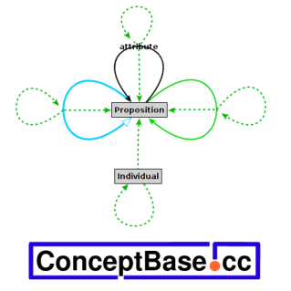 |
Abstract. ConceptBase.cc (in short ConceptBase) is a multi-user deductive object manager intended for conceptual modeling, metamodeling, and coordination in design environments. The system implements O-Telos, a dialect of Telos integrating deductive and object-oriented paradigms. It uniformly represents all information regardless of its abstraction level (data, class, meta class, meta meta class etc.) in a single data structure called P-facts. The deductive query language is seamlessly integrated into the meta class hierarchy. Modeling is supported by meta classing, deduction and integrity checking, active rule specification, functional definition of computation, a module concept, and a rollback mechanism for querying past database states. These principles are combined orthogonally, e.g. deductive rules can be restricted to modules, formulated for meta classes, employed in active rules using functional definitions to compute properties, and be revised without overwriting the earlier definitions. The Java-based user interface CBIva offers a palette of graphical interfaces, such as an Telos editor and a graph editor. The communication between the user clients and the object base is organized in a client-server architecture using TCP/IP. The Java-based command line interface CBShell allows for easy scripting of commands directed to a ConceptBase server. The CBShell source code can also be used as a programming interface to ConceptBase.
Contributions to this manual were made by: Manfred Jeusfeld, Martin Staudt, Hans Nissen, Christoph Quix, Lutz Bauer, Rainer Gallersdörfer, Michael Gebhardt, Matthias Jarke, Thomas List, René Soiron.
Contributions to the source code of ConceptBase were made by: Masoud Asady, Lutz Bauer (module system), Markus Baumeister, Ulrich Bonn, Stefan Eherer, Rainer Gallersdörfer (object store), Michael Gebhardt, Dagmar Genenger, Michael Gocek, Rainer Hermanns, Manfred Jeusfeld (CB server, logic foundation, function component), David Kensche, André Klemann, Eva Krüger (integrity component), Rainer Langohr, Farshad Lashgari, Tobias Latzke, Xiang Li, Yong Li, Thomas List (object store), Andreas Miethsam, Hans Nissen (module system), Martin Pöschmann, Christoph Quix (CB server, view component), Christoph Radig (object base interface), Achim Schlosser, Tobias Schöneberg, René Soiron (optimizer), Martin Staudt (CB server, query component), Kai von Thadden (query component), Hua Wang (answer formatting), Claudia Welter, Thomas Wenig, and others. If you ever contributed to the ConceptBase source code and you are not listed here, then give us a note!
ConceptBase.cc is a deductive object base management system for meta databases. Its data model is a conceptual modeling language making it particularily well-suited for design and modeling applications. Its underlying data model allows to uniformly represent data, classes, meta classes, meta meta classes etc. yielding a powerful metamodeling environment. The system has been used in projects ranging from development support for data-intensive applications [JJQV99], requirements engineering [RaDh92, Eber97, NJJ*96], electronic commerce [QSJ02], and version&configuration management [RJG*91] to co-authoring of technical documents [HJEK90]. It has mostly been used in academia for developing specialized modeling languages by means of metamodeling [JJS*99, JJM*09, Jeus09].
The key features distinguishing ConceptBase.cc from other extended DBMS and meta-modeling systems are:
ConceptBase.cc implements the version O-Telos (= Object-Telos) of the knowledge representation language Telos [MBJK90]. O-Telos integrates a thoroughly axiomatized structurally object-oriented kernel with a predicative assertion language in the style of deductive databases. A complete formal definition can be found in [JGJ*95, Jeus92]. O-Telos is purely based on deductive logic but it also supports a frame-like representation of facts.
This user manual is tightly integrated with the ConceptBase.cc Forum. The ConceptBase.cc Forum is an Internet-based workspace where ConceptBase.cc developers and users share knowledge and example models. It contains numerous examples on how to solve certain modeling problems. It is highly recommended to join the workspace. More details are available at .
ConceptBase.cc is mainly used for metamodeling and for engineering customized modeling languages. The textbook [JJM*09]
Jeusfeld, M.A., M. Jarke, and J. Mylopoulos:
Metamodeling for Method Engineering.
Cambridge, MA, 2009. The MIT Press, ISBN-10: 0-262-10108-4.
introduces into the topic and provides six in-depth case studies ranging from requirements engineering to chemical device modeling. The book and this user manual are complementary to each other.
The knowledge representation language Telos has been one of the earliest attempts to integrate deduction, object-orientation and metamodeling [Stan86, MBJK90]. The O-Telos [Jeus92] dialect supported in ConceptBase.cc has as design goals the semantic simplicity, symmetry of deductive and object-oriented views, metamodeling flexibility, and extensibility at any abstraction level. This emphasis, technically supported by a careful mapping of O-Telos to Datalog with negation (DATALOG¬), has paid off both in user acceptance and ease of implementation. In essence, ConceptBase.cc is based on deductive database technology with object-oriented abstraction principles like object identity, class membership, specialization and attribution being coded as pre-defined deductive rules and integrity constraints.
Development of ConceptBase.cc started in late 1987 in the context of ESPRIT project DAIDA [Jark93] and was continued within ESPRIT Basic Research Actions Compulog 1 and 2 (1989 – 1995), the ESPRIT LTR project DWQ (Foundations of Data Warehouse Quality, 1996-1999), and the ESPRIT project MEMO (Mediating and Monitoring Electronic Commerce, 1999-2001). Versions have been distributed for research experiments since early 1988. ConceptBase.cc has been installed at more than eight hundred sites worldwide and is seriously used by about a dozen research projects in Europe, Asia, and the Americas.
The direct predecessor of O-Telos is the knowledge representation language Telos (specified by John Mylopoulos, Alex Borgida, Martin Stanley, Manolis Koubarakis, Dimitris Plexousakis, and others). Telos was designed to represent information about information systems, esp. requirements. Telos was based on CML (Conceptual Modeling Language) developed in the mid/late 1980-ties. A variant of CML was created under the label SML (System Modeling Language)1 and implemented by John Gallagher and Levi Solomon at SCS Hamburg. CML itself was based on RML (Requirements Modeling Language) developed at the University of Toronto by Sol Greenspan and others. Neither RML nor CML were implemented in 1987. They were regarded as theoretic knowledge representation languages with ’possible world semantics’. SML was implemented as a subset of CML using Prolog’s SLDNF semantics.
In 1987, we decided to start an implementation of Telos and quickly realized that the original semantics was too complex for an efficient implementation. The temporal component of Telos included both valid time (when an information is true in the domain) and transaction time (when the information is regarded to part of the knowledge base). The temporal reasoner for the dimensions in ConceptBase.cc V3.0 only to see that there were undesired effects with the query evaluator and the uniform representation of information into objects. Specifically, the specialization of a class into a subclass could have a valid time which could be incomparable to the valid time of an instance of the subclass. Any change in the network of valid time intervals could change the set of instances of a class. Because of that, we dropped the valid time as a built-in feature of objects but we kept the transaction time. A few other features like the declarative TELL, UNTELL and RETELL operations as proposed by Manolis Koubarakis in his master thesis on Telos were only implemented in a rather limited way - essentially forbidding direct updates to derived facts. On the other hand, O-Telos extends the universal object representation to any piece of explicit information and reduces the number of essential builtin objects to just five. So, some of the roots of Telos in artificial intelligence were abandoned in favor of a clear semantics and of better capabilities for metamodeling. More specifically, there are some important differences of O-Telos to the original Telos specification.
The ConceptBase.cc server adds further capabilities to O-Telos that were not defined/implemented in Telos:
Since we wanted to be able to manage large knowledge bases (millions of concepts rather than a few hundred), we decided to select a semantics that allowed efficient query evaluation. Telos included already features for deductive rules and integrity constraints. Thus, the natural choice was DATALOG¬ with perfect model semantics. The deductive rule evaluator and the integrity checker were ready in 1990. A query language ("query classes") followed shortly later. O-Telos exhibits an extreme usage of DATALOG¬:
O-Telos should be regarded as the data model of a database for metamodeling. It is capable to represent semantic features of (data) modeling languages like entity-relationship diagrams and data flow diagrams. Once modeled as meta classes in O-Telos, one simply has to tell the meta classes to ConceptBase.cc to get an environment where one can manipulate models in these modeling languages. Since all abstraction levels are supported, the models themselves can be represented in O-Telos (and thus be managed by ConceptBase.cc).
ConceptBase.cc 8.1 follows a client-server architecture. Clients and servers run as independent processes which interact via inter-process communication (IPC) channels (Fig. 1-1). Although this communication channel was initially meant for use in local area networks, it has been used successfully for nationwide and even transatlantic collaboration of clients on a common server.
The ConceptBase.cc server (CBserver) offers programming interfaces that allow to build clients and to exchange messages in particular for updating and querying object bases using the Telos syntax. We provide support for Java and to a very limited degree for C/C++. Descriptions of the interfaces and the corresponding libraries that are delivered with ConceptBase.cc can be found in the ConceptBase.cc Programmers Manual, available via the CB-Forum at . We like to note that the C/C++ interfaces were not maintained since we switched the user interface to Java.
Besides the Java/C API, the CBShell client (see section 7) can be used to interact with a CBserver via the command line or in shell scripts. CBShell is indeed a Java client of the CBserver. The CBShell can also serve as an example client for programming own application specific client tools. There is also a tool that creates an HTTP interface to a CBserver, see section BrokerReproxy in the CB-Forum . Clients would then interact with ConceptBase via HTTP requests.
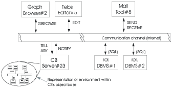
Figure 1.1: The client-server architecture of ConceptBase.cc
ConceptBase.cc comes with a standard usage environment implemented in Java which supports editing, ad-hoc querying and browsing (CBIva). The tool CBGraph supports editing diagrams extracted from the database, and CBShell is a command line shell for interacting with the database.
Although ConceptBase.cc provides multi-user support and an arbitrary number of clients may be connected to the same server process, ConceptBase.cc does not yet support concurrency control beyond a forced serialization of messages.
A performance comparison [Lud2010] of ConceptBase.cc with Protegé/Racer found that ConceptBase.cc is orders of magnitude faster for queries. It lacks however the reasoning capabilities of Protegé/Racer.
The ConceptBase.cc server (CBserver) can be compiled on at least the following platforms2 including
Pre-compiled binaries are provided for Linux (and thus also Windows 10). Compilation from the ConceptBase.cc sources on Mac OS-X and other platforms should be possible in principle, though we cannot provide support for them. See instructions distributed with the ConceptBase.cc source files for further details.
Implementation languages for the CBserver are Prolog3 (in particular for logic-based transformation and compilation tasks) and C/C++ (in particular for persistent object storage and retrieval).
The ConceptBase.cc usage environment (CBIva, CBGraph, CBShell) executes on any platform with a compatible Java Virtual Machine. Java 6, Java 7, or Java 8 should all work. We recommend the most recent stable version of Java 7 or Java 8.
The CBserver is dynamically linked with a couple of shared libraries. Under Linux/Unix can check whether all required libraries are installed by
export PATH=$CB_HOME/bin:$PATH ldd $CB_HOME/`CBvariant`/bin/CBserver
The installation of ConceptBase.cc requires about 50 MB of free hard disk space. The main memory requirements depend on the size of the object base loaded to the ConceptBase.cc server. The initial main memory footprint is just about 8 MB. We recommend about 20 MB of free main memory for small applications and 200 MB and higher for large applications of ConceptBase.cc. The server can handle relatively large databases consisting of a few million objects. Response times depend on the size of the database and even more on the structure of the query.
Since clients connect to a CBserver via Internet, the server requires the TCP/IP protocol to be available on both the client and the server machine (can be the same computer for single-user scenarios). Note that a firewall installed on the path between the client and the server machine might block remote access to a CBserver. The default port number used for the communication between server and client is 4001. It can be set to another port number by a command line parameter.
The CBserver is by default multi-user capable, i.e. multiple clients can connect to the same CBserver. This feature is by default disabled when you start the CBserver from within the user interface. See section 6 for more details.
The standard ConceptBase.cc client are CBIva and CBGraph (see section 8). The distribution also contains a client CBShell that can be used to interact with a ConceptBase.cc server using a command/shell window. The CBShell client can also be used to run non-interactive scripts, e.g. for loading a sequence of files with Telos source models into the CBserver.
The download and installation instructions are available from the ConceptBase.cc home page at . The binaries are installed via a self-extracting Java Archive (CBinstaller.jar).
The sources are made available as a ZIP archive CBPOOL.zip. Compilation from sources on platforms different from Linux requires in-depth expertise due to the manifold of programming languages used for ConceptBase (Prolog, C, C++, Java).
You can also install a virtual appliance (Linux) that includes the binaries, sources, and the complete development environment.
The default installation directory under Windows is c:\conceptbase. Under Linux, ConceptBase is installed by default in the user’s home directory $HOME/conceptbase.
This manual provides detailed information about using ConceptBase.cc. Information about the installation procedure can be found in the Installation Guide in directory doc/TechInfo. New users are advised to follow the installation guide for getting the system started and then to work through the ConceptBase.cc Tutorial. More information about the knowledge representation mechanisms, the applications, and the implementation concepts can be found in the references. Chapter 2 describes the ConceptBase.cc version of the Telos language and gives some examples for its usage. Chapter 6 discusses the parameters that can be set when starting the CBserver. Finally, section 8 describes the ConceptBase.cc Usage Enviroment.
Appendices contain a formal definition of the Telos syntax and internal data structures (A). Appendix C summarizes the mechanism for assigning graphical types to objects and adapting the graphical browsing tool for specific application needs. Appendix D contains the full Telos notation of an example model (D.1) and a case study on the modeling of entity-relationship diagrams with Telos (D.2). Plenty of further examples for particular application domains and add-ons for metamodeling can be retrieved from the ConceptBase.cc Forum at .
ConceptBase.cc 8.1 should be largely source-compatible to its direct predecessor. The binary database files and the graph files have a new format and are not compatible with their counterparts created by earlier releases.
The CBserver has now the ability to maintain module sources and query results formatted in external formats in the file system. The module sources allow to co-develop models both via the ConceptBase.cc user interface and by external text editors. Exporting query results in external formats is useful when they are post-processed by external tools. For example, one can generate program source code from a ConceptBase.cc model and have that code processed by a compiler.
The active rule component now supports constructs to enforce a transactional execution of delayed triggers. Triggers can be passed to different queues that are processed with different priorities. This feature allows to delay certain triggers until the consequences of the current trigger are all processed.
The graph editor is now a stand-alone tool and has the ability to store connection details plus a snapshot of the module sources in its graph files. The graph files are then self-contained and can be viewed and updated without having to maintain the module sources elsewhere. It also can display a background image in the graph window. Nodes can now be configured to be resizable. Lines are now drawn with anti-aliasing, yielding much better graph images.
The CBShell utility now behaves more like a Linux/Unix shell. It provides easy shortcuts like ’cd’ for changing the module context. It also allows the use of positional parameters, hence making it a better companion to Linux/Unix scripts.
The release notes to ConceptBase.cc 8.1 lists all major changes and issues. You find the release notes in the subdirectory doc/TechInfo of your ConceptBase.cc installation directory or via the web site .
The system still has about the same memory footprint as it used to be 10 years ago. You can easily install the complete system for all supported platforms on a 32 MB memory stick.
ConceptBase.cc is distributed under a FreeBSD-style copyright license since June 2009. Both binary and source code are available via .
The FreeBSD-style copyright license of ConceptBase.cc reads like follows:
The ConceptBase.cc Copyright
Copyright 1987-2019 The ConceptBase Team. All rights reserved.
Redistribution and use in source and binary forms, with or without modification, are permitted
provided that the following conditions are met:
1. Redistributions of source code must retain the above copyright notice, this list of
conditions and the following disclaimer.
2. Redistributions in binary form must reproduce the above copyright notice, this list of
conditions and the following disclaimer in the documentation and/or other materials
provided with the distribution.
THIS SOFTWARE IS PROVIDED BY THE CONCEPTBASE TEAM ``AS IS'' AND ANY EXPRESS OR IMPLIED WARRANTIES,
INCLUDING, BUT NOT LIMITED TO, THE IMPLIED WARRANTIES OF MERCHANTABILITY AND FITNESS FOR A
PARTICULAR PURPOSE ARE DISCLAIMED. IN NO EVENT SHALL THE CONCEPTBASE TEAM OR CONTRIBUTORS BE
LIABLE FOR ANY DIRECT, INDIRECT, INCIDENTAL, SPECIAL, EXEMPLARY, OR CONSEQUENTIAL DAMAGES
(INCLUDING, BUT NOT LIMITED TO, PROCUREMENT OF SUBSTITUTE GOODS OR SERVICES; LOSS OF USE, DATA,
OR PROFITS; OR BUSINESS INTERRUPTION) HOWEVER CAUSED AND ON ANY THEORY OF LIABILITY, WHETHER IN
CONTRACT, STRICT LIABILITY, OR TORT (INCLUDING NEGLIGENCE OR OTHERWISE) ARISING IN ANY WAY OUT
OF THE USE OF THIS SOFTWARE, EVEN IF ADVISED OF THE POSSIBILITY OF SUCH DAMAGE.
The views and conclusions contained in the software and documentation are those of the authors
and should not be interpreted as representing official policies, either expressed or implied,
of the ConceptBase Team.
This license makes ConceptBase.cc free software as promoted by the Free Software Foundation. The license is upwards-compatible to the GNU Public License (GPL), i.e. developers can combine GPL-ed software with ConceptBase.cc software as long as they include the above FreeBSD-style license for the ConceptBase.cc components. It should also be compatible with many other free license models. The source code is copyrighted by The ConceptBase Team, consisting of all contributors to the source code at the central code repository of the system.
Binary and source distributions of ConceptBase.cc may contain third-party software. Their licenses are listed by default in the directory doc/ExternalLicenses of the installation directory.
You are welcome to contribute the ConceptBase.cc project! Join the ConceptBase.cc Forum at to do so. We are also happy to learn about your research/application, in which ConceptBase.cc plays a role. If you publish results of your work, then please include a reference pointing to this user manual and/or to the standard ConceptBase.cc reference [JGJ*95].
The ConceptBase.cc system is published under the liberal FreeBSD-style license, which allows commercial use and modification of the source code. This user manual is however published under a less liberal copyright license. Use is permitted for private and academic purposes. Moreover, commercial users may use the manual to self-study the ConceptBase.cc system. Only members of The ConceptBase Team, see , are allowed to modify the user manual. Re-publication of the user manual in print or online is not permitted. If you make changes to your own copy of the source code of ConceptBase.cc, then you may not document them in this user manual (or its sources). You rather should write a companion report that lists the differences of your version of ConceptBase.cc to the user manual distributed via the home page of ConceptBase.cc ().
The ConceptBase.cc Forum () contains material submitted by different authors. The default license for the material on the CB-Forum is "Creative Commons BY-NC 4.0", which does not permit commercial use of its content.
The ConceptBase.cc logo at is created and copyrighted by Manfred Jeusfeld. It may be used on official ConceptBase.cc web sites, the ConceptBase.cc User Manual and Tutorials, and the ConceptBase.cc Forum. It may also be included in binary distributions created by members of the ConceptBase Team. If you are not a member of the ConceptBase.cc Team and like to use the logo for your own binary distribution of ConceptBase.cc, then you need to ask the copyright holder for a permission.
All trademarks are owned by their respective owners. This report may contain flaws based on human errors. We disclaim liability for any such flaws. It may also be that the ConceptBase.cc does not provide all functionality described in this report, or that the functionality is provided by other mechanisms as described in this report. Links to external websites are provided for informational (academic) purposes. We disclaim responsibility for the views expressed on these websites.
We sometimes use the short form ConceptBase. We then always refer to ConceptBase.cc.
ConceptBase.cc is an implementation of the O-Telos data model. O-Telos is derived from the knowledge representation language Telos as designed by Borgida, Mylopoulos and others [MBJK90]. While Telos was geared more to its roots in artificial intelligence, O-Telos is more geared to database theory, in particular to deductive databases. Nevertheless, O-Telos is to a large degree compatible to the original Telos specification. In some respects, it generalizes Telos, for example by removing the requirement to classify objects into the levels for tokens, simple classes, and meta classes. In O-Telos, we have just five predefined objects (see appendix on the axioms of O-Telos).
Telos (and O-Telos) as well also have strong links to the semantic web, in particular to the triple predicates used for defining RDF(S) statements. The main difference is that O-Telos is based on quadruples where the additional components identifies the statement. While RDF(S) has to use special link types to reify triple statements, i.e. to make statements about statements, O-Telos statements are simply referred to by their identifier.
Telos’ structurally object-oriented framework generalizes earlier data models and knowledge representation formalisms, such as entity-relationship diagrams or semantic networks, and integrates them with predicative assertions, temporal information, and in particular metamodeling. This combination of features seems to be particularly useful in software information applications such as requirements modeling and software process control. A formal description of O-Telos can be found in [MBJK90, Jeus92]. The following example is used throughout this section to illustrate the language:
A company has employees, some of them being managers. Employees have a name and a salary which may change from time to time. They are assigned to departments which are headed by managers. The boss of an employee can be derived from his department and the manager of that department. No employee is allowed to earn more money than his boss.
This section is organized as follows: first, the "logical" and "frame" representations of O-Telos are explained. Then, the predicative sublanguage for deductive rules and integrity constraints are presented. Subsection 2.3 presents a declarative query language which introduces queries as classes with optional predicative membership specification.
As a hybrid language O-Telos supports two different representation formats: a logical ("propositions") and a frame representation. The latter format is based on the logical one. As explained in the next subsections the logical representation also forms the base for integrating a predicative assertion language for deductive rules, queries, and integrity constraints into the frame representation. We start with the so-called P-fact representation of a O-Telos database.
A historical O-Telos database is a finite set of propositions (=P-facts=objects):
| OB = {P(oid,x,n,y,tt)| oid,x,y,tt ∈ ID, n ∈ LABEL} |
where oid has the key property within the set, ID is an infinite but countable set of identifiers. The set LABEL is a set of names over some alphabet. The components oid, x, n, y, tt are called identifier, source, label (or name), destination and transaction time of the proposition1. We read them as follows:
The object x has a relationship called n to the object y. This relationship is believed by the system for the time interval tt.
The transaction time tt is represented by two time points tt(a,b), where a is the time when the tell time and b the untell time of the P-fact. The historical O-Telos database is the basis for the rollback O-Telos database that is visible at a given point of time.
| OBrbt = {P(oid,x,n,y)| P(oid,x,n,y,tt) ∈ OB, rbt ≪ tt} |
The clause t1 ≪ t2 expresses that the time interval t1 is contained in time interval t2, i.e. t1 is during t2. The value of the rollback time depends on the kind of formula to be processed: integrity constraints are always evaluated against the current database OBnow2 (now=the smallest time interval that contains the current time). The rollback time of queries is usually provided together with the query when it is submitted from a user interface to a ConceptBase server. By default, it is now as well. Subsequently, we shall use OBrbt rather than OB. Note that OBrbt strips the transaction time tt from the P-facts. We shall still call both a P-fact. Any P-fact from OBrbt has a unique counterpart in OB, hence the transaction time can always be looked up in OB. We demand that any OBrbt is consistent but do not demand it for the database OB, which stores the whole history of updates.
O-Telos imposes some structural axioms on databases, e.g. referential integrity, correct instantiation and inheritance ([Jeus92]). The complete list of axioms is contained in appendix B. The axioms are linked to predefined objects that are part of each O-Telos database. There are five predefined O-Telos objects for five patterns of propositions:
ConceptBase supports deductive rules for deriving the instantiation of an object to a class and attributes/relations between objects. This derived information has no object property, i.e. it is not identified and it is not represented as a proposition. Specifically, the instantiation of propositions to the above five pre-defined objects is derived by deductive rules, specifically by axioms 18-22 in appendix B.
Additional to the above predefined classes3, there are the builtin classes Class, Integer, Real and String. Class contains all so-called classes (including itself) as instances. The only special property of Class is the definition of two attribute categories rule and constraint. Hence, instances of classes can have deductive rules and integrity constraints. Integer and real numbers are written in the usual way, strings are character sequences, e.g. "this is a string". These three classes are supported by comparison predicates like (x < y) discussed in section 2.2, and by functions like PLUS, MINUS discussed in section 2.5.
As legacy support, ConceptBase provides the pre-defined classes Token, SimpleClass, MetaClass, and MetametaClass to structure the database into objects that have no instances (tokens), objects that have only tokens as instances (simple classes), objects that have only simple classes as instances (meta classes), and finally objects that have only meta classes as instances (meta meta classes). These classes are provided only for compatibility with older Telos specifications. In fact, an absolute hierarchy from tokens to simple classes to meta classes etc. is not an essential ingredient of O-Telos and in many situations too restrictive.
Instead, meta class levels are implicitely expressed via instantiation. If an object x is an instance of object c and object c is an instance of object mc, then mc is also called a meta class of x, and c a class of x. Being a class or a meta class is relative to the object x that we consider. For example, mc is the class of c. This implicit definition of the meta class concept is far more flexible than a fixed structure:
Strict conformance to the membership to meta class levels can still be enforced by user-definable integrity constraints.
As a user, you don’t work directly with propositions but with textual (frame) and graphical (semantic networks) views on them. Both are not based on the oid’s of objects but on their label components. To guarantee a unique mapping we need the following naming axiom:
Naming axiom (see also axioms 2,3,4 in appendix B)
- The label (“name”) of an individual object must be unique, i.e. if two objects have the same label than they are the same.
- The label of an attribute must be unique within all attributes with a common source object, i.e. no two explicit attributes of the same object can have the same label. However, two different objects can well have attributes sharing the same label.
- The source and destination of an instantiation object are unique, i.e. between two objects x and y may be at most one explicit instantiation link.
- The source and destination of a specialization object are unique.
The frame syntax of O-Telos groups the labels of propositions with common source o around the label of o. The exact syntax is given in appendix A. In this section we introduce it by modeling the employee example:
Employee in Class with
attribute
name: String;
salary: Integer;
dept: Department;
boss: Manager
end
Manager in Class isA Employee end
Department in Class with
attribute
head: Manager
end
The label of the “common source” in the first frame is Employee. It is declared as instance of the class Class and has four attributes. The class Manager is a subclass of Employee.
Oid’s (preceded by ‘#’ in our examples) are generated by the system. This leads to the following set of propositions corresponding to the frames above. The transaction time inserted by the system is denoted by omission marks.
P(#E,#E,Employee,#E) P(#1,#E,*instanceof,#Class) P(#3,#E,name,#String) P(#4,#E,salary,#Integer) P(#5,#E,dept,#D) P(#6,#E,boss,#M) P(#M,#M,Manager,#M) P(#7,#M,*instanceof,#Class) P(#8,#M,*isa,#E) P(#D,#D,Department,#D) P(#9,#D,*instanceof,#Class) P(#10,#D,head,#M)
Instantiation to the pre-defined class Individual is implicitly given by the structure of the three individual propositions named Employee, Manager, and Department. Analogously, the attributes #3, #4, #5, #6 and #10 are automatically regarded as instances of the class Attribute. The instances of Attribute are also called attribution objects or explicit attributes. Propositions #1, #2, #7 and #9 are instances of the class InstanceOf (holding explicit instantiation objects), and #8 is an instance of the class IsA (explicit specialization objects). Note that all relationships are declared by using the identifiers (not the names) of objects. Thus, #Class, denotes the identifier of the object Class etc.
The identifiers are maintained internally by ConceptBase’s object store. Externally, the user refers to objects by their name. A standard way to describe objects together with their classes, subclasses, and attributes is the frame syntax. Frames are uniformly based on object names.
The next frames establish two departments labelled PR and RD and state that the individual object mary is an instance of the class Manager. Mary has four attributes labelled hername, earns, advises and currentdept which are instances of the respective attribute classes of Employee with labels name, salary and dept.
mary in Manager with
name
hername: "Mary Smith"
salary
earns: 15000
dept
advises:PR;
currentdept:RD
end
PR in Department end
RD in Department end
The corresponding propositions for the frame describing mary are:
P(#mary,#mary,mary,#mary) P(#E1,#mary,*instanceof,#M) P(#E3,#mary,hername,"Mary Smith") P(#E4,#E3,*instanceof,#3) P(#E5,#mary,earns,15000) P(#E6,#E5,*instanceof,#4) P(#E7,#mary,advises,#PR) P(#E8,#E7,*instanceof,#5) P(#E10,#mary,currentdept,#RD) P(#E11,#E10,*instanceof,#5)
The attribute categories name, salary and dept must be defined in one of the classes of mary. In this case mary is also instance of Employee due to the following axiom which defines the inheritance of class membership in O-Telos, and hence can instantiate these attributes:
Specialization axiom (axiom 13 in appendix B)
The destination (“superclass”) of a specialization inherits all instances of its source (“subclass”).
An example is the specialization #8: all instances of Manager (including mary are also instances of Employee. O-Telos enforces typing of the attribute values by the following general axiom:
Instantiation axiom (axiom 14 in appendix B)
If p is a proposition that is instance of a proposition P then the source of p must be an instance of the source of P, and the destination of p must be an instance of the destination of P.
For example, “Mary Smith” must be an instance of String. The individual mary also shows another feature: attribute classes specified at the class level do not need to be instantiated at the instance level. This is the case for the boss attribute of Employee. On the other hand, they may be instantiated more than once as e.g. dept.
In some cases for attribute categories occuring in a frame the corresponding objects which are instantiated by the concrete attributes, can not uniquely be determined4. This multiple generalization/instantiation problem is solved5 by the following condition which must hold for O-Telos databases:
Multiple generalization/instantiation axiom (axiom 17 in appendix B)
If p1 and p2 are attributes of two classes c1 and c2 which have the same label component l, and i is a common instance of c1 and c2 which has an attribute with category l, then there must exist a common specialization c3 of c1 and c2 with an l labelled attribute p3 which specializes p1 and p2, and i is instance of c3. Particularly if c1 is specialization of c2 and p1 is specialization of p2, c1 and p2 already fulfill the conditions for c3 and p3.
O-Telos treats all three kinds of relationships (attribute, isa, in) as objects. Thus each attribute, instantiation or generalization link of Employee may have its own attributes and instances. For example, each of the four Employee attributes is an instance6 of an attribute class denoted by the label attribute but can also have instances of its own. The attribute with label earns of mary is an instance of attribute salary of class Employee. Syntactically, attribute objects are denoted by appending the attribute label with an exclamation mark to the name of some individual. The relationship between salary and earns could be expressed as
mary!earns in Employee!salary end
Instantiation links are denoted by the operator ”->” and specialization links by
”=>”. They should always be enclosed in parentheses:
(mary->Manager) end (Manager=>Employee) end
The operators can be combined to form complex expressions.
The next example shows how to reference the instantiantion link
between the attribute mary!earns and its attribute class Employee!salary.
The second frame shows that arbitrarily complex expressions are possible.
The parentheses have to be used to make the operator expressions unique. The attribution operator
”!” has a stronger binding than the instantiation and specialization operators.
According to our own experience, complex expressions for denoting objects are rare in modeling.
It is good to know that any object in O-Telos can be
uniquely referenced in the frame syntax.
(mary!earns->Employee!salary) with
comment
com1: "This is a comment to an instantiation between attributes"
end
(mary!earns->Employee!salary)!com1 with
comment
com2: "This is a comment to the the previous comment attribute"
end
The labels InstanceOf, IsA and Attribute for the three Telos system classes are indeed alias names for the following object expressions:
Attribute <---> Proposition!attribute InstanceOf <---> Proposition->Proposition IsA <---> Proposition=>Proposition
Hence, Attribute as the alias name for the attribute with label attribute of Proposition. InstanceOf is the alias name for the instantiation link between Proposition and Proposition. The object Proposition is indeed an instance of itself because it has the shape of an individual object, which is a special case of the shape of a proposition. Finally, IsA is an alias name for the specialization link between Proposition and Proposition. This representation is deviates slightly from the axioms in appendix B because it was originally implemented in ConceptBase in this way. The reflexive definition of InstanceOf (IsA) as instantiation (specialization) links is redundant since O-Telos axioms 18-22 derive these instantiations anyway.
Figure 2.1 shows the graphical representation of mary and her relationships to the other example objects. Labelled links are attributes/relations. The thicker link from Manager to Employee is a specialization. The other links are instantiations. If a link is dotted, then it is derived. Individual objects are displayed as nodes.
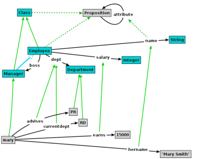
Figure 2.1: Graph representing the example database
O-Telos propositions have a temporal component: the transaction time7. The transaction time of a proposition is not assigned by the user but by the system at the the time of an update (TELL, UNTELL, RETELL). ConceptBase uses right-open and closed predefined time intervals. Right-open time intervals are represented like in the subsequent example:
P(#mary,#mary,mary,#mary,tt(millisecond(1992,1,11,17,5,42,102),
infinity))
The object mary is believed since 17:05:42 on January 11, 1992. The label ’infinity’ denotes that the end time of the object lies in the future and is not yet known. In any case, the current time ’now’ is regarded to be smaller than ’infinity’. Right-open transaction times indicate objects that are part of the “current” knowledge base.
Closed intervals (denoted by binary tt-terms) indicate “historical” objects, i.e. objects that have been untold. Example:
P(#E1,#mary,*instanceof,#M,tt(millisecond(1992,1,11,17,5,42,0),
millisecond(1995,12,31,23,59,59,999))
The object #E1, i.e. the instantiation of mary to the class Manager is believed from 17:05:42 on January 11, 1992, until the end of the last millisecond of the year 1995. We call the first component of the transaction time also the start time object and the second component the end time. Start and end time of an object can be retrieved by the predicates Known, and Terminated (see section 2.2). Transactions in ConceptBase usually add or terminate several propositions. At the begin of the transaction, ConceptBase reads the current time and uses it to set the transaction time of all affected propositions. Consequently, all inserted propositions get the same start time of their transaction time and all terminated propositions get the same end time of their transaction time. The database does not change between two transactions, hence the finite sequence of transaction times can be used to enumerate all updates to the database. Examples on how to inspect the database using the transaction time are in the CB-Forum at .
The ConceptBase predicative language CBL [JK90] is used to express integrity constraints, deductive rules and queries. The variables inside the formulas have to be quantified and assigned to a “type” that limits the range of possible instantiations to the set of instances of a class. ConceptBase offers a set of predicates for the predicative language defined on top of an O-Telos database as visible for a given rollback time, i.e. OBrbt for some rbt. Any rule, constraint or query is run against OBrbt rather than the full database OB.
The following predicates provide the basic access to an O-Telos database. Some have both an infix and a prefix notation. As usual we employ the object identifer to refer to an object.
"tt(millisecond(yr,mo,d,h,min,sec,millisec))".
It is regarded as an instance of the class TransactionTime.
"tt(infinity)".
The predicates In2 and A2 are also called macro predicates since they are standing for sub-formulas. They are fully supported in constraints of query classes. The predicate A2 is not yet supported for deductive rules and integrity constraints due to limitations of the formula compiler. You can use the AL predicate instead. Examples on using macro predicates are available from the CB-Forum (). They are also discussed in more detail in section 2.7.
The relation of the above predicates and the P-facts of the database is defined by the O-Telos axioms (appendix B). For example, axiom 7 states
| ∀ o,x,n,y,p,c,m,d P(o,x,n,y) ∧ P(p,c,m,d) ∧ In(o,p) ⇒ AL(x,m,n,y) |
So, if an attribute object o of an object x is an instance of an attribute object p of the object c, then AL(x,m,l,y) (also written as (x m/n y) can be derived. This axiom provides those solutions to the AL predicate that are directly based on P-facts. Further solution can be derived via user-defined deductive rules. The other predicates are based on P-facts as well. The Ai predicate is for historical reasons not included in the list of axioms. It is defined as
| ∀ o,x,n,y,p,c,m,d P(o,x,n,y) ∧ P(p,c,m,d) ∧ In(o,p) ⇒ Ai(x,m,o) |
There are a few variants for the predicates for instantiation, specialization and attribution to check whether a fact is actually stored or deduced:
The above predicates can be used, for example, to define defaults values (see ) Since deduction should be transparent to the user, one should avoid using the above predicates if the proper predicates In(x,c) and A(x,n,y) can do the job.
The attribution of objects in O-Telos (axioms 7 and 8 in appendix B) is more generic than in object-oriented approaches, in particular UML. In O-Telos, an attribution relates two arbitrary objects. In languages such as UML, attributes are defined at classes to declare which states an object (instance of the class) may have. This is well possible in O-Telos as well, e.g. by declaring the integer-valued salary attribute of a class Employee and using it for instances of the class. However, O-Telos does not restrict attributes to just values. The target of an attribute can be any object. Hence, the concept of an attribute in O-Telos is the generalization of an UML association and an UML attribute. A second difference is that an O-Telos attribute has essentially several labels tagged to it: its own label (object label) and the labels of its attribute categories (class labels). The latter are the labels of the attributes declared at the classes of an object, the first is the label of the attribution at the level of the object that has the attribute. We illustrate this subsequently.
Attributes at the instance level are instances of attributes at the class level (=attribute categories). An attribute category at the class level can be instantiated several times at the instance level. For example, consider the frame for Mary:
mary in Manager with
name,aliasname
hername: "Mary Smith"
salary
earns: 15000
dept
advises:PR;
currentdept:RD
end
The object mary has four attributes with object labels hername, earns, advises, and currentdept. The attribute categories are name, aliasname, salary, and dept. The last category is instantiated twice. ConceptBase uses the following predicate facts (infix variant of the AL predicate) to express the content of the frame:
(mary in Manager) (mary name/hername "Mary Smith") (mary aliasname/hername "Mary Smith") (mary salary/earns 15000) (mary dept/advises PR) (mary dept/currentdept RD)
So, there are four attributes using four attribute categories. Like an object can have multiple classes, an attribute can have multiple categories. In fact, explicit attributes in O-Telos are just objects and their attribute categories are their classes. At the lowest abstraction level (tokens), the object labels of the attributions frequently do not carry a specific meaning and can then be neglected when formulating logical expressions. The attribution predicate (x m y) performs just this projection. In the example, the following attributions facts are true:
(mary name "Mary Smith") (mary aliasname "Mary Smith") (mary salary 15000) (mary dept PR) (mary dept RD)
The class labels name, aliasname etc. are defined at an abstraction level where the meaning of some application domain is captured. The class label (attribute category) of an attribute is defined as an object label of an attribute at the class level. For example, the name and aliasname attributes could be defined for the class Employee as follows:
Employee in Class with
attribute,single
name: String
attribute
aliasname: String
end
Here, the following predicate facts would be true:
(Employee in Class) (Employee attribute/name String) (Employee single/name String) (Employee attribute/aliasname String) (Employee attribute String) (Employee single String)
The mechanism for attribution is exactly the same as for instances like mary. Note that the 3-argument attribution predicate expressing (mary name "Mary Smith") represents a meaningful statement for some reality to be modeled. On the other hand, the predicate fact (Employee attribute String) is less significant because the label attribute does not transport a specific domain meaning. Here, the 4-argument attribution predicate such as used for the fact (Employee attribute/name String) is required. Still, from a formal point of view, there is no different treatment of predicates at the class and instance level. This uniformity is the basis for meta-modeling, i.e. the definition of modeling languages by means of meta classes. The class labels attribute and single need to be defined at the classes of Employee. Those are Class and the pre-defined class Proposition, to which any object including Employee and mary is instantiated. In this case, both attribute and single are defined for Proposition:
(Proposition attribute/attribute Proposition) (Proposition attribute/single Proposition)
Note that attribute has itself as category. This is the most generic attribute category and applies to any (explicit) attribution. For this reason, the category attribute can also be omitted in frame definitions of objects. The above definition of Employee is equivalent to
Employee in Class with
single
name: String
attribute
aliasname: String
end
Both the attribution predicate (x m y) and its long form (x m/n y) can be derived, i.e. occur as conclusion of a deductive rule. In such cases, there are no explicit attribute objects between x and y. ConceptBase demands, that in such cases one of the classes of x has an attribute with label m. Deductive rules for (x m/n y) are introduced with ConceptBase V7.1. They allow to simulate multi-sets, i.e. derived attributes where the same value can occur multiple times. Examples are available in the CB-Forum ().
The instantiation of an explicit attribute to an attribute category can be explicit (see above), or via inheritance, or via a user-defined rule. Explicit instantiation is typically established when telling a frame like the Employee example to the database. Instantiation by inheritance is more rarely used but is in fact just the application of the specialization principle to attribution objects:
Employee with
attribute
salary: Integer
end
Manager isA Employee with
attribute
bonus: Integer
end
Manager!bonus isA Employee!salary end
Here, the bonus attribute is declared as specialization of the salary attribute. Any instance of the bonus attribute will then be an instance of the salary attribute via the usual class membership inheritance of O-Telos. For example,
mary in Manager with
bonus
bon1: 10000
end
shall make the following attribution facts true:
(mary bonus/bon1 10000) (mary bonus 10000), A_e(mary,bonus,10000) (mary salary/bon1 10000) (mary salary 10000), A_e(mary,salary,10000) (mary attribute/bon1 10000) (mary attribute 10000), A_e(mary,attribute,10000)
The third method to instantiate an explicit attribute to an attribute category is via a user-defined rule. We use the employee example again:
Employee in Class with
attribute
salary: Integer;
premium: Integer;
country: String
rule
premrule: $ forall e/Employee prem/Employee!premium
(e country "NL") and Ai(e,premium,prem)
==> (prem in Employee!salary) $
end
Now, consider the following instances:
marijke in Employee with salary sal: 50000 premium pr: 3000 country ctr: "NL" end
This makes the following attribution facts true:
(marijke salary/sal 50000) (marijke salary 50000), A_e(marijke,salary,50000) (marijke premium/pr 3000) (marijke premium 3000), A_e(marijke,premium,3000) (marijke salary/pr 3000) (marijke salary 3000), A_e(marijke,salary,3000) (marijke country/ctr "NL") (marijke country "NL"), A_e(marijke,country,"NL")
Hence, any explicit premium attribute of an employee of the Netherlands is regarded as an explicit salary as well.
Note that the three cases discussed here are for explicit attribution objects. You may also define rules that derive (x m y) or (x m/n y) directly. In such cases, there is no need for an explicit attribute between x and y. The attribution is complelety derived.
In order to avoid ambiguity, neither in and isa nor the logical connectives and and or are allowed as attribute labels8. Likewise, names of predicates such as A, Ai, In should not be used as object names or variable names. The same holds for the keywords with and end, which are used in the frame syntax.
The next predicates are second class citizens in formulas. In contrast to the above predicates they cannot be assigned to classes of the O-Telos database base. Consequently, they may only be used for testing, i.e. in a legal formula their parameters must be bound by one of the predicates 1 - 8.
All comparison predicates may use functional expressions as operands. They are evaluated before the comparison predicates is evaluated. See section 2.3.3 for examples. The predicates (x == y), UNIFIES(x,y) and IDENTICAL(x,y) defined in earlier releases of ConceptBase are deprecated. It is recommended to use (x = y) instead.
The exact syntax of CBL is given in appendix A. The types of variables (i.e. quantified identifiers) are interpreted as instantiations:
The class C attached to variable x is called the variable range. The anonymous variable range VAR is treated as follows.
Anonymous variable ranges are only permitted in meta formulas, see section 2.2.9.
We demand that each variable is quantified exactly once inside a formula. This is no real restriction: in case of double quantification rename one of the variables. More important is a restriction similar to static type checking in programming languages that demands a strong relationship between formulas and the knowledge base:
Predicate typing condition
(1) Each constant (= arguments that are not variables) in a formula F must be the name of an existing object in the O-Telos database, or it is a constant of the builtin classes Integer, Real, or String.(2) For each attribution predicate (x m y) (or Ai(x,m,o), resp.) occuring in a formula there must be a unique attribute labelled m of some class c of x in the knowledge base, the so-called concerned class.
(3) For each instantiation predicate (x in c), the argument c must be a constant.
All instantiation and attribution predicates need to be "typed" according to the predicate typing condition. Formally, we don’t assign types to such predicates but concerned classes. Any instantiation predicate and any attribution predicate in a formula must have a unique concerned class. It is determined as follows:
Example: The concerned class of (e boss b) in the SalaryBound constraint in subsection 2.2.8 is the Employee!boss. The class of variable e is Employee. This is the most special superclass of itself and indeed defines the attribute Employee!boss.
The purpose of the predicate typing condition is to allow ConceptBase to compile attribution predicates (x m y) to an internal form Adot(cc,x,y) that replaces the attribute label m by the object identifier cc of the concerned class. This enourmously speeds up the computation of predicate extensions. A similar effect is applicable to instantiation predicates. Here, the concerned class of (x in c) is c. Another effect of the predicate typing condition is that certain semantically meaningless predicate occurrences are detected at compile time. For example, (x m y) can only have a non-empty extension, if some class of x defines an attribute with label m.
If the argument x in a predicate (x m y) is a variable, then the initial class of x is determined by the the variable range in the formula. The variable this of query class constraints can have multiple initial classes, being the set of superclasses of the corresponding query class. All superclasses of c are also regarded as classes of x. If x is a constant, then the classes of x are determined by a query to the database. A formula violating the first clause of the predicate typing condition would make a statement about something that is not part of the database. As an example, consider the following formula:
forall x/Emplye not (x boss Mary)
With the example database of section 2.1, we find two errors: There are no objects with names Emplye and Mary.
There are two possible cases to violate the second part of the restriction. The first case is illustrated by an example:
forall x/Proposition y/Integer (x salary y) ==> (y < 10000)
In this case the classes of x, Proposition and any of its superclasses, have no attribute labelled salary. Therefore, the predicate (x salary y) cannot be assigned to an attribute of the database. Instead, one has to specify
forall x/Employee y/Integer (x salary y) ==> (y < 10000)
or
forall x/Manager y/Integer (x salary y) ==> (y < 10000)
depending on whether the formula applies to managers or to all employees.
The second clause of the predicate typing condition is closely related to multiple generalization/instantiation. Suppose, we add new classes Shop, Guest and GuestEmployee to the given class Employee:
Shop in Class
end
Guest in Class with
attribute
dept: Shop
end
GuestEmployee in Class isA Guest,Employee
end
The following formula refers to objects of class GuestEmployee and their dept attribute. The problem is that two different attributes, Employee!dept and Guest!dept, apply as candidates for the predicate (x dept PR):
forall x/GuestEmployee (x dept PR) ==> not (x in Manager)
In order to solve this ambiguity, we demand that in such cases a common subclass exists that defines an attribute dept which conforms to both definitions, e.g.
Shop in Class
end
GuestEmployee with
attribute
dept: ShopDepartment
end
ShopDepartment in Class isA Shop,Department
end
The third clause of the predicate typing condition is forbidding instantiation predicates with a variable in the class postion. The restriction is a pre-condition for an efficient implementation of the incremental formula evaluator of ConceptBase. Without a constant in the class position of (x in c) any update of the instances of any class matches the predicate. Hence, ConceptBase would need to re-evaluate the formula that contains the predicate. Since any update (TELL,UNTELL,RETELL) is containing instantiation facts, any formula with an unrestricted predicate (x in c) has to be re-evaluated for any update. This inefficiency can be avoied by demanding that the class position is a constant. A relaxation to this clause (and clause 2) is discussed in sub-section 2.2.9.
When compiling the frames, ConceptBase will make sure that the attribute GuestEmployee!dept is specializing the two dept attributes of Shop and Department. As a consequence, the attribution predicate (x dept PR) can be uniquely attached to its so-called concerned class GuestEmployee!dept.
The predicate typing condition holds for all formulas, regardless whether they occur as constraints or rules of classes or within query classes10.
A legal integrity constraint is a CBL formula that fulfills predicate typing condition. A legal deductive rule is a CBL formula fulfilling the same condition and having the format:
forall x1/c1 ... xn/cn R ==> lit(a1,...,am)
where
In O-Telos, rules and constraints are defined as attributes of classes. Use the category constraint for integrity constraints, and the category rule for deductive rules. The text of the formula has to be enclosed by the character ‘$’. The choice of the class for a rule or constraint is arbitrary (except for query classes which use the special variable ’this’).
Continuing our running example, the following formula is a deductive rule that defines the boss of an Employee. Note that the variables e,m are both forall-quantified.
Employee with
rule
BossRule : $ forall e/Employee m/Manager d/Department
(e dept d) and (d head m)
==> (e boss m) $
constraint
SalaryBound : $ forall e/Employee b/Manager x,y/Integer
(e boss b) and (e salary x) and (b salary y)
==> (x <= y) $
end
The second formula is an integrity constraint that uses the boss attribute defined by the above rule. The constraint demands a salary of an Employee does not exceed the salary of his boss. Note that you can define multiple salaries for a given instance of Employee. The constraint is on each individual salary, not on the sum11! Also note that the arguments of the <= predicate are bound by the two predicates with attribute label salary.
Some formulas violating the predicate typing condition can be re-written to a set of formulas that do not violate the condition. The so-called meta formulas are a prominent category of such formulas. They have occurrences of predicates with so-called meta variables. There are two cases. First, an instantiation predicate (x in c), :(x in c):, or In_s(x,c) where the class argument c is a variable. Second, an attribution predicate (x m y) or :(x m y): where the label argument m is a variable. In such cases, the concerned class cannot be determined directly even though the formula as such is meaningful. ConceptBase relies on predicate typing for the sake of efficiency and static stratification. The concerned class is internally used as predicate name. This increases the selectivity and reduces the chance on non-stratified deduction rules. Fortunately, all meta formulas can be re-written to formulas fulfilling the predicate typing condition. The re-writing replaces the meta variables by all possible value. Since all variables are bound to finite classes, the re-writing yields a finite set of formulas. However, if a meta variable is bound to a class with a large extension, the re-writing will also yield a large set of generated formulas.
Meta formulas allow to specify assertions involving objects from different levels and hence significantly improve flexibility of O-Telos models. An example for the usage of meta formulas can be found in the appendix D.2 where the enforcement of constraints in ER diagrams is solved in an elegant way.
As instructional example, assume we want to define that a certain attribute category M is transitive, i.e. if (x M y) and (y M z), then (x M z) shall hold. Many attribute categories are supposed to be transitive, for example the ancestor relation of persons, or the connection relation between cities in a railway network.
The following meta formula defines transitivity once and forever:
Proposition in Class with
attribute
transitive: Proposition
rule
trans_R:
$ forall x,y,z,M/VAR
AC/Proposition!transitive
C/Proposition
P(AC,C,M,C) and (x in C) and
(y in C) and (z in C) and
(x M y) and (y M z) ==> (x M z) $
end
The rule is a meta formula because C and M are meta variables. In this case, one can re-write the formula by replacing all possible fillers for AC, i.e. by the instances of Proposition!transitive. A filler for AC will determine fillers for C and M since the first argument of a proposition P(AC,C,M,C) is identifying the proposition.
As a consequence, one can define the ancestor relation to be transitive by simply telling
Person in Proposition with
transitive
ancestor: Person
end
ConceptBase will match the attribute Person!ancestor with the variable AC in the above meta formula. This yields P(Person!ancestor,Person,ancestor,Person), which binds the meta variable C to Person and M to ancestor. The resulting generated formula is:
forall x,y,z/VAR (x in Person) and (y in Person) and (z in Person)
and (x ancestor y) and (y ancestor z)
==> (x ancestor z)
which can be shortened to
forall x,y,z/Person (x ancestor y) and (y ancestor z)
==> (x ancestor z)
The technique to generate such ’shortened’ formulas is called partial evaluation. Its input are facts like (Person!ancestor in Proposition!transitive) and the output are formulas that specialize the original meta formulas for the case of the input facts.
The above formula is fulfilling the O-Telos predicate typing condition. Likewise, the connection relation of cities gets transitive via:
City in Proposition with
transitive
connection: City
end
The advantage of meta formulas is that they save coding effort by re-using them in different modelling contexts. If a meta formula is linked to an attribute category (like transitive in the example above, then the semantic of several such attribute category can be combined by just specifying that a certain attribute has multiple categories. Assume for example that we have defined acyclicy with a similar meta formula:
Proposition in Class with
attribute
acyclic: Proposition
constraint
acyclic_IC:
$ forall x,y,M/VAR
AC/Proposition!acyclic
C/Proposition
P(AC,C,M,C) and (x in C) and
(y in C) and
(x M y) ==> not (y M x) $
end
Then, the ancestor attribute can be specified to be both transitive and acyclic by
Person in Proposition with
transitive,acyclic
ancestor: Person
end
The more categories like transitive and acyclic are defined with meta formulas, the greater is the productivity gain for the modeler. Not only does it save coding effort. It also reduces coding errors since formula specification is a difficult task. Meta formulas are a natural extension to classical metamodeling. They allow to specify the meaning of modeling constructs at the meta class level. The mapping to simple formulas allows an efficient evaluation. It also allows to retrieve the specialized semantics definition of a model (instance of a metamodel) since the generated simple formulas are attached to the constructs of the model (in the example above they are attached to classes Person and City). The meta formula compiler is fully incremental, i.e. if the database is updated, then the set of generated simple formulas is also updated if necessary. For example, if one removes the category transitive from the connection attribute of City, then the generated simple formula will also be removed.
Meta formulas that contain meta variables under existential quantification cannot be compiled directly, but there is an elegant trick to circumvene this restriction. Consider for example the formula:
$ forall x/VAR SC/CLASS spec/ISA_complete
(spec super SC) and (x in SC) ==>
exists SUBC/CLASS (spec sub SUBC) and (x in SUBC) $
The meta variable SUBC is under an existential quantifier. To circumvene the problem, we write an intermediary rule replacing the predicate (x in SUBC):
$ forall x/Proposition spec/ISA SUBC/CLASS
(spec sub SUBC) and (x in SUBC) ==> (x inSubRel SUBC) $
and then re-write the original constraint to
$ forall x/VAR SC/CLASS spec/ISA_complete
(spec super SC) and (x in SC) ==>
exists SUBC/CLASS (spec sub SUBC) and (x inSubRel SUBC) $
So essentially, we pass the meta variable to the condition of the intermediary rule. The attribute inSubRel is just used to be able to specify a dedicated conclusion predicate for the intermediary deductive rule. It is defined as attribute of Proposition. The complete example is at .
Many more re-usable examples for meta formulas are in the ConceptBase-Forum at .
Meta formulas are compiled by ConceptBase using the partial evaluation strategy. Facts matching certain predicates of the meta formula trigger the partial evaluation, which then leads to new formulas that need to be compiled by ConceptBase. In certain cases, the generated formulas are themselves meta formulas, that need to be further partually evaluated when other matching facts are inserted to the system.
The implementation of the incremental compilation suggests that the meta formula and the input facts should not be defined in the same TELL transactions. When creating your models that involve meta formulas, you should put the definition of the meta formula in a different file than the class/object definitions hat utilize the meta formulas. It may also be wise to store the definitions in different modules (see section 5). Specifically, the meta formulas should be defined in a super-module of the modules that use these definitions.
In addition to the so called select expressions !,=>,-> already introduced above for directly refering to attributes, specializations and instantiations as objects, three other basic constructors may be used within frames and assertions.
Note, that . and | are only allowed to occur within assertions whereever classes may be interpreted as range restrictions, e.g. in quantifications or at the right hand side of in predicates. The full syntax which allows combinations of all basic constructors can be found in the appendix. For illustration we just give two examples here. The first is an alternative representation for the rule above, the second could be a constraint stating that all bosses of Mary earn exactly 50.000.
ConceptBase provides a couple of errors messages in case of an integrity violation. These errors messages refer to the logical definition of the constraint and are sometimes hard to read. To provide more readable error messages, one can attach so-called hints to constraint definitions. These hints are attached as comments with label hint to the attribute that defines the constraint.
Consider the salary bound constraint above. A hint could look like:
Employee!SalaryBound with
comment
hint: "An employee may not earn more than her/his manager!"
end
It is also possible to attach hints to meta-level constraints. In this case, the hint text can refer to the meta-level variables occuring in the meta-level constraint. These variables will be replaced by the correct fillers when the meta-level constraint is utilized in some modeling context.
Assume, for example, we want to have a symmetry category and attach a readable hint to it:
Proposition with
attribute
symmetric: Proposition
end
RelationSemantics in Class with
constraint
symm_IC: $ forall AC/Proposition!symmetric C/Proposition x,y/VAR M/VAR
P(AC,C,M,C) and (x in C) and (y in C) and
(x M y) ==> (y M x) $
end
RelationSemantics!symm_IC with
comment
hint: "The relation {M} of {C} must be symmetric,
i.e. (x {M} y) implies (y {M} x)."
end
Note that the references to the meta variables12 M and C are surrounded by curly braces, and that these meta variables are also occurring in the meta-level constraint. Now, use the symmetric concept in some modeling context, e.g. to define that the marriedTo attribute of Person should be symmetric:
Person with
symmetric
marriedTo: Person
end
At this point of time, ConceptBase will find the hint text for the symmetric constraint and will adapt it to the context of C=Person and M=marriedTo. When an integrity violation occurs, the substituted hint
"The relation marriedTo of Person must be symmetric,
i.e. (x marriedTo y) implies (y marriedTo x)."
will be presented to the user. An example violation is:
bill in Person with
marriedTo m1: eve
end
eve in Person end
One can also define a hint for the meta-level constraint that refers only to a (non-empty) subset of the meta variables. If a hint for a meta formula cannot be substituted as shown avove, ConceptBase will not issue the hint but rather the text of the generated formula.
Examples of user-defined error messages can be found in the ConceptBase-Forum at .
Immutable attributes cannot be changed (retold) once they are defined for their respective source object. For example, the two spouses in a marriage contract cannot be changed once the marriage contract object has been created. Key attributes in the entity relationship model are another example. Once an entity gets its key, the key may never be changed. Of course, the object as a whole can be removed.
ConceptBase provides an attribute category for such objects:
Proposition with
attribute
immutable: Proposition
end
The semantics cannot be expressed by a static integrity constraint but by an active rule that guards the deletion of immuntable attributes. See also in the CB-Forum. The immutable attribute category is predefined in ConceptBase, but the active rule implementing its semantics is not. Include it from the CB-Forum and add it to your source models when needed. The definition below shows the use of immutable attributes. The spouses are created when the source object marriage1 is created. Afterwards, they shall not be updated for the whole time span of marriage1.
Marriage in Class with
immutable
spouse1 : Person;
spouse2 : Person
end
marriage1 in Marriage with
spouse1 s1 : mary
spouse2 s2 : bill
end
The immutable attribute category instructs the integrity constraint compiler to prune unnecessary integrity checks on updates of these attributes. This feature can be disabled by setting the CBserver parameter -o to a value smaller than 4, see also section 6.1.
ConceptBase realizes queries as so-called query classes, whose instances fulfill the membership constraint of the query [Stau90]. This section first defines the structural properties of the query language CBQL and then introduces the predicative component. Queries are instances of a system class QueryClass which is defined as follows:
QueryClass in Class isA Class with
attribute
retrieved_attribute: Proposition;
computed_attribute: Proposition
single
constraint: MSFOLquery
end
A super classes of query class imposes a range condition of the set of possible instances of the query class: any instance of the query class must be an instance of the superclass. Example: “socially interested” are those managers that are member of a union.
Union in Class
end
UnionMember in Class with
attribute
union:Union
end
SI_Manager_0 in QueryClass isA Manager,UnionMember
end
QueryClass SI_Manager in QueryClass isA Manager,UnionMember with
retrieved_attribute
union: Union;
salary: Integer
end
Super classes themselves may be query classes, which is the first kind of query recombination. The second frame shows the feature of retrieved attributes which is similar to projection in relational algebra. Example: one wants to see the name of the union and the salary of socially interested managers. The attributes must be present in one of the super-classes of the query class. In this example, the union attribute is obviously inherited from the class UnionMember and salary is inherited from Manager. CBQL demands that retrieved attributes are necessary: each answer must have at least one value for them. If an object does not have such an attribute then it will not be part of the solution. As usual with attribute inheritance, one may specialize the attribute value class, e.g.
Well_off_SI_Manager in QueryClass isA SI_Manager with
retrieved_attribute
salary: HighSalary
end
HighSalary in Class isA Integer with
rule
highsalaryrule: $ forall m/Integer
(m >= 60000)
==> (m in HighSalary) $
end
The new attribute value class HighSalary is a subclass of Integer so that each solution of the restricted query class is also a solution of the more general one. It should also be noted that HighSalary also could have been another query class. This is the second way of query recombination.
Retrieved atributes can well be derived by a deductive rule. In such cases, ConceptBase generates a label for the derived attribute. For example, consider a boss rule discussed earlier for instances of Employee
Employee in Class with
attribute
salary: Integer;
boss: Manager
rule
BossRule : $ forall e/Employee m/Manager d/Department
(e dept d) and (d head m)
==> (e boss m) $
end
The following query shall then return employees together with their salaries and bosses:
EmpSalBoss in QueryClass isA Employee with
retrieved_attribute
salary: Integer;
boss: Manager
end
The derived boss attributes get a system-generated label in the answer produced by ConceptBase. Note that retrieved attributes are necessary but there may be more than one value per attribute category, e.g. more than one boss.
Retrieved attributes and super-classes already offer a simple way of querying a knowledge base: projection and set intersection. For more expressive queries there is an predicative extension, the so-called query constraint. We use the same many-sorted predicative language as in section 2.2 for deductive rules and integrity constraints and introduce a useful abbreviation:
Let Q be a query class with a constraint F that contains the predefined variable this. Then, the query class is essentially an abbreviation for the two deduction rules
forall this F’ ==> Q(this)
forall this Q(this) ==> (this in Q)
The deduction rules are generated by the query compiler and only listed here for discussing the meaning of a query class. The variable this stands for any answer object of Q. We call this also the answer variable. The sub-formula F’ is combined from the query constraint F and the structural properties of the query, in particular the super-classes and the retrieved attributes. Each super-class C of Q contributes a condition (this in C) to the sub-formula F’. Each retrieved attribute like a:D contributes a condition ((this a v) and (v in D)) to F’. Moreover, each retrieved attribute add the new argument v to the predicate Q. The following example shows the translation.
QueryClass Well_off_SI_Manager1 isA SI_Manager with
retrieved_attribute
union: Union
constraint
well_off_rule: $ exists s/HighSalary
(this salary s) $
end
The generated deduction rules for this query class are:
forall this,v
(this in SI_Manager) and
(this union v) and (v in Union) and
(exists s (s in HighSalary) and (this salary s))
==> Well_off_SI_Manager1(this,v)
forall this,v Well_off_SI_Manager1(this,v)
==> (this in Well_off_SI_Manager1)
Classes occuring in a query constraint may be query classes themselves, e.g. HighSalary. This is the third way of query recombination.
The next feature introduces so-called computed attributes, i.e. attributes that are defined for the query class itself but not for its super-classes. The assignment of values for the solution is defined within the query constraint. Like retrieved attributes, computed attributes are included in the answer predicate so that the proper answer can be generated from it.
The following example defines a computed attribute head_of that stands for
the department a manager is leading. The attribute head_of is
supposed to be computed by the query. It is not an attribute of
SI_Manager or its super-classes. We expect that and answer
to the query includes the computed attribute. Note that a reference
~head_of to the computed attribute occurs inside the query constraint.
QueryClass Well_off_SI_Manager2 isA SI_Manager with
retrieved_attribute
union: Union
computed_attribute
head_of: Department
constraint
well_off_rule: $ exists s/HighSalary
(this salary s) and
(~head_of head this) $
end
The variable ~head_of in the constraint
is prefixed with ~ to indicate that it is a placeholder for the computed attribute
with the same label head_of. We recommend to
use the prefix to avoid confusion of the placeholder variable in query constraints and corresponding
attribute label in the query definitions. Analogously, you can use the prefixed answer variable
~this instead of the plain version this. ConceptBase will
accept both the prefixed and the non-prefixed version for the answer variable and the
placeholder variable of computed attributes. Non-prefixed placeholders in constraints are
replaced internally by the prefixed counterparts.
The generated deduction rules for above query would be:
forall this,v1,v2
(this in SI_Manager) and
(this union v1) and (v1 in Union) and
(v2 in Department) and
(exists s (s in HighSalary) and (this salary s)
and (v2 head this))
==> Well_off_SI_Manager2(this,v1,v2)
forall this,v1,v2 Well_off_SI_Manager2(this,v1,v2)
==> (this in Well_off_SI_Manager2)
Computed attributes are treated differently from retrieved attributes. The retrieved attribute union causes the inclusion of the condition (this union v1) and (v1 in Union). The corresponding variable v1 does not occur in the sub-formula generated for the query class constraint. The computed attribute causes the inclusion of the condition (v2 in Department) but typically also occurs in the query constraint. Like retrieved attributes computed attributes are necessary, i.e. any solution of a query with a computed attribute must assign a value for this attribute. There is no limit in the number of retrieved and computed attributes. The more of them are defined for a query class, the more arguments shall the answer predicate have.
Recursion can be introduced to queries by using recursive deductive rules or by refering recursively to query classes. The example asks for all direct or indirect bosses of bill:
QueryClass BillsMetaBoss isA Manager with
constraint
billsBosses:
$ (bill boss this) or
exists m/Manager
(m in BillsMetaBoss) and
(m boss this)$
end
Further examples can be found in the directory
$CB_HOME/examples/QUERIES.
Queries are represented as O-Telos classes and consequently they can be stored in the knowledge base for future use. It is a common case that one knows at design time generic queries that are executed at run-time with certain parameters. CBQL supports such parameterizable queries:
GenericQueryClass isA QueryClass with
attribute
parameter: Proposition
end
Generic queries are queries of their own right: they can be evaluated.
Their speciality is that one can easily derive specialized forms of them by
substituting or specializing the parameters. An important property is that each solution of
a substituted or spezialized form is also a solution of the generic query. This is a
consequence of the inheritance scheme. The example shows that parameters can
also be retrieved and computed attributes. Note, that variable
for the parameter in the constraint is prefixed here with ~; you may also
omit the prefix in the constraint as explained above).
What_SI_Manager in GenericQueryClass isA Manager,UnionMember with
retrieved_attribute,parameter
salary: HighSalary;
union: Union
computed_attribute,parameter
head_of: Department
constraint
well_off_rule: $ (~head_of head this) $
end
There are two kinds of specializing generic query classes:
Example: What_SI_Manager[salary:TopSalary]
In this case TopSalary must be a subclass of HighSalary. The solutions are those managers in What_SI_Manager
that not only have a high but a top salary.
Example: What_SI_Manager[Research/head_of]
The variable head_of is the replaced by the constant Research (which must
be an instance of Department).
One may also combine several specializations, e.g.
What_SI_Manager[salary:TopSalary,Research/head_of].
The specialized queries can occur in other queries in any place where ordinary classes can occur, e.g.
110000 in Integer end
QueryClass FavoriteDepartment isA Department with
retrieved_attribute
head: What_SI_Manager[110000/salary]
end
Parameters that don’t occur as computed or retrieved attributes are interpreted as existential quantifications if they are not instantiated. Note that parameters need to be known as objects before using them in query calls.
Telling a frame that declares an instance of QueryClass (as well as its sub-classes GenericQueryClass, and Function) constitutes the definition of a query. It shall be compiled internally into Datalog code not visible to the user. Once defined, a query can be called simply by referring to its name. Hence, if Q is a the name of a defined query class, then Q is also an admissable query call. It results in the set of all objects that fulfill the membership constraint of Q. ConceptBase regards these objects as derived instances of the query class Q.
If a query class has parameters, then any of its specialized forms is also an admissable query call. For example, if Q has two parameters p1, p2 in its defining frame, then Q[v1/p1,v2/p2] is the name of a class whose instances is the subset of instances of Q where the parameters p1 and p2 are substituted by the values v1 and v2. The substitution yields a simplified membership constraint that precisely defines the extension of Q[v1/p1,v2/p2].
If a generic query class is called with all parameters substituted by fillers, then one can omit the parameter labels. Assume that the query Q has just the parameters p1 and p2. Then the expression Q[v1,v2] is equivalent to Q[v1/p1,v2/p2]. ConceptBase uses the alphabetic order of parameter labels to convert the shortcut form to the full form.
ConceptBase regards query classes as ordinary classes with the only exception that class membership cannot be postulated (via a TELL) but is derived via the class membership constraint formulated for the query class. A consequence of this equal treatment is that a constraint formulated for an ordinary class can refer directly or indirectly to a query class, e.g.:
Unit in Class with
attribute
sub: Unit
end
BaseUnit in QueryClass isA Unit with
constraint
c1: $ not exists s/Unit!sub From(s,~this) $
end
SimpleUnit in Class isA Unit with
constraint
c: $ forall s/SimpleUnit (s in BaseUnit) $
end
Here, the constraint in the class SimpleUnit refers to the query class BaseUnit.
ConceptBase supports references to query classes without parameters13 in ordinary class constraints and rules. A prerequisite is that the the query class is an instance of the builtin class MSFOLrule. Membership to this builtin class is necessary to store the generated code for an integrity constraint (or a rule that an integrity constraint might depend upon) and to enable the creation of a dependency network between the query class and the integrity constraints. There are two simple methods to achieve membership to MSFOLrule.
Method 1: Make sure that any query class is an instance of MSFOLrule. This can simply be achieved be telling the following frame prior to your model:
QueryClass isA MSFOLrule end
Method 2: Decide for each query class individually. You tag only those query classes that are used in rules or constraints. This individual treatment saves some code generation at the expense of being less uniform. Such an individual tagging would look like
BaseUnit in QueryClass,MSFOLrule isA Unit with
constraint
c1: $ not exists s/Unit!sub From(s,~this) $
end
ConceptBase will reject an integrity constraint or rule if it refers to a query class that is not an instance of MSFOLrule.
If a query class is defined as instance of MSFOLrule, then it should not have a meta formula as constraint! This is a technical restriction that can easily be circumvened by using normal deductive rule.
For example, instead of the query class
UnitInstance in QueryClass,MSFOLrule isA Proposition with
constraint
c1: $ (~this [in] Unit) $
end
you should define
UnitInstance in Class with
rule
r1: $ forall x/VAR (x [in] Unit) ==> (x in UnitInstance) $
end
The example uses the macro predicate (x [in] Unit) explained earlier in this section. It is equivalent to the sub-formula exists c (x in c) and (c in Unit).
ConceptBase has capabilities to form nested expressions from generic query classes. The idea is to combine them like nested functional expressions, e.g. f(g(x),h(y)). The problem is however that queries stand for predicates and nested query calls are thus formally higher-order logic (predicates occur as arguments of other predicates), and consequently outside Datalog. Still, the feature is so useful that we provide it. A nested query call is like an ordinary parameterized query call except that the parameters can themselves be query calls. For example, COUNT[What_SI_Manager[10000/salary]/class] counts the instances of the parameterized query call What_SI_Manager[10000/salary]. Syntactically, query calls can be arbitrarily deep, e.g.
Union[Intersec[EmpMinSal[800/minsal]/X,
EmpMaxSal[1400/maxsal]/Y]/X,
Manager/Y]
ConceptBase does perform the usual type check on the parameters by analyzing the instantiation of the core class of a query call. For example, the core class of EmpMinSal[800/minsal] is EmpMinSal. Thus, ConceptBase will check whether EmpMinSal is an instance of the class expected for the parameter X.
Nested query calls are mostly used in combination with functional expressions, i.e. nested query calls where queries are functions (see section 2.5). A function in ConceptBase is a query class that has at most one answer object for any combination of input parameters. Of particular interest for nested query calls are functions that do not operate on values (suchs as integers) but rather on classes such as the class of all employees with more than two co-workers. ConceptBase provides a collection of aggregate functions that operate on classes. For example, the COUNT function returns the number of instances of a class. The input of such a function can be any nested query call.
QueryClass EmployeeWith2RichCoworkers isA Employee with
constraint
c2: $ (COUNT[RichCoworker[this/worker]/class] = 2) $
end
The outer predicate (here: COUNT) is an instance of Function, i.e. delivers at most one value for the given argument. It is also possible that both operands of a comparison predicate are nested expressions:
QueryClass EmployeeWithMoreRichCoworkersThanWilli isA Employee with
constraint
c2: $ (COUNT[RichCoworker[this/worker]/class] >
COUNT[RichCoworker[Willi/worker]/class]) $
end
ConceptBase supports shortcuts for query calls and function calls (see section 2.5) in case that all parameters of a query (or function) have fillers in the query call. In such cases, one can write Q[x1,x2,...] instead of Q[x1/p2,x2/p2,...]. ConceptBase shall replace the actual parameters x1,x2 etc. for the parameter labels p1,p2 in the alphabetic order of the parameter labels. For example, the expression RichCoworker[this] is equivalent to RichCoworker[this/worker] since worker is the only parameter label of the query. Likewise, COUNT[c] is a shortcut for COUNT[c/class]. Since COUNT is also a function, we support COUNT(c) as well to match the usual notation for function expressions. The last query class is thus equivalent to:
QueryClass EmployeeWithMoreRichCoworkersThanWilli isA Employee with
constraint
c2: $ (COUNT(RichCoworker[this]) > COUNT(RichCoworker[Willi])) $
end
Since the COUNT function is frequently used, ConceptBase provides the shortcut #c for COUNT(c). Consequently, the shortest form of the above query would be:
QueryClass EmployeeWithMoreRichCoworkersThanWilli isA Employee with
constraint
c2: $ (#RichCoworker[this] > #RichCoworker[Willi]) $
end
The shortcut is also applicable to the Union example above. The expression below computes the numbers of instances of the set expression.
#Union[Intersec[EmpMinSal[800],EmpMaxSal[1400]],Manager]
The definitions for Union and Intersec can be found in the ConceptBase-Forum at .
Besides COUNT, ConceptBase supports aggregation function for finding the minimum, maximum and average of a set. Aggregation functions are not limitered to numerical domains. For example, one can define a function that returns an arbitrary instance of a class:
selectrnd in Function isA Proposition with
parameter
class: Proposition
end
The membership constraint has to be provided as so-called CBserver plug-in, see chapter F. A call
selectrnd(RichCoworker[Willi/worker])
would then return an arbitrary instance of RichCoworker[Willi/worker]. Random functions can be useful in the context of active rules (section 4), e.g. to initiate the firing of a rule with an arbitrary candidate out of the set of candidates. The code for selectrnd is accessible via the ConceptBase-Forum at .
You might want to memorize certain query calls that you want to call over and over again. ConceptBase provides a built-in class QueryCall, which you can instantiate by such query calls as ordinary objects, i.e. reified query calls. The following example defines the class count as a query call object:
COUNT[Class/class] in QueryCall end
Of course, you can ask the query call COUNT[Class/class] without having told it as an object. Reifying COUNT[Class/class] additionally allows you to use it as an attribute of another object, or to browse it with the graph editor. Examples for query calls, in particular for using integer intervals as class attributes, are available in the CB-Forum at .
The view language of ConceptBase is an extension of the ConceptBase Query Language CBQL. Besides some extensions that allow an easier definition of queries, views can also be nested to express n-ary relationships between objects.
The system class View is defined as follows:
Class View isA GenericQueryClass with
attribute
inherited_attribute : Proposition;
partof : SubView
end
Attributes of the category inherited_attribute are similar to
retrieved attributes of query classes, but they are not necessary
for answer objects of the views, i.e. an object is not required to have
a filler for the inherited attribute for being in the answer set
of the view.
The partof attribute allows the definition of complex nested views, i.e. attribute values are not only simple object names, they can also represent complex objects with attributes. The following view retrieves all employees with their departments, and attaches the head attribute to the departments.
View EmpDept isA Employee with
retrieved_attribute, partof
dept : Department with
retrieved_attribute
head : Manager
end
end
As the example shows, the definition of a complex view is straightforward: for the “inner” frame the same syntax is used as for the outer frames. The answers of this view are represented in the same way, e.g.
John in EmpDept with
dept
JohnsDept : Production with
head
ProdHead : Phil
end
end
Max in EmpDept with
dept
MaxsDept : Research with
head
ResHead : Mary
end
end
To make the definition of views easier, we allow some shortcuts in the view definition for the classes of attributes.
For example, if you want all employees who work in the same
departments as John, you can use the term John.dept
instead of Department. In general, the term object.attrcat
refers to the set of attribute values of object in the attribute
category attrcat. This path expressions may be extended to
any length, e.g. John.dept.head refers to all managers of
departments in which John is working.
A second shortcut is the explicit enumeration of allowed attribute values. The following view retrieves all employees, who work in the same department as John, and earn 10000, 15000 or 20000 Euro.
View EmpDept2 isA Employee with
retrieved_attribute
dept : John.dept;
salary : [10000,15000,20000]
end
As mentioned before, “inner” frames use the same syntax as normal frames. You can also specify constraints in inner frames which refer to the object of an outer frame.
View EmpDept_likes_head isA Employee with
retrieved_attribute,partof
dept : Department with
retrieved_attribute, partof
head : Manager with
constraint c : $ A(this,likes,this::dept::head) $
end
end
end
The rule for using the variable “this” in nested views is, that it always refers the object of the main view, in this case an employee. Objects of the nested views can be referred by this::label where label is the corresponding attribute name of the nested view. In the example, we want to express that the employees must like their bosses. Because the inner view for managers is already part of the nested view for departments we must use the double colon twice: this::dept refers to the departments and this::dept::head refers to the managers.
If you reload the definition of a view into the Telos Editor, the complex structure of it is lost. During compilation of the view, the view is translated into several classes and some additional contraints are generated, so the resulting objects might look quite strange if you reload them.
Functions are special queries which have mandatory input parameters and return at most one result for a given input. Functions can either be user-defined by a membership constraint like for regular query classes, or they may be implemented by a PROLOG code, which is defined either in the OB.builtin file (this file is part of every ConceptBase database) or in a LPI-file (see also section 4.2.2).
A couple of aggregation functions are predefined for counting, summing up, and computing the minimum/maximum/average. Furthermore, there are functions for arithmetic and string manipulation. See section E.2 for the complete list. Since functions are defined as regular Telos objects, you can load their definition with the Telos editor of the ConceptBase User Interface.
Unlike as for user-defined generic query classes, you have to provide fillers for all parameters of a function. We will refer to any query expression whose outer-most query is a function as a functional expression.
The intrinsic property of a function is that it returns at most one answer object14 for a given combination of input parameters. This property allows to form complex functional expressions including arithmetic expressions. Functions are also special query classes, hence you you use them whereever a query class is expected. Subsequently, we introduce first how to define and use functions like queries. Then, we define the syntax of functional expressions and the definition of recursive functions such as the computation of the length of the shortest path between two nodes.
Assume that an attribute (either explicit or derived) has at most one filler. For example, a class Project may have attributes budget and managedBy that both are single-valued. A third attribute projMember is multi-valued (default for category ’attribute’).
Project with
single
budget: Integer;
managedBy: Employee
attribute
projMember: Employee
end
The two functions getBudget and getManager return the corresponding objects:
getBudget in Function isA Integer with
parameter
proj: Project
constraint
c1: $ (proj budget this) $
end
getManager in Function isA Employee with
parameter
proj: Project
constraint
c1: $ (proj managedBy this) $
end
The two functions share all capabilities of query classes, except that the parameters are required (one cannot call a function without providing fillers for all parameters) and that there is at most one return object per input value.
Function can be called just like queries, for example getBudget[P1/proj] shall return the project budget of project P1 (if existent). You can also use the shortcut getBudget[P1] like for any other query, and the functional form getBudget(P1). The latter is the preferred form for function calls. Note that ConceptBase adopts the mathematical style for function calls rather that the object-oriented one15.
If your function has several arguments, then use alphabetically sorted parameter names in the function definition:
f in Function isA D with
parameter
a1: R1;
a2: R2
constraint
c: $ ... $
end
This corresponds to the mathematical function signature
| f: R1 × R2 → D |
Functions without parameters are also possibe, e.g. a function magicnumber that returns a fixed number:
magicnumber in Function isA Integer with
constraint
cmagic: $ (this = 42) $
end
You can call it with an empty argument list: magicnumber().
Since functions require fillers for all parameters, ConceptBase offers also the functional syntax f(x) to refer to function calls. The expression f(x) is a shortcut for f[x/param1], where param1 is the only parameter of function f. If a function has more than one parameter, then they are replaced according their alphabetic order:
g in Function isA T with
parameter
x: T1;
y: T2
constraint
...
end
A call like g(bill,1000) is a shortcut for g[bill/x,1000/y] because x is occurs before y in the ASCII alphabet. The shortcut can be used to form complex functional expressions such as f(g(bill,getBudget(P1))). There is no limitation in nesting function calls. Function calls are only allowed as left or right side of a comparison operator. They are always evaluated before the comparison operator is evaluated. For example, the equality operator
$ ... (f(g(bill,getBudget(P1))) = f(g(mary,1000))) $
will be evaluated by evaluating first the inner functions and then the outer functions. Note that the parameters must be compliant with the parameter definitions.
As a special case of functional expressions, ConceptBase supports arithmetic expressions in infix syntax. The operator symbols +, -, *, and / are defined both for integer and real values. ConceptBase shall determine the type of a sub-expression to deduce whether to use the real-valued or integer-valued variant of the operation. Examples of admissable arithmetic expressions are
a+2*(b-15) n+f(m)/3
Provided that a and b are variables holding integers, the first expresssion is equivalent to the function shortcut
IPLUS(a,IMULT(2,IMINUS(b,15)))
and to the query call
IPLUS[a/i1,IMULT[2/i1,IMINUS[b/i1,15/i2]/i2]/i2]
The second arithmetic expression includes a division which in general results in a real number. Hence, the function shortcut for this expression is
PLUS(n,DIV(f(m),3))
The whole expression returns a real number.
COUNT[Class/class] COUNT(Class) #Class
The result is an integer number, e.g.
119
The operator # is a special shortcut for COUNT.
SUM_Attribute[bill/objname,Employee!salary/attrcat] SUM_Attribute(Employee!salary,bill)
Note that the parameter label attrcat is sorted before objname for the function shortcut. The result is returned as a real number, even if the input numbers were integers.
2.5001000000000e+04
You can also use functions also in query class to assign a value to a “computed_attribute”:
QueryClass EmployeesWithSumSalaries isA Employee with
computed_attribute
sumsalary : Real
constraint
c: $ (sumsalary = SUM_Attribute(Employee!salary,this)) $
end
Function PercentageOfQueryClasses isA Real with
constraint
c: $ exists i1,i2/Integer r/Real
(i1 = COUNT[QueryClass/class]) and (i2 = COUNT[Class/class]) and
(r = DIV[i1/r1,i2/r2]) and (this = MULT[100/r1,r/r2]) $
end
The query can be simplified with the use of function shortcuts to
Function PercentageOfQueryClasses isA Real with
constraint
c: $ (this = MULT(100,DIV(COUNT(QueryClass),
COUNT(Class)))) $
end
and with arithmetic expressions to
Function PercentageOfQueryClasses isA Real with
constraint
c: $ (this = 100 * #QueryClass / #Class) $
end
The function PercentageOfQueryClasses has zero parameters. You can use it as follows in logical expressions
$ ... (PercentageOfQueryClasses() > 25.5) ... $
So, a function call F() calls a function F that has no parameter.
Functions that yield a single numerical value can directly be incorporated in comparison predicates. For example, the following query will return all individual objects that have more than two attributes:
ObjectWithMoreThanTwoAttributes in QueryClass isA Individual with
constraint
c1 : $ (COUNT_Attribute(Proposition!attribute,this) > 2) $
end
The functional expression used in the comparison can be nested. See section 2.3.3 for details. You can also re-use the above query to form further functional expressions, e.g. for counting the number of objects that have more than two attribute. You find below all three representations for the expression.
COUNT[ObjectWithMoreThanTwoAttributes/class]
COUNT(ObjectWithMoreThanTwoAttributes)
#ObjectWithMoreThanTwoAttributes
If your application demands functional expressions beyond the set of predefined-functions, you can extend the capabilities of your ConceptBase installation by adding more functions. There are two ways: first, you can extend the capabilities of a certain ConceptBase database, or secondly, you can add the new functionality to your ConceptBase system files. We will discuss the first option in more details using the function sin as an example, and then give some hints on how to achieve the second option.
A function (like any builtin query class) has two aspects. First, the ConceptBase server requires a regular Telos definition of the function declaring its name and parameters. This can look like:
sin in Function isA Real with
parameter
x : Real
comment
c : "computes the trigonometric function sin(x)"
end
The super-class Real is the range of the function. i.e. any result is declared to be an instance of Real. The parameters are listed like for any regular generic query class. The comment is optional. We recommend to use short names to simplify the constructions of functional expressions. The above Telos frame must be permanently stored in any ConceptBase database that is supposed to use the new function.
The second aspect of a function is its implementation. The implementation can be in principal in any programming language but we only support PROLOG because it can be incrementally addded to a ConceptBase database. An implementation in another programming language would require a re-compilation of the ConceptBase server source code. The syntax of the PROLOG code must be conformant to the Prolog compiler with which ConceptBase was compiled. This is in all cases SWI-Prolog (www.swi-prolog.org). For our sin example, the PROLOG code would look like:
compute_sin(_res,_x,_C) :-
cbserver:arg2val(_x,_v),
number(_v),
_vres is sin(_v),
cbserver:val2arg(_vres,_res).
tell: 'sin in Function isA Real with parameter x : Real end'.
The first argument _res is reserved for the result. then, for each parameter of the function there are two arguments. The first is for the input parameter (_x), the second holds the identifier of the class of the parameter (here: _C). It has to be included for technical reasons. The clause ’tell:’ instructs ConceptBase to tell the Telos definition when the LPI file is loaded. Instead of this clause you may also tell the frame manually via the ConceptBase user interface.
There are a few ConceptBase procedures in the body of the compute_sin that are of importance here. The procedure cbserver:arg2val converts the input parameter to a Prolog value. ConceptBase internally always uses object identifiers. They have to be converted to the Prolog representation in order to enter them into some computation. The reverse procedure is cbserver:val2arg. It converts a Prolog value (e.g. a number) into an object identifier that represents the value. If necessary, a new object is created for holding the new value.
The above code should be stored in a file like sin.swi.lpi. This file has to be copied into the ConceptBase database which holds the Telos definition of sin. You will have to restart the ConceptBase server after you have copied the LPI file into the directory of the ConceptBase database.
If you want the new function to be available for all databases you construct, then you have to copy the file sin.swi.lpi to the subdirectory lib/SystemDB of your ConceptBase installation. Note that your code might be incompatible with future ConceptBase releases. If you think that your code is of general interest, you can share it with other ConceptBase users in the Software section of the CB-Forum ().
Some functions like the Fibonacci numbers are defined recursively. ConceptBase supports such recursive definitions. If the function is defined in terms of itself, then express the recursive definition in the membership constraint of the function:
fib in Function isA Integer with
parameter
n: Integer
constraint
cfib: $ (n=0) and (this=0) or
(n=1) and (this=1) or
(n>1) and (this=fib(n-1)+fib(n-2))
$
end
The variable this stands for an answer object that fulfills the constraint cfib. Note that ConceptBase regards integers also as objects. ConceptBase shall internally compile the disjunction into three formulas:
forall n,this/Integer (n=0) and (this=0) ==> fib(this)
forall n,this/Integer (n=1) and (this=1) ==> fib(this)
forall n,this/Integer (n>1) and (this = fib(n-1)+fib(n-2)) ==> fib(this)
ConceptBase employs a bottom-up query evaluator to evaluate the recursive function. Thus, the result of a function call fib(n) shall only be computed once and then re-used in subsequent calls.
If the recursion is not inside a single function definition but rather a property of a set of function/query definitions, then you must use so-called forward declarations. They declare the signature of a function/query before it is actually defined. A good example is the computation of the length of the shortest path between two nodes.
spSet in GenericQueryClass isA Integer with
parameter
x: Node;
y: Node
end
sp in Function isA Integer with
parameter
x: Node;
y: Node
constraint
csp: $ (x=y) and (this=0) or
(x nexttrans y) and (this = MIN(spSet[x,y])+1)
$
end
spSet in GenericQueryClass isA Integer with
parameter
x: Node;
y: Node
constraint
csps: $ exists x1/Node (x next x1) and (this=sp(x1,y)) $
end
Here, the query class spSet computes the set of length of shortest path between the successors of a node x and a node y. The length of the shortest path is then simply 0 if x=y or the minimum of the spSet[x,y] plus 1 if there is a path from x to y, and undefined else. The signature of spSet must be known for compiling sp and vice versa. ConceptBase has a single-pass compiler. Hence, it requires the forward declaration. The query spSet is not a function because it returns in general several numbers. The complete example for computing the length of the shortest path is in the CB-Forum, see .
Recursive function definitions require much care. Deductive rules shall always return a result after a finite computation. This does not hold in general for recursive function definitions when they use arithmetic subexpressions. These subexpressions can create new objects (numbers) on the fly and could thus force ConceotBase into an infinite computation. On the other hand, they are more expressive than pure deductive rules and thus useful to analyze large models in a quantitative way.
ConceptBase employs an SLDNF-style query evaluation method, i.e. query predicates are evaluated top-down much like in standard Prolog. This is known to cause infinite loops for certain recursive rule sets. To overcome this, the SLDNF evaluator is augmented by a tabling sub-system [SSW94], which detects recursive predicate calls and answers them from the cached results of a query (the so-called table) rather than entering an infinite loop. This tabled evaluation computes the fixpoint (=answer) of a query provided that the overall rule set is stratified. Even more, dynamically stratified rule sets are supported as well. Other than with the static stratification test, a violation is detected at run time of a query rather than at compile time.
For a precise definition of stratification, we refer you to the literature on deductive databases. For the purposes of this manual, consider the following rule:
forall p/Position (exists p1/Position (p moveTo p1) and not (p1 in Win))
==> (p in Win)
ConceptBase internally compiles such rules into a representation where Position, moveTo, and Win are predicate symbols:
forall p
(exists p1 Position(p) and Position(p1) and moveTo(p,p1) and not Win(p1))
==> Win(p)
Static stratification requires that one can consistently assign stratification levels (=numbers) to the set of predicate symbols such that
In the example above, the conclusion predicate Win depends on the condition predicate not Win. Since we only can assign one level to Win, we cannot find a static stratification for the above rule. The same argument also works in case of multiple inter-dependent rules. Static stratification can be tested at compile-time of a rule.
Dynamic stratification is an extension of static stratification, i.e. any statically stratified rule set is also dynamically stratified. It is not only considering predicate symbols but also the arguments with which a predicate is called at run-time. Obviously, this depends on the database state at a certain point of time. The global rule of dynamic stratification is that the answer to a predicate call A(x) may not depend on its negation not A(x). Such a clash can be detected by maintaining a stack of active predicate calls.
ConceptBase reports a violation of dynamic stratification in the log window of the CB client with a message indicating the predicate that participated in the stratification violation. There dymanic stratification test of ConceptBase catches different cases that result in slightly different error messages. Essentially, they all are reduced to the pattern that P and ¬ P cannot be true at the same time for a predicate that is part of a recursive chain of calls.
In practice, most rule sets are already statically stratified, i.e. no violation can occur regardless of the data in the database. Counter examples are in the CB-Forum (see ) in the models Russel.sml and Win.sml. These examples are neither statically nor dynamically stratified. Note also the example WinNim.sml which uses the same query as Win.sml but is dynamically stratified. Even in the case of stratification violations, ConceptBase will display an answer to a query. The user can then decide which parts of the answer are usable. The stratification test can be enabled or disabled for the ConceptBase server via the parameter -st (section 6.1).
Multi-level modeling is about the use of multiple abstraction levels (classes, metaclasses, metametaclasses, etc.) to define the types of a database. Traditionally, there were only two abstraction levels (database schema=M1 and database instance=M0) but even very early proposals like Abrial’s binary data model had already three abstraction levels (adding metaclass schema=M2).
In multi-level modeling, the metaclasses are regarded as first-class citizens of the database, i.e. they are objects too. This coincides with the Telos data model, which regards any explicit information as object. A feature of multi-level modeling that is not part of the Telos data model is the so-called "potency" of attributes and relation. The potency roughly specifies how many times the source (or target) of an attribute/relation must be instantiated in order to form a factual instance of the attribute/relation.
Assume that there is a metaclass Product, which defines an attribute serialnumber with potency 2. Assume further that the class Car is an instance of Product and myCar is an instance of Car. Then, myCar can form a factual attribute for serialnumber, since it is 2 instantiation levels below Product. While this form of attribution is not part of Telos, one can well axiomatize potencies using rules and constraints in ConceptBase [NJS*14]. The example specifications are also available at .
As stated in [RLGW14], ConceptBase was one of the earliest systems supporting a simple form of multi-level modeling. Before the dual deep instantiation formalization [NJS*14], the materialization construct, a precursor of multi-level modeling, was also formalized with ConceptBase by Dahchour et al. [DPZ2002].
ConceptBase does not have builtin support for explicit potencies of attributes (and relations). Instead, all attributes have source and target potency 1: when instantiating the attribute, one has to instantiate both the source and the target of the attribute, yielding a new attribute with its own label. However, one can use the "macro" predicates (x [in] c) and (x [m] y) to specify the semantics of modeling language constructs such as the key property for attributes of entity types.
Consider the following definitions about the ERD modeling language:
Entity in Class end
Domain in Class end
EntityType in Class with
attribute field: Domain
single key: Domain
rule
r1: $ forall e/VAR (e [in] EntityType) ==> (e in Entity) $
end
Value in Class end
Domain in Class with
rule
r1: $ forall v/VAR (v [in] Domain) ==> (v in Value) $
end
Figure 2.2 visualizes the classification of entities and values. The class Entity subsume all instances of instances of EntityTpe and Value subsumes all instances of instances of Domain. The directed links with broken lines are instantiations.
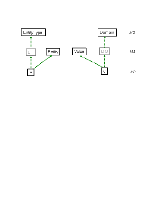
Figure 2.2: Classifying entities and values
The rules for classifying entities and values exploit a fundamental principle of ConceptBase/Telos: all explicit facts in the database are uniformly represented as propositions P(id,x,n,y), and consequently they have a system-generated object identifier, serving as a persistent memory address. This principle allows deriving predicates like (e in Entity). The variable ’e’ is standing for the object identifier of the respective object. This stands in contrast to the relational data model, in which tuples are identified by the key attributes defined for their respective relation. The case of Domain is even more interesting. In ConceptBase, all values like numbers and strings are also objects with system-generated identifiers. Hence, they can be classified just like entities are classified. In relational databases (and most other data models), there is a strict separation of objects and values. In ConceptBase, all stored information has object identifiers, i.e. an address where it can be looked up and linked. The dichotomy of values and identifiers in object-oriented (programming) languages is not present in ConceptBase16.
In the OMG terminology [OMG11], the constructs EntityType and Domain are at the M2 level (meta classes). The predicate (e [in] EntityType) is equivalent to
exists ET/VAR (e in ET) and (ET in EntityType)
Thus, rule r1 of Entity designates it as a simple class, or a class technically at the OMG M1 level. However, it is indeed a construct of the ERD modeling notation since certain properties of ERDs such as the key property require to refer to objects at the data level (OMG level M0):
EntityWithSharedKey in QueryClass isA Entity with
computed_attribute
entity2: Entity;
keyvalue: Value
constraint
cshare: $ (~this [key] ~keyvalue) and
(~entity2 [key] ~keyvalue) and (~entity2 \= ~this) $
end
The above query shall return all those entities that share the key with another entity. The result objects are all at the data level, however, we do not refer to any specific entity types here. This is an example of defining a construct like ’key’ at the meta class level and using it to query objects at the data level. The ’key’ attribute is available to all ERD diagrams. It shows that three OMG levels (M2, M1, M0) are considered at the same time to define and evaluate the semantics of a modeling language. From an ontological point of view, the concept Entity is interesting. It subsumes all entites that are instances of some entity type (M1 level). Thus, is is the super class of all possible entity types. Telos represents all factual information as propositions with object identity. This allows us to store facts at any abstraction level (objects, classes, meta classes, and even objects not belonging to any of the classical OMG levels) in the same uniform data model.
The class Entity is semantically an M1-level object, because its instances (a.k.a. its extension) are M0-level objects representing some objects of a reality. It is the most general entity type. Figure 2.3 contrasts the deductive definition of Entity (left side) with the definition using sub-class relations (right side). The deductive rule defining the instances of Entity is equivalent to placing Entity as superclass of all entity types, i.e. all instances of EntityType. While Entity is semantically an M1-level object, it is not part of the domain model (here the domain of employees and projects). It is rather part of the definition of the ERD language, enriching it with the semantics of its constructs.
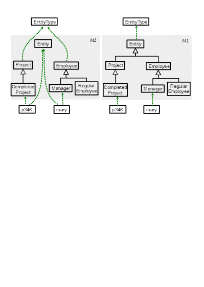
Figure 2.3: Entity classification vs. sub-classing
The pattern of entity classification can also be applied to attributes and relations. For example, the metaclass EntityType has an attribute key for qualifying attributes that identify entities. On the M1 level, this becomes an attribute identifier of Entity. The classifying rule is
forall kv/VAR (kv [in] EntityType!key) ==> (kv in Entity!identifier)
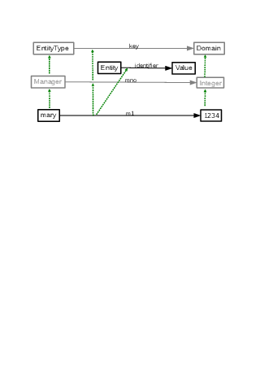
Figure 2.4: Classifying key attributes
Figure 2.4 shows an example that leads to the classification of key attributes. Note that this allows to retrieve the identifiers of any entity, regardless of the schema definition at the M1 level. The complete example is available from the CB-Form at . The complete example also introduces the class Relationship as M1 counterpart of the M2 metaclass RelationshipType in the same style as Entity and Value as counterparts of EntityType and Domain. All three classes are connected (role and value links) and thus allow to query the M0 data level without referring to any schema class like Employee. It thus supports schema-less querying.
DeepTelos is a set of three axioms to realize multi-level modeling in harmony with the existing O-Telos axioms on instantiation, specialization, attribution (see appendix B). The idea is use a new predicate
to declare m as most general instance [JN2016] of the class c. Any ordinary instance of c then becomes a sub-class of m. The three rules are defined as follows:
Proposition with
attribute
ISA: Proposition; IN: Proposition
end
DeepTelosRules in Class with
rule
mrule1: $ forall m,x,c/Proposition (x in c) and (m IN c) ==> (x ISA m) $;
mrule2: $ forall x,c,d/Proposition (c ISA d) and (x in c) ==> (x in d) $;
mrule3: $ forall c,d,m,n/Proposition
(m IN c) and (n IN d) and (c ISA d) ==> (m ISA n) $
end
Further discussion and examples of DeepTelos are available at .
OMG demands strict separation between models at different abstraction levels. The only allowed relation is the instantiation between objects at two neighoring levels. For example, the object Employee at the M1 (model) level can be declared as instance of the object EntityType at the M2 (model) level. Other relations are forbidden. ConceptBase/O-Telos does not have such restrictions. It has so-called omega classes (Proposition is the most important such class), which have objects from any abstraction level as instance. Even more, there is no builtin notion of abstraction level in O-Telos. Abstraction levels introduce a form of rigor into metamodeling that is beneficial to avoid semantic confusions, e.g. to avoid instantiating real-world objects into meta-classes. One can enforce such a rgor in ConceptBase by defining level objects like Token, SimpleClass, MetaClass, MetametaClass and so forth and then enforcing constraints that only allow instantiation between neighbor levels. This was in fact discussed with the original Telos specification but abondoned with O-Telos.
The following example shows that there are applications were level-crossing relations are useful. The principle idea is that there is a modeling level that describes the reality) and a parallel level of the creation process of the models. Each construct is man-made, regardless of the abstraction level. Hence, it makes perfect sense to specify who has created a given construct. Such information is very common in software engineering, where the updates to the code base are associated to members of the development team. Consider the Figure 2.5 about an excerpt of the ERD language and its history (see also ).
Concept with
attribute created: "1-Jan-2004: 12:03" {* from M3 to M0 *}
end
EntityType in Concept with
attribute attr : Domain
end
Person in EntityType with
attr name: String
end
PC in Person with
name pcname: "Peter Chen"
attribute proposed: EntityType {* from M0 to M2 *}
end
There are two relations that cross abstraction levels. First, the relation created of Concept (M2 level) points to a time object at M0 level. Second, the relation proposed links the object PC to the object EntityType. Both relations use the builtin attribute category attribute of the omega class Proposition.
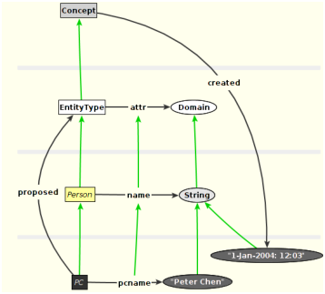
Figure 2.5: Links crossing abstraction levels
To state that Peter Chen proposed the ERD language is a different type of statement than the statment that Peter Chen is a person, which is a type of entity. Still, both types of statements can co-exist and allow for more expressive metamodels. For example, one can define that certain constructs of a modeling language are only available to experienced modelers, or that development projects from a certain domain should use a subset of the available constructs.
The definition of queries in ConceptBase is often complicated by the limitations of the expressiveness of the query language or by the limitations of the query optimizer to find the best solution. The concept of datalog queries and rules was introduced to overcome these limitations. Datalog queries and rules give the experienced user the possibility to define the executable code of query (or rule) directly, including the use of standard PROLOG predicates such as ground/1 to improve the performance of a query or rule.
Although datalog queries and rules can be used as any other query (or rule), they can cause an inconsistent database. This is due to the fact, that the datalog queries and rules will usually not be evaluated while the semantic integrity of the database is checked.
Datalog queries are defined in a similar way as standard query classes. They must be declared as instance of the class DatalogQueryClass.
Class DatalogQueryClass isA GenericQueryClass with attribute code : String end
The attribute code defines the executable code of the query as string.
Datalog rules have to be defined as an instance of DatalogInRule or DatalogAttrRule, depending on whether their conclusion should be an In-predicate or an A-predicate.
Class DatalogRule with attribute concernedClass : Proposition; code : String end Class DatalogInRule isA DatalogRule end Class DatalogAttrRule isA DatalogRule end
The attribute concernedClass specifies the class for the In-predicate or the attribute class for the A-predicate.
The datalog code is a list of predicates, separated by commas (,). As in Datalog or Prolog, this will be interpreted as a conjunction of the predicates. To use disjunction, the code attribute has to be specified multiple times.
All predicates that may be used in standard rules and queries may also be used in datalog queries (see section 2.2 for a list). An argument of a predicate may be one the following:
! or ",
it must be written in single quotes ('). This also holds for string object, e.g. "a string"
must be written as '"a string"'.
~ and must be encoded in single quotes ('), e.g. '~this', '~src', '~param'.
vars([x,y]) defines
the variables x and y.
A query expression of the form query(q) may be also used as predicate, or as second
argument of an In-predicate. q may be any valid query expression, e.g. just the
name of a query class, or a derive expression including the specification of parameters
(for example, find_instances[Class/class]).
In addition, PROLOG predicates can be used as predicates. You can define your own PROLOG predicates in a LPI-file (see section 4.2.2 for an example).
This section defines a few datalog queries and rules for the standard example model
of Employees, Departments and Managers (see $CB_HOME/examples/QUERIES).
The first example defines a more efficient version of the recursive MetabossQuery.
DatalogQueryClass MetabossDatalogQuery isA Manager with
parameter
e : Employee
code
r1 : "In('~e','Employee'),A('~e',boss,'~this')";
r2 : "vars([m]),
In('~e','Employee'),
In(m,query('MetabossDatalogQuery[~e/e]')),
A(m,boss,'~this')"
end
Note that the disjunction of the original query is represented by two code-attributes. The example shows also the use of query expressions and existential variables.
The second example is the datalog version of the rule for the HighSalary class.
The infix-predicate >= is represented by the predicate GE.
Class HighSalary2 isA Integer
end
DatalogInRule HighSalaryRule2 with
concernedClass
cc: HighSalary2
code
c: "In('~this','Integer'),GE('~this',60000)"
end
The last example shows the definition of a rule for an attribute. It also shows, how the performance of a rule can be improved by specifying different variants for different binding patterns. The example defines two rules, depending on the binding of the variable src. The rule defines the transitive closure of the boss attribute. Rule r1 is applied, if both arguments src and dst are unbound. The second rule is used, if at least src is bound, and the last rule will be applied, if we have a binding for dst but not for src.
DatalogAttrRule MetabossRule with
concernedClass
cc : Employee!boss
code
r1 : "vars([m]),var('~src'),var('~dst'),In(m,'Manager'),
A(m,boss,'~dst'),A('~src',boss,m)";
r2 : "vars([m]),ground('~src'),
A('~src',boss,m),A(m,boss,'~dst')";
r3 : "vars([m]),ground('~dst'),var('~src'),
A(m,boss,'~dst'),A('~src',boss,m)"
end
Note, that the predicates var and ground are builtin predicates of PROLOG. Thus, this is also an example for calling PROLOG predicates in a query or rule.
The ConceptBase server provides an ASK command in its interface, which allows to specify in which text-based format the answer should be returned. There are two pre-defined formats: one for returning a list of object names, and one for returning a list of object frames. These two formats can be extended by user-defined answer formats.
Examples for answer formats are available from the CB-Forum, see .
To understand ConceptBase answer formats, we first look at the syntax of the ASK command at the programming interface. We use here the syntax of CBshell (section 7) since it can be tested directly in a command terminal:
ask "<querydefinition>" FRAMES <answer-format> <roll-backtime> ask <querycall> OBJNAMES <answer-format> <roll-backtime>
The first variant is for queries where the query is provided as a Telos frame, the second one is for parameterized query calls like Q[abc/param1]. If the query call contains special characters or is computes of several query calls then surround them by double quotes. The rollback time is typically Now, i.e. the query refers to the current database state. There are four options for the answer format:
The answer format JSONIC is an alternative to FRAME. Here is an example contrasting the two formats. The first two entries are in FRAME format, the latter two in JSONIC.
Employee in Class isA Person,Agent with
attribute
salary: Integer;
name: String
rule
r1: $ forall e/Employee exists s/Integer (e salary s) $
end
bill in Employee with
salary
bsal: 1000
name
firstname: "William";
lastname: "Smith"
attribute
creator: mjeu
end
{ "id" : "Employee",
"type" : ["Class"],
"super" : ["Person","Agent"],
"salary" : "Integer",
"rule/r1" : "$ forall e/Employee exists s/Integer (e salary s) $"
}
{ "id" : "bill",
"type" : ["Employee"],
"salary/bsal" : "1000",
"name/firstname" : "\"William\"",
"name/lastname" : "\"Smith\"",
"attribute/creator": "mjeu"
}
The command ask <querycall> is a shortcut for
ask <querycall> OBJNAMES LABEL Now
Assume, we want to execute a query call Q[abc/param1] on the current database and have the answer formatted according as frames, we would issue:
ask Q[abc/param1] OBJNAMES FRAME Now
We assume here that there is no user-defined answer format for query Q. If there is a user-defined answer-format like MyFormatA and MyFormatB, but the answer formats are not assigned via forQuery to Q, we can call:
ask Q[abc/param1] OBJNAMES MyFormatA Now
and also
ask Q[abc/param1] OBJNAMES MyFormatB Now
If we assign MyFormatB to Q via the forQuery attribute, the last call is equivalent to the first call using default as answer format name.
Subsequently, the specification of such user-defined answer formats is presented.
By default, ConceptBase displays answers to queries in the FRAME format (see ‘A’ and ‘B’ below). For many applications, other answer representations are more useful. For example, relational data is more readable in a table structure. Another important example are XML data. If ConceptBase is integrated into a Web-based information system, then answers in HTML format are quite useful. For this reason, answer format definitions are provided.
Answer formats in ConceptBase are based on term substitutions where terms are evaluated against substitution rules defined by the answers to a query. A substitution rule has the form L —→ R with the intended meaning that a substring L in a string is replaced by the substring R. The object of a term substitution is a string in which terms may occur, for example:
this is a string called{a}with a term{b}
Assume the substitution rules:
{a} —→ string no. {x}
{b} —→ that was subject to substitution
{x} —→ 123
The derivation of a string with terms proceeds from left to right. First, the term occurence {a} is dealt with. The next term in the string is then {x}
which is evaluated to 123. Finally, {b} is substituted and the result string is
this is a string called string no. 123 with a term that was subject to substitution.
We denote a single derivation step of a string S1 to a string S2 by S1 =⇒ S2. It is defined when there occurs a substring L in S1, i.e. S1=V+L+W and a substitution rule L —→ R and S2=V+R+W. The substrings V and W may be empty. A string S is called ground when no substition rule can be applied. A sequence S =⇒ S1 =⇒ … =⇒ Sn is called a derivation of S. A complete derivation of S ends with a ground string. In our example, the complete derivation is:
this is a string called {a} with a term {b}. | |
| =⇒ | this is a string called string no. {x} with a term {b}. |
| =⇒ | this is a string called string no. 123 with a term that was |
| subject to substitution. |
An exception to the left-to-right rule are complex terms like {do({y})}. Here, the inner term {y} is first evaluated (e.g. to 20) and then the result {do(20)} is evaluated.
In general, term substitution can result in infinite loops. This looping can be prevented either by restricting the structure of the substitution rule or by terminating the substitution process after a finite number of steps. The end result of a substitution process of a string is called its derivation. In ConceptBase, the substitution rules are guaranteeing termination except for the case of external procedures. The problem with the exception is solved by prohibiting cyclic calls of the same external procedure during the substitution of a call. A cyclic call is a call that has the same function name (e.w. query class) and the same arguments (expressed as parameter substitutions).
In ConceptBase, an answer format is an instance of the new pre-defined class ‘AnswerFormat’.
Individual AnswerFormat in Class with
attribute
forQuery : QueryClass;
order : Order;
orderBy : String;
head : String;
pattern : String;
tail : String;
fileType: String
end
The first attribute assigns an answer format to a query class (a query may have at most one answer format). The second and third attribute specify the sorting order of the answer, i.e. one can specify by which field an answer is sorted, and whether the answer objects are sorted ‘ascending’ or ‘descending’ (much like in SQL). The ’orderBy’ attribute specifies the property by which the answer shall be sorted. The most common value is the expression "this", i.e. sort the answer by the name of the objects in the answer. You can also specify an attribute expression such as "this.name" referring to an answer variable. If you specify "none" for ’orderBy’, then the answer is not sorted. If the number of objects in an answer exceeds 5000, then no sorting is applied due to memory limitations.
The ‘head’, ‘pattern’, and ‘tail’ arguments are strings that define the substring substitution when the answer is formatted. They contain substrings of type expr that are replaced. The head and tail strings are evaluated once, independent form the answer to the query. Usually, they do not contain expressions but only text. The response to a query is a set of answer objects A1,A2,.... The pattern string is evaluated against each answer object. For each answer object, the derivation of the pattern is put into the answer text. Hence, the complete answer consists of
| derivation of head string | |
| + | derivation of pattern string for answer object A1 |
| + | derivation of pattern string for answer object A2 |
| … | |
| + | derivation of tail string |
The fileType attribute is explained in section 3.4.
In the next sections, we will explain more details about answer formats using the following example: An answer object A to a query class QC has by default a ‘frame’ structure
A in QC with
cat1
label11: v11;
label12: v12
[...]
cat2
label21: v21
[...]
end
In case of a complex view definition VC, the values vij can be answer objects themselves, e.g.
B in VC with
cat1
label11: v11;
label12: v12
[...]
cat2
label21: v21 with
cat21
label211: v211
[...]
end
[...]
end
We first concentrate on the pattern attribute, i.e. they are not applicable in the head or tail attribute of an answer format. The pattern of an answer format is applied to each answer object of a given query call, effectively transforming it according to the pattern. The following expressions are allowed. Capital letters in the list below indicate that the term is a placeholder for some label occuring in the query definition or the answer objects.
{this.cat1} evaluates to v11,v12 and {this.cat2} evaluates to v21. For the complex object ‘B’, a path expression like {this.cat2.cat21} is allowed
and yields v21. Note that all such expressions are set-valued.{this^label12} evaluates to v12.{this|cat1} evaluates to label11,label12.
The derivation of pattern is performed for each answer object that is in the result set of a query. The answer object ‘A’ induces the following substition rules:
{this} | —→ | A |
{this.cat1} | —→ | v11,v12 |
{this.cat2} | —→ | v21 |
{this^label11} | —→ | v11 |
{this^label12} | —→ | v12 |
{this^label21} | —→ | v21 |
{this|cat1} | —→ | label1,label2 |
{this|cat2} | —→ | label21 |
Extended examples for these simple expressions are given in simple_answerformats1.sml and simple_answerformats2.sml in
the directory $CB_HOME/examples/AnswerFormat/.
Note that only objects that match the query constraint are in the answer. Particularly, the categories computed_attribute and retrieved_attribute require that at least one filler for the respective attribute is present in an answer object! Use ConceptBase views (‘View’) and inherited_attribute in case that zero fillers are also allowed for answers.
There are few other simple expressions that may be useful. They just list attributes without having to refer to specific attributes.
{this.attrCategory} evaluates to cat1,cat2.{this|attribute} evaluates to label11,label12,label21.{this.attribute} evaluates to v11,v12,v21.For the answer object A, these expressions induce the following additional substitution rules:
{this.attrCategory} | —→ | cat1,cat2 |
{this|attribute} | —→ | label11,label12,label21 |
{this.attribute} | —→ | v11,v12,v21 |
The following variables can be used in the head, tail, and pattern of an answer format. They do not refer to the variable this.
ConceptBase also adds those command line parameters that deviate from their defaults to the set of pre-defined variables. The most common ones are (see also section 5.11):
Moreover, if the current transaction was a call of a query like MyQuery[v1/param1,...] then {param1} will be evaluated to v1. This makes all parameter substitutions of a query call available to answer formatting.
In case of expressions with multiple values, the user may want to generate a complex text that uses one value after the other as a parameter. This is in particular useful to transform multiple attribute values like this.cat1. The ‘Foreach’ construct has the format:
{Foreach( (expr1,expr2,...), (x1,x2,...), expr )}
The expression expr1 is evaluated yielding each a list of solutions s11,s12,... The same is applied to expr2 yielding a list
s21,s22,... Then, the
variables x1,x2,... are matched against the first entries of all lists, i.e. x1=s11,x2=s21,... This binding is then applied to the expression
expr
which should contain occurences of {x1}, {x2}, ... This replacement is continued with the second entries in all lists yielding bindings
x1=s12,x2=s22,... This is continued until all elements of all lists are iterated. If some lists are smaller than others, the missing entries are replaced by NULL.
During each iteration, the new bindings induce substitution rules for the binding
Iteration 1:
{x1} | —→ | s11 |
{x2} | —→ | s21 |
| ... |
Iteration 2:
{x1} | —→ | s12 |
{x2} | —→ | s22 |
| ... |
Note that the third argument expr may contain other subexpressions, even a nested ‘Foreach’.
An example for iterations is given in
$CB_HOME/examples/AnswerFormat/iterations.sml.
The Foreach construct contains three arguments separated by commas. These two commas are used by ConceptBase to parse the arguments of the Foreach-construct and similar answer formatting expressions. They are not printed to the answer stream.
If one wants a comma inside an expresssion that shall be
visible in the answer, then one has to escape it ‘\,’.
The same holds for the other special characters like ‘(’, ‘)’ etc.
Here is a short list of supported special characters. Some require
a double backslash.
| \\n | : | new line (ASCII character 10) |
| \\t | : | tab character |
| \\b | : | backspace character |
| \0 | : | empty string (no character) |
| \( | : | left parenthesis |
| \) | : | right parenthesis |
| \, | : | comma |
In principal, any non-alphanumerical character like ’(’,’)’,’{’,’}’,
’[’, ’]’ can be referred to by the backslash operator. Note that the
vanilla versions of these characters are used to denote expressions in
answer formats. Hence, we need to ’escape’ them by the backslash if they
shall appear in the answer.
The substitution mechanism for answer formats recognizes patterns such as
{F(expr1,expr2,...)}
as function calls. An example is the ASKquery construct from from section 3.2.6. The mechanism is however very general and can be used to realize almost arbitrary substititions. The parentheses and the commas separating the arguments of F are parsed by ConceptBase and not placed on the output. The following simple function patterns are pre-defined:
{QT(expr)} puts the expr into double quotes if not already quoted. {UQ(expr)} removes double quotes from expr if present.{ALPHANUM(expr)} outputs an alphanumeric transcription of expr.
This is useful when an object names contains special characters but the
output format requires an alphanumeric label. If expr already
evaluates to an alphanumeric label, then it is inserted unchanged.{From(expr)} inserts the source object of expr. The source object is
computed by the predicate From(x,o) of section 2.2. This pattern
is useful for printing attributes. ConceptBase will first apply pattern substitution to
expr and then to the whole term {From(expr)}.{To(expr)} inserts the destination object of expr. The destination object is
computed by the predicate To(x,o) of section 2.2.{Label(expr)} inserts the label of the object referenced by expr. The label is
computed by the predicate Label(x,l) of section 2.2.{Oid(expr)} inserts the identifier of the object referenced by expr.
Note that the argument expr can be another pattern such as {this}. Specifically, the expression
{Oid({this})} is equivalent to {this.oid}. However, the Oid pattern is
also applicable to patterns not including {this}.
Examples are available from the CB-Forum, see .
The above set of patterns can be extended by user-defined functions via LPI plugins. In principle, any routine that can be called from the ConceptBase server, can also be called in an answer format. The programming interface is not documented here since this requires extensive knowledge of the ConceptBase server source code. For the experienced user, we provide an example in the subdirectory examples/AnswerFormat of the ConceptBase installation directory, see files externalcall.sml and externalcall.swi.lpi (externalcall.bim.lpi for BIM-Prolog variant). Note that one has to create a persistent database, load the model externalcall.sml into it, then terminate the ConceptBase server, and then copy the file externalcall.swi.lpi or externalcall.bim.lpi into the database directory (see also appendix F). Thereafter, restart ConceptBase and call the query EmpDept.
A query call within an answer format is an example of a so-called external procedure. The pattern as well as head and tail of an answer format may contain the call to a query (possibly the same for which the answer format was defined for). This allows to generate arbitrarily complex answers.
{ASKquery(Q[subst1,subst2,...],formatname)}
The argument Q is the name of a query. The arguments subst1,subst2 are parameter substitutions (see section 2.3). The argument formatname specifies the answer format for the query call Q[subst1,subst2,...]. The answer format may also have parameters (see below). If you use default as answer format name, then the ConceptBase server will pick the default format. This is LABEL (list of object names) for function calls. For other queries, it is the first answer format that list the query Q in its forQuery attribute. If no such answer format exists, the format FRAME (Telos frames) is chosen.
The effect of ASKquery in an answer format is that the above query call is evaluated and the ASKquery expression is replaced by the complete answer to the query. In terms of the substitution, the following rule is applied:
{ASKquery(Q[subst1,subst2,...],default)} —→ X
where X is the result of the query call Q[subst1,subst2,...] after derivation of the arguments subst1, subst2 etc. This sequencing is important since
an ASKquery call can contain terms that are subject to substitution, e.g.
{ASKquery(MyQuery[{this.cat1}/param1,{this.{x1}}/{x2}],default)}.
ConceptBase will always start to evaluate left to right and the
innermost terms before evaluating the terms that contain inner terms. Hence, the derivation sequence is
{ASKquery(MyQuery[{this.cat1}/param1,{this.{x1}}/{x2}],default)} | ||
| =⇒ | {ASKquery(MyQuery[alpha/param1,{this.{x1}}/{x2}],default)} | (r2) |
| =⇒ | {ASKquery(MyQuery[alpha/param1,{this.name}/{x2}],default)} | (r1) |
| =⇒ | {ASKquery(MyQuery[alpha/param1,"smith"/{x2}],default)} | (r3) |
| =⇒ | {ASKquery(MyQuery[alpha/param1,"smith"/param2],default)} | (r4) |
| =⇒ | The answer is ... | (r5) |
where we assume the following example substitution rules
| r1: | {x1} | —→ | name |
| r2: | {this.cat1} | —→ | alpha |
| r3: | {this.name} | —→ | "smith" |
| r4: | {x2} | —→ | param2 |
| r5: | {ASKquery(MyQuery[...],default)} | —→ | The answer is ... |
This guarantees that the query call is ‘ground’, i.e. does not contains terms which are subject to substitution.
The ASKquery construct allows to introduce recursive calls during the derivation of a query since there can (and should) be an answer format for Q which may contain expressions ASKquery itself. In principle, this allows infinite looping. However, the answer format evaluator prevents such loops by halting the expansion when a recursive call with same parameters has occured. The answer then contains an ‘' character at the position where the loop was detected. Additionally, an error message is written on the console window of the ConceptBase server (tracemode must be at least low).
A simple example for use of ASKquery is given in recursive-answers.sml. The example uses a view instead of a query class in order to include also answers into the solution which not have a filler for the requested attribute, i.e. hasChild is inherited_attribute, not retrieved_attribute.
It is common practice to combine the ASKquery construct with ‘Foreach’ in order to display an iteration of objects in the same way. The user should define an answer format for the iterated query Q as well.
Do not mix the use of ASKquery with the view definitions in ConceptBase! The nesting depth of a view is determined by the view definition. The nesting depth of an answer generated by expansion of ASKquery is only limited by the complexity of the database. For example, one can set up an ancestor database and display all descendants of a person and recursivley their descendants in a single answer string for that person. The nested ASKquery inside an answer format usually results in the unfolding also using an answer format (possibly the same as used for the original query). This feature allows the user to specify very complex structured answers that might even contain the complete database. In particular, complex XML representations can be constructed in this way.
The features ‘head’ and ‘tail’ are similar to pattern. The difference is that any expression using ‘this’ (the running variable for answer objects) is disallowed.
This only leaves function patterns such as ASKquery expressions and pre-defined patterns such as {user}.
Of course, the head and tail strings can contain multiple occurences
of ASKquery or other function patterns.
Conditional expressions allow to expand a substring based on the evaluation of a condition. The syntax is:
{IFTHENELSE(predicate,thenstring,elsestring)}
The ‘predicate’ can be one of
{GREATER(expr1,expr2)}
{LOWER(expr1,expr2)}
{EQUAL(expr1,expr2)}
{AND(expr1,expr2)}
{OR(expr1,expr2)}
{ISFIRSTFRAME()}
{ISLASTFRAME()}
Example: {GREATER({this.salary},10000)}.
Note that the arguments may also contain expressions.
The predicate {ISFIRSTFRAME()} is true, when ConceptBase starts with processing
answer frames. It is false, when the first frame has been processed. The predicate {ISlASTFRAME()}
is true when ConceptBase starts with processing the last answer frame for a given query. Otherwise,
it is false.
An example for conditional expressions is provided in the CB-Forum, see
file "csv.sml" in .
In most cases, the IFTHENELSE construct can be avoided by a more elegant query class
formulation.
If the answer format is defined for a complex view, then path expressions like this.cat2.cat21... for the parts of the complex answer can be defined. An example for use of answer formats for views is given in views.sml.
The reader should note that complex path expressions can only refer to components that were defined as retrieved, computed, or inherited
attributes in the view definition. For example, one cannot refer to this.dept.budget in the example view EmpDept in views.sml
since it is not a retrieved attribute of the
dept component of the view definition EmpDept. The second expression of the answer format EmpDeptFormat
uses the builtin procedure UQ. It removes the quotes ‘"’ from a
string. Analogously, a procedure QT can be used to put quotes around a term.
The general way to use an answer format for a query is to define the attribute forQuery. Another possibility is to specify the answer format for a query is to use the answer representation field of the ASK method in the IPC interface.
The following code is an example for specifying a user-defined answer in the ASK method. This example is written in Java and uses the standard Java API of ConceptBase (see the Programmer’s Manual for details).
import i5.cb.api.*;
public class CBAnswerFormat {
public static void main(String[] argv) throws Exception {
CBclient cb=new CBclient("localhost",4001,null,null);
CBanswer ans=cb.ask("find_specializations[Class/class,TRUE/ded]",
"OBJNAMES","AFParameter[bla/somevar]","Now");
System.out.println(ans.getResult());
cb.cancelMe();
}
}
In the example, a connection is made to a ConceptBase server on localhost listening on port 4001. The ask-method of the CBclient class sends a query to the server. The first argument is the query, the second argument is the format of the query (in this example, it is just one object name), the third argument is the answer representation, and the last argument is the rollback time.
The third argument, is the the answer representation.
There are four predefined answer representations. FRAME returns the answers as
Telos frames, including retrieved and computed attributes. LABEL returns only
the names of the answer objects as a comma-separated list. Thirdly, the format
JSONIC returns the answer in JSON-like frames.
Finally, default
lets the CBserver choose between LABEL (for function calls), the explicit answer format assigned for
a query (attribute forQuery),
and FRAME (otherwise). Besides these pre-defined answer representations, one can specify
user-defined answer formats. This is also the preferred way.
In our case, it is a parameterized answer format: AFParameter[somevalue/somevar].
This means that the result of the query will be formatted according to
the answer format AFParameter and the variable somevar
will be replaced with somevalue. The variable can be used like any other
expression, i.e. it must be enclosed in {}.
The following definition of AFParameter is an example, how
the parameter can be used in the pattern. If the parameter is not
specified, the string {somevar} will not be replaced.
Individual AFParameter in AnswerFormat with
head hd : "<result>"
tail tl : "</result>"
pattern
p : "
<object>
<type>{somevar}</type>
<name>{this}</name>
</object>"
end
Note, that you can use any answer format (with or without parameters) as answer representation in the ASK method.
The optional fileType attribute of answer formats is used by the server-side materialization of query results (section 5.11). ConceptBase will use the specified file type when storing the query results in the file system. The default value is "txt". The attribute is single-valued though single-valuedness is not enforced.
It is sometimes useful to call the same query class with multiple arguments in a single call rather than in a sequence of calls. Each individual call from a ConceptBase client to the server comes with a certain latency time. Thus, if one would have to call the same query for dozens of arguments in a sequence, most of the answer time would actually be the latency time.
To address this problem, the CBserver offers a query call pattern for bulk queries:
bulk[q,x1,x2,x3,...]
The query q stands for a query class with a single parameter. The bulk query is converted by the CBserver into the following sequence of query calls:
q[x1],q[x2],q[x3],...
The answers to the query call are collected into a single answer set and then transformed with the answer format of the query call. Hence, the answer format is applied to the whole answer and not to the part answers.
Example:
ask bulk[Q,abc,def] OBJNAMES MyFormatA Now
Sorting of answers is disabled for bulk queries in order to return the answers in the sequence indicated by the arguments of the bulk query call. Here, the answer to the argument abc shall precede the answer to argument def. Arguments that do not reference an existing object are removed from the argument list by the CBserver before answering the query. Bulk queries are only supported for generic query classes with a single parameter. The query class may not be a builtin query class.
The main prupose of bulk queries is to speed up the interaction between the ConceptBase clients, such as CBGraph, and the CBserver. You can however use them with the CBShell.
Active rules specify certain actions that have to be executed if an event occurs and a condition is fulfilled at this time. Because active rules consists of an Event, a Condition and an Action, they are abbreviated as ECArule.
Events (ON-part) of ECArules are insertions and deletions of objects (Tell/Untell) and queries (Ask). The events are detected during the processing of the input frames for a Tell or Untell or Ask operation. For example, if you tell 2 frames at a time, and the first frame matches an event for an ECArule, then the ECArule is executed before the second frame is processed. You can also control the sequencing of the firing of ECA rules by the so-called ECAmode and by priority orderings in the set of defined ECArules.
The condition of the ECArule (IF-part) is a logical expression over the database. It will bind free variables occurring in the condition (if any) and these bindings together with the bindings of the event are passed to the action part of the ECArule.
The action (DO-part) of an ECArule is evaluated for each evaluation of the IF-part that has is true in the database. The elements in a DO-part can be Tell, Untell, Retell, Ask and Call actions. Call actions can call any Prolog predicate, for example a Prolog predicate defined as a CBserver plug-in (see appendix F). Retell actions are combining an Untell and a Tell, in particular for assigning a new attribute value, e.g. Retell((e salary newsalary)). Optionally, one can specify an ELSE-part which consists of actions that are executed when the IF-part is not satisfiable for any binding of the free variables. The Ask action is only useful for ECArules that have an ELSE-part. In this case, the Ask will retrieve information from the database that cannot be retrieved within the IF-part. The special action ’reject’ will abort the complete transaction that directly or indirectly triggered the ECArule.
The effect of ECArules is subject to the regular integrity checking of ConceptBase. If an integrity violation is detected, then the whole transaction including all updates by ECArules is rolled back. The integrity test is started after all enabled ECArules have fired.
In ConceptBase, active rules are defined similar to query classes. The user has to create an instance of the builtin class ECArule. The following frame shows the Telos definition of the class ECArule.
Class ECArule with
attribute
ecarule : ECAassertion;
priority_after: ECArule;
priority_before : ECArule;
mode : ECAmode;
active : Boolean;
depth : Integer;
rejectMsg : String
constraint
{ ... }
end
A correct ECArule must specify at least the attribute ecarule,
the other attributes are optional. The language for ECAassertions
is a extension of the assertion language, it is specified as text between
$ signs in the same way as rules and constraints.
An ECAassertion has the following structure (the syntax is described in section A.3).
$ x1,x2/C1 y1/C2 ...
ON [TRANSACTIONAL] event [FOR x]
[IF|IFNEW] condition
DO action1, action2 ...
[ELSE action3]
$
The TRANSACTIONAL modifier cannot be used in combination with the
FOR clause.
The ELSE-part is optional.
The first line contains the declaration of all variables
used in the ECAassertion. The specified classes of the variables
(here: C1 and C2) are only used for compilation
of the rule, during the evaluation of the rule it is not tested
if the variables are instances of the specified classes. If necessary,
include predicates like In(z,Class) in the IF-part of the ECArule.
The variables can occur in the ON-, IF-, DO-, and ELSE-part of the ECArule.
When the IF-part begins with IFNEW, then the whole
condition shall be evaluated against the newest database state. See also
’new’ tag for conditions.
There is also a variant of ECArules without an IF-part. It is equivalent to the longer form on the right side. The shortcut can also be used in combination with the TRANSACTIONAL modifier or the FOR clause.
$ x1,x2/C1 y1/C2 ... $ x1,x2/C1 y1/C2 ...
ON event ON event IF TRUE
DO action1, action2 ... DO action1, action2 ...
$ $
Possible events are the insertion (Tell) or deletion (Untell) of attributes (A),
instantiation links (In), or specialization links (Isa). For example,
if the rule should be executed if an object is inserted as instance
of Class, then the event statement is: Tell In(x,Class).
Furthermore, an event may be a query, e.g. if you specify the event
Ask find_instances[Class/class] the ECA rule is executed
before the evaluation of the query find_instances with the parameter Class.
Potential updates to the database caused by the ECA rules will be persistent, i.e.
in such cases an Ask van well update the database.
It is possible to use variables as a placeholders for parameters in the Ask
event clause.
The event detection algorithm takes only extensional events into account. Events that can be deduced by a rule or a query are not detected. However, the algorithm is aware of the predefined Telos axioms, e.g. if an object is declared as an instance of a class, the object is also an instance of the super classes of this class.
The condition (IF-part) of an ECArule consists of predicates
combined by the logical operators ’and’, ’or’,
and ’not’. Quantified sub-expressions (forall, exists) are not allowed.
You can however use query classes to encode such sub-expressions1.
The arguments of the predicates are either bound by the ON-part
of the ECA rule or they are free variables. When an event occurs that fires an
ECArule, then the condition is evaluated against the database yielding bindings for the
free variables. Each such binding will be passed to the action part of the ECArule.
Note that ECArules without any free variable are also possible.
By default, predicates are evaluated against the old state of the object base
(i.e., before the transaction started).
If a predicate has to be evaluated on the new database state, i.e. the intermediate state
representing the updates processed so far during the transaction, then it has
to be quoted by the backward apostrophe, for example `(x in Class)
instead of (x in Class). The syntax new((x in Class))
is supported as well and equivalent to the use of the backward apostrophe.
Note that only conditions of ECA rules can see intermediate database states.
If the whole condition shall be evaluated against the new database state, the
use the clause IFNEW instead IF.
Actions are specified in a comma-separated list. The syntax is similar to that one of events, except that you can also ask queries (Ask) and call Prolog predicates (Call). The standards actions are as follows:
Instead of the capitalized action names Tell you can also use the small caps variant tell. The same rule is applicable for Untell, Retell, Ask, Raise, and Call. Analogously, the event statements in the ON-part of an ECArule can also use the small caps variants.
All variables in Tell, Untell and Retell2 actions must be bound. The insertion of an attribute A(x,ml,y) is only done, if there is no attribute of category ml with value y for object x. Then, a new attribute with a system-generated label is created. If an attribute A(x,ml,y) should be deleted, then all attributes of category ml with value y for object x are deleted3. If the argument of Retell is a fact AL(x,ml,n,y), then there will be at most one stored asstribute with category ml and label n that has to be deleted before the new fact is told. It is well possible that an attribute is updated (untell+tell) several times by action parts of ECArules during a single ConceptBase transaction. Only the state of the attribute after all ECArule firings will be visible after a successful commit.
There are a few special procedures, which may be called within the DO- or ELSE-part of an ECArule:
Other predicates to be invoked via Call can be defined in a LPI-file (see Counter example below).
Events and actions may also be specified in a prefix syntax, e.g.
Tell (x in Class) instead of the longer form Tell((x in Class)).
Furthermore, there are two simple builtin actions: noop4
is not doing anything
(except that is succeeds), and reject aborts the current transaction.
If the execution of an ECArule leads to an update to the database, i.e. via Tell or Untell, then the updated database is subject to integrity checking. If a violation is detected, then the whole transaction is rolled back including the updates done by ECArules.
The attributes priority_after and priority_before ensure, that this ECArule is executed after or before some other ECArules, if several rules can be fired at the same time. There can be multiple values for each of these attributes. As you may have noted one of the two attributes is redundant since (r1 priority_after r2) is equivalent to r2 priority_before r1). Still, ConceptBase provides both. Furthermore, ConceptBase does not automatically check the consistency of the priority declarations (if r1 is before r2 then r2 cannot be before r1). ConceptBase also does not provide for the transitivity of the priority. You can however define this yourself via appropriate deductive rules.
The coupling mode of an ECArule determines the point of time when the condition and the action of the ECArule are evaluated and executed. Possible values are:
The answer to the evaluation of the condition of an ECArule is the set of all combinations of variable fillers that make the condition true.
The modes Immediate and ImmediateDeferred differ considerably from
the mode Deferred: the condition of the ECArule is evaluated
while not all frames of the current transaction are told (resp. untold).
So, a quoted predicate like `(x in Class) will be evaluated
against a database state in which only those frames of the current transaction
are visible (resp. invisible) that were told (resp. untold) before
the ECArule was triggered!
The default is Immediate. ConceptBase shall enforce a first-in-first-out sequencing of ECArules with modes ImmediateDeferred and Deferred. This sequence will enforce the complete execution of a triggered ECArule before the next rule triggering is handled. The strict sequencing avoids intertwining of action executions of multiple ECArule threads. So, if the answer to a condition of an ECArule has multiple entries, then the actions belonging to the respective answers are executed in a sequence in which no action of another ECArule is called.
The coupling mode of an ECArule influences its execution semantics. There are three basic steps. First, a Tell/Untell/Ask transaction is translated in a sequence of atomic events. In case of a Tell/Untell, each frame inside the Tell induces a delimiter in the event list that is used later for the event processing. A typical event list might look like
| e1 | e2 | e3 | ⋄ | e4 | e5 | ⋄ | … |
Here, the events e1 … e3 were generated for the first frame of a Tell/Untell, the events e4, e5 were generated for the second frame. The diamond separates the events generated for subsequent frames of the same Tell/Untell operation. The event list is right-open since the execution of actions from ECArules can lead to further events. Each event has one of the forms Tell(lit), Untell(lit), or Ask(q), where lit is an attribution, instantiation, or specialization predicate, and q is a query call.
ConceptBase will scan the event list and process events as soon as it detects a delimiter (denoted by the diamond above). For example, when ConceptBase "sees" the delimiter between e3 and e4, it will start to process e1 to e3, one after the other. Processed events are removed from the event list. The first step is to determine the matching ECArules for a given event ei. This yields a working set of rules for each processed event ei:
ws(ei) = Set of all ECArules whose ON part matches ei
The matching of the ON part of the ECArule and the event typically leads to a binding of variables in the rule’s IF and DO parts. This binding is stored in the rule’s representation within the work set. The rules in the working set are sorted to reflect the priority settings of ECArules. If two rules have no priority defined between them, then the definition order is used to sort them (older rules before newer rules). Each rule r in the working set will then be processed as follows, one after the other.
The rule processing depends on the coupling mode of the ECArule in the working set. If the mode is Immediate, then the IF part is evaluated (yielding all possible combinations of variables that make the IF part true). If the answer set is empty, then ConceptBase will call the ELSE actions of the ECArule. Otherwise, ConceptBase will call the DO part for each variable combination determined in the previous step.
If the mode is ImmediateDeferred, then ConceptBase will evaluate the IF part of the current rule like before. Instead of calling the DO (or ELSE part), it will however put a trigger do(r,actions) on a trigger queue q. The parameter r identifies the rule. The parameter actions contains all instantiations of the DO-part of r by the variable substitutions computed by the evaluation of the IF part of r. If there are no such substitutions, then actions is set to the ELSE part of r (if existent). Otherwise, no actions would be appended to the wating queue.
If the mode is Deferred, then ConceptBase will not immediately evaluate the IF part but will just append a trigger def(ei,r) to the trigger queue q.
When all events in the event list are converted to triggers, i.e. when all frames in a Tell/Untell transactions are transformed and stored, or when the Ask call has been processed, then ConceptBase will start to process the trigger queue q. It is processed in a first-in-first-out (FIFO) manner. Each do and def trigger is processed according to its type. If the entry has the form do(r,actions), then ConceptBase will execute the actions in the second parameter, possibly leading to new events and triggers.
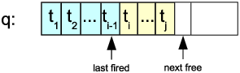
Figure 4.1: State of the trigger queue
Figure 4.1 shows a snapshot of a trigger queue. The triggers tk have the form do(r,actions) or def(ei,r). There are two pointers "last fired" (initially 0) and "next free" (initially 1) to manage the queue. New triggers are added at the right end (incrementing the next free pointer). The processing of the queue starts from left to right. The last processed item is pointed to by the "last fired" pointer. The queue is empty (resp. completely processed) iff "last fired" plus 1 equals to "next free".
If the entry has the form def(e,r), then ConceptBase will first determine all combinations of variables in the IF part of r. Then it will call the actions of the DO (or ELSE part) for the computed answers. Note that the event e typically binds some variables in the rule r.
Actions of an ECArule can update the database. They will then lead to new entries in the event list that are processed just like described above. The events are generated per action (Tell/Untell/Retell) and then followed by a delimiter, i.e. ConceptBase will start processing the events after each Tell/Untell/Retell action.
You can control the execution order of ECA triggers via coupling modes, precedence (priority), and via a feature called queue switch. The queue switch utilizes seperate trigger queues for ECA triggers:
There are two ways to specify a queue switch. The first is by including the keyword TRANSACTIONAL in the ON-part of an ECArule, e.g.
ON TRANSACTIONAL Tell (x in A)
As soon as an event e is matched against the event clause of a "transactional" ECArule, the trigger queue is switched to q1. Subsequent triggers will then be put on q1 instead of q0. Note that several ECArules can match a given event. The switch occurs when the first transactional rule is encountered.
The second method creates user-defined trigger queues via the FOR-clause:
ON Tell (x in A) FOR x
In the above example, each event that matches the event clause will also fill the variable x in the FOR-clause. This will instruct ConceptBase to switch to the (new) trigger queue labelled x. If you use "FOR q1", then the method yields the same effect as with the TRANSACTIONAL clause. As soon the the trigger queue labelled x is empty, ConceptBase will switch back to the newest non-empty trigger queue, or back to q0.
The events on q1 are processed before the remaining events of q0. The queue switch leads essentially to a prioritizition of events on q1 over q0.
Examples highlighting the differences between the execution modes and the transaction model are presented in the CB-Forum at . You can use the tracemode high (see chapter 6) to debug ECArules. The ConceptBase server will then write trace messages about the execution of ECArules on the console terminal.
The attribute active allows the user to deactivate the rule without untelling it. Possible values are TRUE and FALSE. The default value is TRUE, i.e. by default are ECArules active.
The attribute depth specifies the maximum nesting depth of ECArules. ECArules may be fired by events which are produced by actions of the same or other ECArules. Because this often results in an endless loop, the execution of the ECArule is aborted if the current nesting depth is higher than the specified value. The default of this attribute is 0 (= no limitation).
If the ECArule rejects the transaction in some cases, it is useful to specify an error message. The value of the attribute rejectMsg is returned to the user.
The constraints of the class ECArule ensure, that the attributes mode, active and depth have only single values and that the attribute ecarule has exactly one value.
The Telos source files of the following examples can also be found in
your ConceptBase installation directory at
$CB_HOME/examples/ECArules.
Further examples are in the CB-Forum at
.
Materialization of views means that deduced information is stored in the object base. We provide here an example, how to materialize and maintain simple views.
Class Employee with
attribute
salary : Integer
end
View EmployeeWithHighSalary isA Employee with
constraint
c : $ exists i/Integer (this salary i) and (i > 100000) $
end
Class EmployeeWithHighSalary_Materialized end
The view EmployeeWithHighSalary
contains all employees who earn more than 100.000.
The class EmployeeWithHighSalary_Materialized will
contain the same employees. This implemented by the following
ECArules:
ECArule EmployeeWithHighSalary_Materialized_Ins with
ecarule
er : $ x/Employee
ON Tell (x in Employee)
IF `(x in EmployeeWithHighSalary)
DO Tell (x in EmployeeWithHighSalary_Materialized) $
end
ECArule EmployeeWithHighSalary_Materialized_Del with
ecarule
er : $ x/Employee
ON Untell (x in Employee)
IF (x in EmployeeWithHighSalary)
DO Untell (x in EmployeeWithHighSalary_Materialized) $
end
ECArule EmployeeWithHighSalary_Materialized_Ins_salary with
ecarule
er : $ x/Employee y/Integer
ON Tell (x salary y)
IF `(x in EmployeeWithHighSalary)
DO Tell (x in EmployeeWithHighSalary_Materialized) $
end
ECArule EmployeeWithHighSalary_Materialized_Del_salary with
ecarule
er : $ x/Employee y/Integer
ON Untell (x salary y)
IF (x in EmployeeWithHighSalary)
DO Untell (x in EmployeeWithHighSalary_Materialized) $
end
The first rule checks, if the employee belongs to the view, when the employee was inserted. Note, that we don’t use the constraint of the view in the ECArules, we just reuse the view definition here. The second rule does the same for deletion of employees. The first rule checks the IF-part on the new database state since the employee’s salary is usually told together with the employee. In contrast, the IF-part of the second rule is checked against the old database state, i.e. where the employee was still defined.
The third rule checks, if the employee is an instance of the view class, when the attribute salary was inserted. Again, the fourth rule does the same for deletion of the attribute.
If the number of employees is large it is more efficient to ask for the instances of materialized than to evaluate the view. However, if updates occur quite often, materialization is not good, because materialized view must be maintained for every update transaction.
This example shows how to call prolog predicates with an ECArule. It implements a counter for a class Employee. The counter is stored as an instance of the object EmployeeCounter. Whenever an employee is inserted or deleted from the object base, the counter is incremented or decremented.
Class Employee end
EmployeeCounter end
ECArule EmployeeCounterRule with
ecarule
er : $ x/Employee i,i1/Integer
ON Tell(In(x,Employee))
IF (i in EmployeeCounter)
DO Untell(In(i,EmployeeCounter)),
Call(increment(i,i1)),
Tell(In(i1,EmployeeCounter))
ELSE Tell(In(1,EmployeeCounter))
$
end
ECArule EmployeeCounterRule_del with
ecarule
er : $ x/Employee i,i1/Integer
ON Untell(In(x,Employee))
IF (i in EmployeeCounter)
DO Untell(In(i,EmployeeCounter)),
Call(decrement(i,i1)),
Tell(In(i1,EmployeeCounter))
$
end
The files $CB_HOME/examples/ECArules/counter.*.lpi5
contain the code for the Prolog predicates increment and decrement.
You must copy LPI files to the database directory before you start
the ConceptBase server (see also appendix F). Note, that all free variables
of the PROLOG predicate must be bound in its call. Furthermore,
the variables must be bound to object dentifiers, if you
want to use them in a Tell,Untell or Ask action.
The effect of the increment and decrement procedures can also be achieved using the arithmetic expressions like i+1. The simple solution with arithmetic expressions is available from . The purpose of the example above is only to show that user-defined PROLOG predicates can be called in the DO-part of an ECArule. You can define more interesting PROLOG predicates like sending an email to a user with content derived from the object base. This requires however some knowledge of PROLOG and of the internal features of the ConceptBase server.
You should also note that the count of a class c can always (and more correctly) be computed by the function COUNT(c). That does even count inherited and deduced instances.
An often asked requirement in metamodeling applications is the recording of creation and modification dates. ConceptBase stores the creation time of an object in its object base, primary for the use of Rollback queries. With the predicate Known(x,t) the time of the creation of x can be made visible in rules or queries. The following frames shows how to use it:
Class Employee with
attribute
salary : Integer;
createdOn : TransactionTime;
lastModified : String
rule
createdOnRule : $ forall t/TransactionTime
Known(this,t) ==> (this createdOn t) $
end
EmpWithoutLastModified in QueryClass isA Employee with
constraint
noLM: $ not exists t/String (this lastModified t) $
end
The limitation of this approach is, that it just records the creation date of an object and not the time when it was modified. i.e. the value of an attribute was changed.
To overcome this restriction, one can use ECArules to update the attribute lastModified of the above example, whenever an attribute of the category salary is inserted.
ECArule LastModified_init with
mode m: ImmediateDeferred
ecarule
er : $ t/TransactionTime y/Employee
es/Employee!salary
ON Tell (es in Employee!salary)
IFNEW
From(es,y) and (y in EmpWithoutLastModified) and Known(es,t)
DO Tell (y lastModified t)
$
end
ECArule LastModified_change with
mode m: ImmediateDeferred
ecarule
er : $ t1,t2/TransactionTime y/Employee i/Integer
es/Employee!salary lab/Label
ON Tell (es in Employee!salary)
IFNEW
From(es,y) and (y lastModified t1) and Known(es,t2)
DO Untell (y lastModified t1),
Tell (y lastModified t2)
$
end
Both ECArules are evaluated against the new database state.
The first ECArule is for the case where the object y has not
yet a lastModified attribute. Then, it has to be initialized.
The second rule takes care for the updating case.
Note that
the transaction time is represented as string of the
form "tt(year,month,day,hour,minute,sec,millisec)".
A deprecated solution is available from . It uses the Ask action in the ’DO’ and ’ELSE’ parts to query perform different actions depending on whether an object already has a filler for the attribute lastModified.
ECArules are a powerful tool to express semantics of concepts that are not expressible by deductive rules. For example, the semantics of petri nets, in particular the firing of an enabled transition, can be expressed by a single ECArule.
ECArule UpdateConnectedPlaces with
mode m: Deferred
rejectMsg rm: "The last firing of a transition failed.
Check whether the transition was enabled!"
ecarule
er : $ fire/FireTransition t/Transition p/Place m/Integer
ON Tell (fire transition t)
IF (t in Enabled) and
(p in ConnectedPlace[t]) and
(m = M(p)+IM(p,t))
DO Retell (p marks m)
ELSE reject $
end
The example shows that the condition can also be a complex logical expression. Note that the event (ON-part) binds the two variables fire and t. The condition (IF-part) additionally binds the free variables p and m. Each binding of the free variables is passed to the DO-part leading to some update of the tokenFill attribute. In case that the IF-part cannot be evaluated to true, the ELSE-part is executed. That will lead to an abortion of the current transaction rolling back all updates and issuing the error message listed under rejectMsg. A complete specification of modeling petri nets is in the CB-Forum (). Further examples of ECA rules can be found at .
It should be noted that one can also ask queries in the DO-part (and ELSE-part) of an ECArule. Other than for the IF-part, such queries are only evaluated once.
ECArules can be configured to follows various execution semantics. A particular issue is the evaluation of the ECA condition (IF-part). Originally, the predicates in the IF-part were not re-ordered by ConceptBase to gain a better performance. Instead, they were executed exactly in the sequence in which they were defined. This is still the case when the CBserver parameter -eo is set to off.
Consider the following example as a variant of UpdateConnectedPlaces discussed in the previous subsection:
ECArule UpdateConnectedPlacesV1 with
mode m: Deferred
ecarule
er : $ fire/FireTransition t/Transition p/Place m/Integer
ON Tell (fire transition t)
IF (p in Place) and
(m = M(p)+IM(p,t)) and
(t in Enabled) and
(p in ConnectedPlace[t])
DO Retell (p marks m) $
end
UpdateConnectedPlacesV1 is equivalent to UpdateConnectedPlaces but it results in significantly longer execution times. The reason is that the condition of UpdateConnectedPlacesV1 starts with a predicate with an unbound variable p. In contrast, the condition of UpdateConnectedPlaces starts with a predicate whose variable t is bound by the ON-part of the ECArule.
In cases where the IF-part does not contain a mixture of quoted (new database state) and unquoted (old database state), one can outsource the condition to a query class. The advantage is that the constraint of the query class is automatically optimized by ConceptBase.
The extended example is in the CB-Forum at .
When the CBserver parameter -eo is set to on (=default), then ConceptBase will apply various heuristics to re-order the predicates in the condition. This can result in several orders of magnitude better performance. Currently, the optimization only applies to conditions that are conjunctions of predicates and whose predicates are all referring to the same database state.
The current implementation of active rules in ConceptBase has several limitations.
The expressive power of ECArules exceed the one of deductive rules, which are limited to Datalog. So, one could be tempted to prefer ECArules over deductive rules. The contrary should however be your choice:
There are some scenarios, where you do need the power of ECArules. For example, you may want to trigger the call of an external program, when a certain condition becomes true in the database. Or you need to change the database state of certain objects when a certain update occurs. For example, triggering a transition in a petri net shall change the state of the ’places’ connected to the triggered transition. Such semantics is beyond Datalog and requires more expressive power, such as provided by ECArules.
Modules divide a ConceptBase database into a hierarchy of namespaces that determine which objects are visible inside the scope of a given module. Hence, each module forms a database that is part of the whole database. The scope of visibility also applies to deductive rules, integrity constraints, queries, active rules, and functions. They are also objects of the database and thus subject to the visibility rules. Any object in the database belongs to exactly one module, but it can also be visible to other modules, in particular to the sub-modules. Hence, whenever an object is created, updated or deleted (TELL, UNTELL), then this has to be done in the context of the module that defines the object. You can only query (ASK) an object, if the object is visible in your current module context. Analogously, an object x can only reference other objects that are visible in the module context where x is defined.
Modules that are not visible to each other also do not interfer with each other. Hence, two users can use the same ConceptBase database and any change (TELL, UNTELL) done in the one module context does not influence the way how the other module reacts to requests. Modules are organized in a hierarchy. Changes to a supermodule shall impact all its sub-modules. This applies in particular to the integrity of the sub-modules. For example, if an object in a sub-module refers to an object in a super-module, then an update to the object in the super-module could render the sub-module inconsistent. This would lead to a rejection of the update. Analogously, the result of queries in a sub-module also depends on the objects in the super-modules. A module in ConceptBase is quite similar to a DATABASE in SQL in terms of isolating work spaces. On the other hand, the sub-module construct allows for controlled sharing of objects.
One useful application of modules in ConceptBase are modelling situations where different objects are labeled with identical names. In earlier versions of ConceptBase this was prohibited by the Naming Axiom which demands that different objects have different names. Now objects with identical names can be stored in different modules without interferences. Another application is to store alternative conceptual models of the same domain in different modules. The alternative versions can also share a common core, e.g. by storing it in a super-module of the version modules.
Another application of modules is to separate a metamodel (defining some constructs) from the models represented in terms of the metamodel. The metamodel shall be defined in a super-module and the models would be stored in sub-modules of this super-module. By this organization, the models do not interfer with each other unless they are explicitely linked via export/import clauses. In multi-perspective modeling, models need to be rather tightly linked to each other. Then, one should better store all such models in a single module.
The set of visible objects in a module context is not limited to the set of objects defined for the module. The ConceptBase module concept permits to reuse existing objects from different modules via import and export interfaces. Furthermore, modules can be nested. A nested module object (also called sub-module) is defined in the context of another module, called its super modude. A nested module object is only visible within the context of its super module. Objects that are visible in the super module are visible (and can be reused) to all its sub-modules.
ConceptBase users can be assigned to individual home modules, i.e. the module they start working with when registering with the ConceptBase server. So-called auto home modules force every user in her own module to further reduce potential unwanted interferences. A flexible access control mechanism allows to define access rights of users simply by query classes defined either globally or locally to a module.
The class Module defines an attribute contains and thus is the construct to create new modules. Each module is created by creating an instance of the class Module.
Module in Class with
attribute
contains: Proposition
end
Thus, a module is a container of objects. Modules create a name space: object names must be unique within one module, but different modules can contain different objects with identical names.
Tell, Untell and Ask operations work relatively to a specified module. The normal way of specifying the context in which a transaction takes place is using the Set Module function of CBIva. See subsection 5.2 to learn how to change the module context of a transaction. The command line interface CBShell has similar operations to switch the module context.
The basic set of predefined objects of ConceptBase (such as Class, Proposition, QueryClass, etc.) belongs to the predefined module System. The default module of clients logging into a CBserver is oHome, a direct submodule of System. You can set the module context to your other modules in order to manipulate them.
The contains attribute of the Module object is a derived attribute and is a link to all objects defined inside the context of a certain module. This attribute is not stored explicitly but can be used anywhere in the O-Telos assertion language.
Now we show how to create modules. We introduce a small running example in order to demonstrate all module-related facilities of ConceptBase.
Let’s assume you’ve started ConceptBase with a fresh database. After telling the following two frames, the server contains two new modules, which are nested inside the pre-defined oHome module:
Master in Module end Work in Module end
The super-module oHome includes the two objects Master and Work but not the objects contained in them (compare also Figure 5.2). We call oHome the super-module of the sub-modules Master and Work. One you switch to a sub-module, say Master, then all sub-sequent operations apply to this module context. Telling new objects makes them members of this module context, in other words Master contains them.
The standard way for changing the module context is to choose the select module menu entry from the Options menu in the user interface. A dialog with a listbox containing all known modules in the current context are shown. Double-clicking a module entry in the listbox sets the current module context to the selected module and lists all modules that are visible in this module (i.e., its submodules and supermodules.
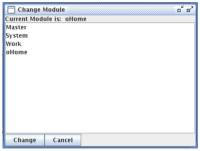
Figure 5.1: The module context selection window
In our example, you should get a window displaying the modules Master, System, Work, and oHome in alphabetic order (see Figure 5.1). Now double-click the entry Work. As a result the module context of the CBserver is set to the module Work. As the Work module has got no nested modules, there are no additional modules displayed in the listbox (i.e., all modules that are visible in the oHome module are also visible in the Work module. Alternatively, you can specify the module context using the load model operation and placing a
{$set module=MODNAME}
inline command placed before the first Telos frame of a source model file. MODNAME stands for the name of the module in which you wish to define the content of the source model file. Module paths like System/oHome/Work are allowed as well. Please note that only one inline-command is allowed within one source model file. Specifying module contexts using inline commands is a facility for automatically loading Telos frames of large applications which are spread over different modules – without requiring the user to employ the select module function from CBIva.
In CBShell, you can use the command cd (alias: setModule) to switch the module context. Let’s set the module context first to oHome and then TELL the following frames for a very simple ER notation (using CBShell syntax, see section 7):
cd oHome
tell "EntityType end
RelationshipType with
attribute
role: EntityType
end"
Then set the module context first to Master and then TELL the Employee frame:
cd Master
tell "Employee in EntityType,Class with
attribute
name : String
constraint
nec: $ forall e/Employee exists n/String (e name n) $
end"
The object Employee is now only visible in the module Master. When you set the module context to Work (or System) and try to load the Employee object, you should get an error message from the server stating that the object Employee is not visible in that module context. The object Employee correctly references EntityType, since it is visible via the super-module oHome.
A nested module object is a module defined in the context of a super module and therefore is contained in the super module. The objects contained in the nested module are not contained in the super module.
After the definition of the Master and Work modules as nested modules to the oHome module, let’s define a nested module to the Work module. We assume that the current module context is set to the Work module. Now tell the following module object:
cd Work tell "Test in Module end"
As a result we have defined the nesting hierarchy depicted in Figure 5.2.
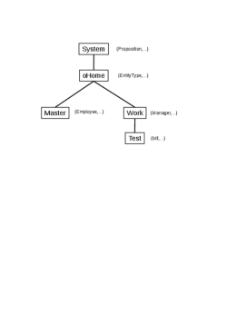
Figure 5.2: Nested module hierarchy
A nested module can see the content of all modules on the path to the root module System. Therefore, when you set the module context to Test, you can reference all objects contained in the modules Test, Work, oHome, and System. When you set the module context to Work, you can reference all objects contained in Work, oHome, and System.
Any ConceptBase database has the pre-defined modules System and oHome. The System module contains the pre-defined objects of ConceptBase, i.e. the O-Telos classes Proposition, Individual, Attribute, InstanceOf, and IsA, but also a large number of other pre-defined objects that are required for a functioning system, e.g. Integer, Class, QueryClass, and many more. The oHome module is initially empty. It is the default home module for users and clients that add/update/delete and query objects. A user could delete objects in the System module, which could then disable core functions of ConceptBase. One can however also prevent such updates by limiting the access to the System module.
In order to use objects which are not visible in a module, ConceptBase offers the export/import facility. The class Module defines two further attributes, namely to specify objects exported from a module and to modules imported by a module.
Module with
attribute
contains : Proposition;
exports : Proposition;
imports : Module
end
In order to allow other modules to import objects from a module, we need to define an export attribute from the module object to those objects. We call the set of objects exported by a module the export interface of a module. In order to include the export interface of another module to a module, we need to define an imports-attribute from the module object to the module to be imported.
In our running example we would like to define a specialization of the Class Employee within the Work module. It is desirable to reuse Employee from the Master module instead of redefining it in the Work module.
In order to import the class Employee to the Work module, we have to define all objects belonging to the Employee class as exported objects. First change the module context to Master. Now TELL the following frame within module Master:
Master with
exports
e1 : Employee;
e2 : Employee!name
end
Now you have defined the objects Employee and Employee!name as exported objects of the Master module. Any module in your database, which defines an imports-attribute to the Master module, can now reference these objects. Now change the module context to Work and TELL the following frame within module Work (see also Figure 5.2):
Work with
imports
i1 : Master
end
The objects mentioned above are visible in the context of the Work module. Check this by loading the Employee object with the Edit/Load Object function of CBIva. The import declaration for Work is done within the module context Work. The attribute Work!imports is thus part of the Work module while the Work object is contained in the oHome module. The object Master is visible in the Work module as well. The visibility rules restrict the possible import declarations. You can now define the specialization Manager of Employee in the context of the Work module:
Manager isA Employee end
When untelling exports declarations from a module, ConceptBase checks for integrity violation in all concerned modules. Try untelling the exports attributes from the Master module and you should get an error message saying that referential integrity is violated in the Work module. The reason for this violation is simple: since the class Employee is no longer exported from Master, it is no longer visible inside the Work module and therefore the referential integrity (a builtin O-Telos axiom) is violated for the Manager specialization of Employee.
If you define integrity constraints in the exporting module Master, then these constraints are not checked for objects in the importing module Work. For example, the constraint nec of Employee is only visible in Master and its sub-modules, not in Work and its sub-modules. Hence, you can still declare an object like bill in module Test that does not need to fulfill the constraint for Employee:
cd Test tell "bill in Employee end"
The module hierarchy in Figure 5.2 assigns objects belonging to different abstraction levels (meta classes, classes, objects, ...) to different modules. This assignment is not prescribed, but it is recommended. For example, the module oHome stores meta classes such as EntityType. This metaclass is then used in the sub-module Work to define a class like Manager. Finally, the module Test instantiates the class Manager by bill. There is a natural reason for such a structure. The persons defining meta classes are engineering modeling languages. The persons defining classes are conceptual modelers or application programmers, and the persons defining objects at the lowest abstraction level are application users. These activities depend on each other but one should separate the workspaces to shield an update to the modeling language from an update to a conceptual model. Another reason is that a modeling language can be used for many conceptual models. Each conceptual model needs the definitions of the modeling language but they typically should be separated from each other. Hence, each conceptual model can be stored in its own module, being a sub-module of the module defining the modeling language.
The following CBShell script shows how a module hierarchy is created. The command "cd" is use to switch to a module, the command "mkdir" creates a new submodule in the current module. The module oHome contains the submodule ERnotation for the definition of the ER modeling language. The two submodule UModel and LibModel. The submodule UData of UModel stores a sample database for the university model.
cd oHome mkdir ERnotation cd ERnotation tellModel ERD-Language.sml.txt mkdir UModel mkdir LibModel cd ERnotation/UModel tellModel UniversityModel.sml.txt mkdir UData cd ERnotation/UModel/UData tellModel UniversityData.sml.txt
When ConceptBase is used in a multi-user setting, it makes sense to automatically assign clients of ConceptBase users to a dedicated module context, their so-called home module. To use this feature, the database of the ConceptBase server has to contain instances of the pre-defined class CB_User. This class is defined as follows:
CB_User with
attribute
homeModule : Module
end
Assume that we have two users mary and john who need to be assigned to different modules when they log into the CBserver by their favorite user interface. The system adminstrator should then include the following definitions to the database of the CBserver:
Project1 in Module end Project2 in Module end mary in CB_User with homeModule m1 : Project1 end john in CB_User with homeModule m1 : Project2 end
As a consequence, the start module of the two users will be set accordingly when they log into the CBserver. The home module feature is especially useful in a teaching environment. The teacher can put some Telos models into the shared oHome module. Students’ home modules would be assigned to sub-modules, e.g. based on group membership. Each student group can then work on an assignment by working on their sub-module without interfering with other student groups.
There is a subclass AutoHomeModule of Module, which supports applications of ConceptBase where by default any user should work in her own module context. Rather than having to define separate modules for each user explicitely, you can just define a certain module to be an instance of AutoHomeModule.
LectureModule in AutoHomeModule with exception e1: mary end mary in CB_User with homeModule m1 : LectureModule end john in CB_User with homeModule m1: LectureModule end
You can also define a rule to assign all or a subset of users to this module:
CB_User in Class with
rule
homeRule : $ forall u/CB_User (u homeModule LectureModule) $
end
Here, user john (a student) will be automatically be assigned to a new module M_john that is created as sub module of LectureModule. User mary, presumably a teacher, is defined to be an exception to this rule and she will get the home module LectureModule. By this, one can reduce the chances of unwanted interferences between users of the module LectureModule. Still, all users can read the definitions in the module LectureModule and its submodules unless access restrictions are defined (see section 5.7).
The simplest way to separate the workspaces of any user is to tell
oHome in AutoHomeModule end
In this case, no user needs to be defined explicitely1 as instance of CB_User and still will get assigned her own sub module to work in. The auto-home module becomes active as soon as the module is declared as instance of AutoHomeModule. If you want to enable oHome as auto-home module from the very beginning when a database is created, then you can activate it by a parameter of the CBserver, e.g.
cbserver -g public -new MYNEWDB
This will instruct the CBserver to tell "oHome in AutoHomeModule end" when it sets up the new database. See also section 6.6.
The home module definitions need to be made within module oHome because they will be evaluated upon client registration (server method ENROLL_ME) in this module context. Please note that the module context is only dependent on the user name, not on the client and not on the network location of the user. It could well be that a user mary is defined on multiple computers on the network and that different natural persons are identified by mary. ConceptBase currently cannot detect such cases.
When multiple users work on the same server, their workspaces not only need to be separated in a controlled way by means of the module feature. Users are also interested in controlling who has which rights on their workspace (=module). ConceptBase includes basic support for rights definition and enforcement via a user-definable query class CB_Permitted. The signature of this query class has to conform the following format:
CB_Permitted in GenericQueryClass isA CB_User with
parameter
user: CB_User;
res: Resource;
op: CB_Operation
...
end
A user is allowed to perform the operation op on the resource res iff the constraint of the query is satisfied. Then, user is returned as answer of the query. If not, the answer is nil (equals empty set). Some fundamental definitions are pre-defined objects of ConceptBase:
Resource with end Module isA Resource end CB_Operation end CB_ReadOperation isA CB_Operation end CB_WriteOperation isA CB_Operation end TELL in CB_WriteOperation end ASK in CB_ReadOperation end
Hence, at least two operations TELL and ASK are pre-defined symbolizing write and read accesses to a resource. Modules are the prime examples of resources to be access-protected. Currently, only access to them is monitored by the CBserver.
When a user wants to switch to a new module, then he must at least have the permission to execute the operation ASK on it, i.e. read permission. Otherwise, the module switch is rejected. This check is the main protection scheme offered to module owners. Define the query class CB_Permitted in the module that needs protection.
Assume that there is a user jonny who wants to protect his module Mjonny. To do so, he would first define the module and set the module context to Mjonny.
Mjonny in Module end
Then, he would set the module context to Mjonny define his rights management policy, for example:
CB_Group with
attribute
groupMember: CB_User;
permitted_read: Resource;
permitted_write: Resource;
owner_resource: Resource
end
CB_User isA CB_Group end
CB_Group in Class with
rule
rr1: $ forall p/Resource u/CB_User
(u owner_resource p) ==> (u permitted_write p) $;
rr2: $ forall p/Resource u/CB_User
(u permitted_write p) ==> (u permitted_read p) $;
rr3: $ forall u/CB_User (u groupMember u) $;
rr4: $ forall u/CB_User p/Resource
( exists g/CB_Group (g groupMember u) and
(g owner_resource p) ) ==> (u owner_resource p) $;
rr5: $ forall u/CB_User p/Resource
( exists g/CB_Group (g groupMember u) and
(g permitted_write p) ) ==> (u permitted_write p) $;
rr6: $ forall u/CB_User p/Resource
( exists g/CB_Group (g groupMember u) and
(g permitted_read p) ) ==> (u permitted_read p) $
end
CB_Permitted in GenericQueryClass isA CB_User with
parameter
user: CB_User;
res: Resource;
op: CB_Operation
constraint
cperm: $ (
( not exists u/CB_User
(u owner_resource ~res) and
not (u == ~user) )
or
( (~op in CB_ReadOperation) and
(~user permitted_read ~res) )
or
( (~op in CB_WriteOperation) and
(~user permitted_write ~res) )
)
and UNIFIES(~user,~this) $
end
In the above example, access rights are granted to groups of ConceptBase users. The owner of a resource will always have full access via rules rr1 and rr2.
Then, the user would claim ownership to the module via
jonny in CB_User with owner_resource r1: Mjonny end
Then, only jonny can switch to the module Mjonny. If a second user like mary was to be granted read permission, jonny would define within module Mjonny:
mary in CB_User with permitted_read r1: Mjonny end
In the above example, rights can also be granted to groups of users and then inherited to its members via rules rr4 to rr6. It should be noted that the definitions of owner_resource, permitted_read and permitted_write are just for illustrating what is possible. ConceptBase only requires the query class CB_Permitted in the module where the access rights need to be enforced. If such a query class (or a local version as explained below) is not defined, then any access is permitted for any user.
When a user attempts to switch to new module context, ConceptBase checks whether the user has at least read permission, i.e. permission for executing the operation ASK, on the module. If permission is not granted, the user cannot switch the module context and an error message is presented.
The definition of the query CB_Permitted is visible in the module where it is defined and in all sub-modules of this module. One can also define a local version of the query by appending the module name to its name, e.g. CB_PermittedMjonny. This version is only tested for access to the module Mjonny. The local overrides the general version CB_Permitted and its function is not inherited to sub-modules. The subsequent definition prevents updates to the Test module, if it is visible in the Test module and access control is enabled by the CBserver:
GenericQueryClass CB_PermittedTest isA CB_User with
parameter
user: CB_User;
res: Resource;
op: CB_Operation
constraint
cperm: $ (~op in CB_ReadOperation) and UNIFIES(~user,~this) $
end
There are plenty of ways to combine general and local versions of CB_Permitted yielding different access policies. When using access control, at least the module System should be protected. Otherwise, users could change essential definitions affecting all other users. Examples for access control policies are in the HOW-TO section of the ConceptBase Forum ().
It is very well possible to make access to a ConceptBase database completely impossible by errors in the definition of CB_Permitted. For example, one could deny access to any operation by the following simple rule:
CB_Permitted in GenericQueryClass isA CB_User with
parameter
user: CB_User;
res: Resource;
op: CB_Operation
constraint
cperm: $ FALSE $
end
In such cases, one has to start the CBserver with disabled access control and repair the definition of the query CB_Permitted. Access control is by default set to level 1, which just constrains the scope of an UNTELL to the local module. You need to set the CBserver option -s to 2 to fully enable access control (see option -s in section 6).
The access definition via the query CB_Permitted or its localized variant is available in the module oHome and its submodules. It is not available for checking permission to access the System module. The reason is that user details are stored in oHome and signature of CB_Permitted requires that the user details are known. The protection of the System module is instead configured via the security level of the CBserver (option -s):
Caution: The access control feature of ConceptBase avoids some unwanted interferences in a setting where multiple users work on the same server. The system in not save against malicious attacks! Neither does it prevent all unwanted interferences.
The contains attribute allows to check which objects belong to a module. It can be used by a simple query that lists the module content of all modules that are currently visible:
ShowModule in QueryClass isA Module with
computed_attribute
cont : Proposition
constraint
ccont : $ (~this contains ~cont) $
end
A more sophisticated method is to use the builtin query listModule. A call of listModule without parameters will list the current module as Telos frames. You can also provide the module to be listed as a parameter, e.g.
listModule[System]
will list the content of the module System. ConceptBase will check read permission before a module content is listed. You can also use a module path as parameter, e.g.
listModule[System-oHome-Work]
A module path is formed much like a directory path in a file system. The root module is System and modules names are separated by the character ’-’. You can also use ’/’ as module separator:
listModule[System/oHome/Work]
The implementation of the listModule query preserves the order in which objects have been created. Note that the System module is defining the essential objects that ConceptBase requires to run correctly. You can list the System module but you should not change it.
If the content of a module was created by separate transactions, then listModule shall indicate them by a separator line "{---}". This separator is disabled when you specify -mg whole as CBserver parameter (see section 6.1). The separator is technically a comment. However, CBGraph and CBIva shall use such separator line to split a sequence of frames into separate TELL transactions.
If a module path does not exist or the current user has no read permission on modules in the path, then the answer "{* no *}" is returned.
The query listModule extracts all objects of a module into a single Telos source. Since a module is typically created by a sequence of TELL/UNTELL transactions, this Telos source can in rare cases fail to be told by a single transaction. An example is the specification of the ERD model in . The university model (and then university data) depend on rules defined in the model ERD-Semantics, specifically the semantics of the ISA type (instances of subclasses are also instances of superclasses). If you tell the university model and the ERD semantics in the same transaction, then the rules for the ISA type are not yet usable for checking the consistency of the university model. A way out is to store the university model as sub-module of the module that contains the ERD semantics, and university data as sub-module of the university module.
A way out of this dilemma is to use the module feature of ConceptBase in a thoughtful way. In this case, define a module like ERnotation to which the ERD notation is told. Within this module, define a submodule like UModel, to which the example ER model is told. Finally, define a submodule UData to hold the sample data. By nesting the submodules in this way, the sample data objects can "see" the definitions of the example ER model. And the example ER model can "see" the objects of the ER notation.
The builtin query purgeModule attempts to delete all propositions of the current module or the module that is specified as a parameter. The operation fails if the module contains a non-empty submodule. Further, the operation may non be applied to the System module.
The operation requires that the user has appropriate permissions on the module to be purged.
The query purgeModule is declared as a hidden object. Hence, it shall not show up in the ’Display queries’ dialogue of CBIva. The current implementation is experimental. An alternative is to list the contents of the current module and then applying the UNTELL operation to the whole content.
The ConceptBase server (see section 6) has two command line options -save and -load to synchronize with the content of database modules as Telos sources files in the file system of the CBserver. The purpose of this feature is to allow an easy way to save/reload the complete content of a database using a readable source format. These sources can be modified with a regular text editor.
The source files generated by the save function include a set module directive that instructs the CBserver to load the file to the original module path when the load function is invoked (or when the file is loaded manually via the load model function of CBIva (see section 8). There are two ways to represent saved/loaded module sources in the file system:
The save function is activated when the CBserver option -save savedir is specified. The source files are saved in the directory specified by the savedir parameter. This parameter must be the path to an existing directory. If activated, the save function is invoked upon the following events:
In all cases, the save function is executed with the rights of the user who started the CBserver. The save function requires at least read permission for the module to be saved. The above rules are also applicable to the server-side materialization of query results, see section 5.11.
The load function gets activated when the option -load loaddir is specified. The directory loaddir should contain files with file/directory names being formed as explained for the save function. It loads the files in alphabetic order to control the sequence in which the files are loaded. If you manually add Telos source files to a directory that is about to be loaded, then make sure that its file name is alphabetically sorted after the module file name, e.g. AB_01extension.sml is loaded after AB.sml. The import is executed once at CBserver startup with the rights of the user who started the CBserver. If a file contains an error, the loading of this module source fails. Error messages shall be displayed in the trace log of the CBserver. Note that the CBserver can be started with a non-empty database. The import of source files will be added to the already existing content of the database.
Examples:
cbserver -d DB1 -save /home/meee/DB1SRC
This command starts up a CBserver that will eventually save the module sources in the specified directory. Note that the saving takes place either at CBserver shutdown or when a client tool disconnects (partial save).
cbserver -u nonpersistent -save /home/meee/SRC
This variant will start a CBserver with a non-persistent database but the contents will nevertheless stored as Telos sources file in /home/meee/SRC.
cbserver -u nonpersistent -load SRC1 -save SRC2
This command starts a the CBserver (i.e. only system objects are defined) and then loads module sources from the directory SRC1. Then, client tools may modify the contents of the database. Finally, the module contents are saved in directory SRC2.
cbserver -d DB1 -load /home/meee/DB1SRC -save /home/meee/DB1SRC
The load and save directories may also be the same. Note that the save function will eventually overwrite the files that have been loaded at CBserver startup.
cbserver -u nonpersistent -load DB1SRC
This command will start a non-persistent CBserver and loads the module sources of directory DB1SRC.
Module sources do not contain the historic states of objects that are maintained with rollback times in the CBserver database. Hence, a persistent database is containing more information than the saved module tree and is also faster to start up compared to loading module sources. Still, the load/save function offers a simple way to keep a textual representation synchronized with the evolving database state, or to back-up/re-load a database state. The CBserver parameter -db combines the function of -d, -load, -save, and -views. Hence, all files will be accessed/updated in the database directory.
Similar to the saving of module sources, the CBserver parameter -views enables the materialization of certain query results in the file system of the CBserver. To do so, one has to specify the queries to be materialized. Only queries with a single parameter or with no parameter can be materialized. The queries need to be listed with the module that contains the objects that match the query. Example:
MyModule with
saveView
v1: Q1;
v2: Q2
end
You can also use deductive rules deriving the values for the saveView attribute.
The queries Q1 and Q2 need to be visible in the module MyModule. The queries need to have an answer format (section 3) defined for them (attribute forQuery). Assume that the query Q1 has the single parameter param:C1. ConceptBase will then call the query Q1[x/param] for each instance x of class C1.
The result is stored in a file with name x in the directory specified with the -views parameter. If the view is extracted from a module different to oHome, then the filename includes the module name as a prefix. The file type of the file is taken from the optional fileType attribute of the answer format of Q1. The default file type is ".txt". The result of queries with no parameter is stored in files carrying the name of the query. If the module separator is set to ’/’, then the files are stored in sub-directories that reflect the module path, from which the view was extracted, see also section 5.10.
The materialization of query results is executed at the same events when the saving of module sources takes place (section 5.10). To enable the materialization, you need to specify the target directory with the -views option:
cbserver -d MYDB -views /home/meee/MyViews
You can also use the CBShell utility (section 7) to extract the query results and materialize them on the client side. This method is more flexible but you need to program the CBShell scripts for to extract all required views. For example, the CBShell script
connect alpha 4001 ask Q1[x/param] OBJNAMES default Now showAnswer exit
connects to the CBserver running on a host named alpha with port number 4001 and will extract just the answer to Q1[x/param]. If there are more answers to be extracted, one has to employ separate scripts for each of them and execute them one after the other to save the results in separate files. The server-side method using the -views option will determine all possible fillers x for the parameter param and automatically save the results of Q1[x/param] in a separate file with filename x.
You can use the -db option for activating the saving/loading of module sources and the materialization of query results within the database directory:
cbserver -db MYDB
This creates a single directory with both the binary database files, the module sources, and the materialized query results. Further examples are available from the CB-Forum at .
ConceptBase can only export textual query results. Some output formats such as program source code can be further processed by calling appropriate tools. This can be initiated manually, or one can configure the directory specified in the -views option with a command file postExport.sh. This command file shall then be executed by the CBserver whenever a saving operation on the views directory has taken place.
You have to regard that the command is executed in the context of the CBserver. Hence, it is executed in the directory in which the CBserver was started. You should therefore change to the views directory inside the post-export command file like shown in this example of postExport.sh:
#!/bin/sh cd `dirname $0` cp *.xml /home/meee/public
The second line changes to the views directory. The third line does the specific processing of the materialized query results. Here, we just copy the file. More interesting are calls to transformation routines.
You should remove the write permission for the post-export command to prevent that it can be overwritten2 by the materialization function. Under Unix/Linux, this can be achieved via the command
chmod u-w postExport.sh
The above command only has to be executed once within the views directory. If you use the module separator ’/’ (i.e. the deep structure explained in section 5.10), then the view files are stored in the directory of the module they belong to. This also may effect the way how you program the postExport script file. In Unix/Linux, you can use the ’find’ command to fetch all files that are subject for post-processing:
#!/bin/sh
cd `dirname $0`
xmlfiles=`find . -name "*.xml"`
for file in $xmlfiles; do
cp $file /home/meee/public
done
This script also works fine in the case of a flat view directory structure.
The ConceptBase.cc server (CBserver) offers its services via a TCP/IP port to client programs. The main services are to TELL or UNTELL O-Telos objects and to ASK queries to the database. The operations are called by clients (for example, the user interfaces described in section 8). An arbitrary number of clients can connect to a CBserver.
The CBserver is started1 by a command line
cbserver <params>
assuming that the installation directory of ConceptBase.cc is added to the search path of executable programs. If it is not on the search path, then simply change the current directory to the installation directory of ConceptBase.cc or use its absolute path of the cbserver script.
The following parameters are available for the ’cbserver’ command:
If a CBserver is started without any parameter, then the update mode shall be set to nonpersistent, the trace mode to no, multi-user mode is disabled, and the server mode to slave. The other parameters are set to their defaults. Such a CBserver is useful as companion of tools that need it only while they are running.
cbserver
A ConceptBase client running on the same computer will then connect to this CBserver, when it uses ’localhost’ as host and 4001 as port number. Since the CBserver runs un slave mode, it will shut down when its client disconnects.
The CBserver is only compiled for Linux architectures. This means that user of other platforms must rely on a Linux system to utilize ConceptBase. The traditional way is to start the CBserver on such a Linux system and then connect to it, possibly using a so-called public CBserver (see section 6.6). Since April 2017, this detour is no longer required for users of Windows 10 (64bit, Creators Update). This version of Windows is capable to let Linux programs run under the ’bash’ utility, which is basically a whole Linux system under Windows that realizes calls to the Linux API by hooks to the Windows API. Hence, it is not a virtual machine, it lets you run the Linux (64bit) variant of the CBserver natively on Windows 10.
To enable the Linux capability on Windows 10, follow the instructions at . Note that you must have installed Java (64bit) on your Windows machine, not Java (32bit) to take full advantage of this feature. You can check whether your Java is 64bit by calling the following command in a Windows command window.
java -d64 -version
Users of older Windows versions and of other operating systems can continue to use the public CBserver (see section 6.6) to take advantage of ConceptBase.
A ConceptBase database is a directory that contains at least the following files:
The database files may only be updated via the ConceptBase server. Their initial state is bootstrapped from textual Telos frames that define the pre-defined objects of O-Telos. Since the pre-defined objects can change from version to version, we cannot guarantee binary compatibility of ConceptBase databases. You can easily export the textual definitions from a databases via the -save option. Those definitions can then be imported to the new ConceptBase version. The database directory may contain further text files with filetype ’lpi’. These are Prolog plugins loaded at startup time, see also section F.
A new database is created from the database lib/SystemDB in your ConceptBase installation directory. The System database contains exactly the objects of the root module System. They include for example the definitions of the objects Proposition, Individual, Attribute, InstanceOf, and IsA. Further the objects Class, QueryClass, Function, ECArule, Module and many more are defined that are needed to formulate queries and to use the capabilities of the system.
Whenever a new database is created, the files from this System database are copied into the new database directory. This allows experienced ConceptBase users to adapt the System database to their needs. Just start a ConceptBase server with
cbserver -d $CB_HOME/lib/SystemDB -s 0
Replace $CB_HOME by the path to your ConceptBase installation directory. Then start a CBIva user interface, connect to the CBserver and switch to the module System. Assume you want to predefine the class Container and declare a Model as subclass of Container:
Container with
attribute
contains: Proposition
end
Model isA Container end
You can also add rules and constraints about containers, e.g. that containers may not contain themselves. A more significant extension would be to add active rules to the system database. For example, the active rules in CB-Forum at changes the semantics of the UNTELL operation. Such definitions are subsequently included in any new database that you create. Be careful with deleting system objects. The code of the CBserver relies on the existence of certain system objects.
The trace of the CBserver can be saved by redirecting its
output, e.g.
cbserver -r 10 -port 4444 -t high -d MYDB >> mylogfile.log
The CBserver can also be started directly from the ConceptBase.cc User Interface (see section 8) and most parameters can be specified interactively. The command line version is recommended when one CBserver serves multiple users or when user interface and server shall run on different machines. The parameter -r 10 instructs the CBserver to restart after 10 seconds if a crash has occurred.
A special error message during the startup of the CBserver is the following:
### FATAL ERROR: Application is locked by hostname, PID 1234 ### CBserver aborted
This messsage is printed if there is still a file with the name OB.lock in the database directory (option -d). The OB.lock file should avoid that two servers are using the same database directory. The file may be left over of a previous CBserver if the server was not stopped correctly (e.g. aborted by Ctrl-C or it crashed). If you get this error message, make sure that there is no other server running that uses this directory and then delete the file OB.lock. Then, the CBserver should start correctly.
A public CBserver is a ConceptBase server that is accessible from the whole network. As such this is a property that any CBserver has, except when the multi-user capability is disabled, or when your firewall prevents external access.
If you work with an existing database, you may want to specify some access rights rules like suggested in section 5.7. We neglect them in this simple example. Now, start the public CBserver with suitable parameters under Linux/Unix:
cbserver -r 2 -a jonny -g public -ia 0.5 -u nonpersistent -d MDB &> log.txt &
The option -g public enables the slave mode implicitely and tells oHome as an instance of AutoHomeModule. The combination of the slave mode and the option -r instructs CBserver to stop and restart when the last client exits. The update mode is nonpersistent. As a consequence, the restarted CBserver will use the unchanged state of MDB. This is useful, if you want to provide the service of CBserver to a larger group of (anonymous) users. They can log in with a client, operate on the database in nonpersistent mode and eventually leave the CBserver. When the last active client3 leaves the CBserver, then CBserver will freshly start up after 2 seconds. Due to the option -u nonpersistent user-defined objects are only stored at the public CBserver while there are still active clients enrolled to the public CBserver.
The parameter -a sets the administrator user of the public CBserver. This user is allowed to shutdown the CBserver from a client. The auto home feature will assign different users to individual workspaces. Unless you introduce access rights (and enable them via the CBserver option -s 2) the users can also manipulate the modules of other users. However, the CBserver is restarted whenever the last client logs off. Hence, the definitions of different users are not permanently stored on the CBserver. The parameter -ia used here instructs the CBserver to regard a client as active of it had its last interaction within 0.5 hours. Clients that were inactive for a longer time will not prevent the CBserver from restarting when another (active) client logs off the CBserver.
Consider the following alternative command to start a public CBserver:
cbserver -t no -r 2 -a jonny -g public -ia -1 -d ALLDB &> /dev/null &
Here, the updates are stored persistently in the database ALLDB. Changes to modules are not lost when the last active client leaves the CBserver. There is no log file created as well. The option ’-ia -1’ used here instructs the CBserver to regard any client as active, regardless of how long ago its last interaction occurred.
Configure the CBIva interface to use the public CBserver via the variable PublicCBserver. It can be set by the menu item "Options/Edit Options Manually" of CBIva, see section 8.4. A value different from none enables the use of the public CBserver by CBGraph. You can optionally append a port number like "cbserver.acme.com/4002". The default value for the port number is 4001. Installations of ConceptBase on platforms, for which no binaries of the CBserver exist, may use a default public CBserver. This is the case OS-X and older versions of Windows4.
Don’t forget to save the options after changing the variable.
The best way to interact with a public CBserver is to use graph files, see section 8.2.3. Assume that a public CBserver is running on host cbserver.acme.com. and that cbserver.acme.com was configured as the public CBserver to be used. Then, calling
cbgraph graph1.gel
will connect to the public CBserver instead of ’localhost’. The port number for the connection is taken from the graph file. Do not forget to save the graph file before exiting CBGraph if the public CBserver was started in non-persistent mode. If you subsequently open the graph file, it will attempt to connect to the same host. You can force it to attempt the connection to localhost instead by
cbgraph -host localhost graph1.gel
Since version V5.2.4 ConceptBase.cc features a new query evaluation method, which uses a so-called tabling cache to store intermediate results of predicates that are called during the top-down (SLDNF) query evaluation. Assume, for example, that an employee ’bill’ has two projects ’p1’ and ’p2’. Then, the result of a predicate ’(bill hasProject x)’ with variable x would be the set {(bill hasProject p1),(bill hasProject p2)} consisting of facts. We call this fact set also the extension of the predicate.
After a completed predicate evaluation, the tabling cache of the predicate holds its extension. Tabling speeds up query evaluation and prevents infinite loops when ConceptBase.cc evaluates recursive queries and deductive rules. Essentially, the tabled evaluation allows to compute dynamically stratified semantics of the Datalog database underlying ConceptBase.cc. Plenty of examples for recursive rules and queries are provided in the online ConceptBase Forum.
The CBserver provides three tabling cache modes to control the behavior during query evaluation:
ConceptBase will only call tabled evaluation for deductive predicates. Other predicates are evaluated by the regular SLDNF engine of the underlying Prolog engine. By default, the tabling cache mode is activated in mode keep. Some statistics on cache usage are written to the terminal window of the ConceptBase server when the tracemode has been set to veryhigh.
Acknowledgements: The techniques for the tabled query evaluator of ConceptBase.cc are inspired by the ’tabled evaluation’ [SSW94, CW96]. We do however not delay the evaluation of negated predicates but rather re-order them at compile time to guarantee that all variables are bound at call time. Tabled evaluation is also implemented in XSB [] and DES [].
The default update mode is ’persistent’. In persistent mode, all changes
to the database are written to the file system at the directory specified in
the parameter ’-d’. Persistent mode is suitable when a CBserver
runs for a longer period of time and is directly updated by
application programs.
If ConceptBase.cc is used for testing and modeling
purposes, the update mode ’nonpersistent’ is an interesting alternative.
We discuss two scenarios for the nonpersistent mode and one for the
persistent mode.
Scenario 1: Single-user modeling. When a user needs to model a certain application domain with classes and meta classes, he usually works with external Telos files (aka source models, file extension ’.sml’). These files can include comments like usual with program source code. The recommended mode here is ’-u nonpersistent’ without specifying a database. The user can load the source models into such a non-persistent server and make corrections to the source files in case of errors or design changes. Here, ConceptBase is mostly used to check and analyze the models. Recommended options:
cbserver -u nonpersistent -mu disabled
Scenario 2: Lab assignments. Assume that a teacher wants students to exercise a certain modelling task using ConceptBase.cc. Then, he would prepare some Telos files with necessary definitions (e.g. some meta classes) and load them into a persistent ConceptBase server. After that, he can restart the ConceptBase server in non-persistent mode on the same database created before. Student can then work on their extensions while the state of the database can easily be set back to the original state defined by the teacher. The module system of ConceptBase.cc can be used to support multiple students to work on the same server without interfering with each other, see section 5. Recommended options:
cbserver -d MYDB -s 2 -mu enabled -u nonpersistent
The second scenario might also be useful in modeling. If there are some
parts that are regarded as stable, the modeller can decide to make
them persistent and only add/modify those Telos models that are still
subject to change. In particular for large Telos models, this strategy
saves time.
Note that the updates by the users are lost when the non-persistent
CBserver is stopped. This might be useful, if you want to re-use the same
initial database MYDB several times, e.g. for different user groups.
Scenario 3: Project work. Here the students work for several days on a given task. Changes shall not be lost. The use of the -db option will not only store the database in binary form but also store the source code of all modules as text files in directory MYDB. Recommended options:
cbserver -db MYDB -s 2 -mu enabled
If ConceptBase.cc is used in a multi-user setting, then one can combine the update mode with the module feature (see section 5). In this scenario, multiple users access the same CBserver. A common super module (e.g. the module oHome) carries the common objects of the users. Each user can be assigned to her own hown module (a sub module of the common super module) and create and update objects in this workspace without interfering with other users. If several groups of users shall share their definitions, then they would be assigned to the same home module. The home module may have sub modules for testing and releasing definitions. By employing access rights to modules, one can also design which user has which read/write permissions. The builtin query listModule allows to save the contents of a module to a Telos source file (see section 5.8).
ConceptBase.cc realizes the concept of a historical database. The TELL operation submits O-Telos frames to the CBserver. The CBserver extracts the ’novelty’ of the submitted frames and translates it into a set of P-facts to be stored in the object store. Any P-fact has a so-called belief time associated to it (see section 2.1). The belief time is an interval (t1,t2) whose left boundary t1 is the time point when the P-fact was inserted to the object store, i.e. the time when the transaction was executed that led to the insertion of the P-fact. The right boundary t2 specifies the time point after which the CBserver assumes the P-fact to be not true anymore. It is initialized with ’Now’ when the P-fact is created. This symbolic value is interpreted as the current time. You may also interpret such a time interval to be right open.
The UNTELL operation terminates the belief time of P-facts specified in an O-Telos frame. The value ’Now’ is replaced by the time5 when the UNTELL operation is executed.
From the user’s perspective, a TELL operation is about creating some objects and the UNTELL operation is about deleting them6. Many users expect the UNTELL operation to be symmetric to the TELL operation, i.e. untelling a frame that has been told before should remove the frame completely. This is however not the case for the following reasons:
The last reason is most significant in preventing symmetry. As an example consider the O-Telos frame (referred to as frame 1).
bill in Employee with
name
bname: "William"
end
ConceptBase.cc will recognize that bill is an individual and that bill!bname is an attribute. This information is attached internally to the P-facts, more precisely, it is derivable from the structure of the corresponding P-facts. Assume that you started a CBserver with untell model verbatim (see below). When you ASK the CBserver for the frame of bill after the TELL operation on frame 1, you will get frame 2:
Individual bill in Employee with
attribute,name
bname: "William"
end
Hence, the instantiation to the builtin classes Individual and Attribute is added to the frame. If we submit the original frame 1 to an UNTELL operation, ConceptBase.cc assumes by default that only two facts should be untold:
As a consequence, the object bill and its attribute continue to exist after the UNTELL on frame 1. It would look like (frame 3):
Individual bill with
attribute
bname: "William"
end
Only by untelling this frame 3 as a second operation or by untelling the completed frame 2, the object bill and its attribute bill!bname shall be made historical.
This assymmetry of TELL and UNTELL is regarded by some ConceptBase.cc users as unnatural behavior. They expect that an UNTELL is also supposed to affect the objects themselves, not just their instantiation to classes. To support those users, we provide a so-called untell mode (see parameter -U in the list of CBserver command line parameters). The untell mode verbatim will cause ConceptBase.cc to behave as explained above. The mode cleanup (default) will take care to remove the objects themselves provided that they have no other instantiations to classes except instantiation to the four builtin classes Individual, Attribute, InstanceOf, and IsA. Furthermore, no other object may be linked to the object subject to be untold.
You can use ECArules to realize a cascading UNTELL, i.e. if an object is deleted then all its links to other objects are deleted as well, leading to potential follow-up deletions. The required ECArules are provided in . You only need to add the ECArules to your database to enact the cascading UNTELL. You should be careful with using the cascading UNTELL. For example, untelling a system class will also untell all instantiations to it. Use the CBserver option -s 1 to prevent such undesired deletions.
ConceptBase.cc stores objects in a dedicated object store maintained in main memory. A P-fact P(o,x,n,y) consumes about 800 bytes of main memory. That means that one can store roughly 1 million P-facts in 1 GB of main memory. A typical Telos frame is stored with roughly 10 P-facts. Hence, 1 GB of main memory allows you to store around 100.000 Telos frames. On 32 bit CPUs, this results in a maximum of roughly 400.000 frames that can fit into 4 GB of addressable main memory. This restriction virtually vanishes with 64 bit CPUs.
A single TELL/UNTELL operation submitted to the CBserver should not contain more than about 2000 frames (at about 5 attributes per frame). Otherwise, the compiler can run out of stack memory.
The raw performance of the object store, i.e. the time needed to reconstruct a frame for a given object identifier, is virtually independent from the number of P-facts that it stores. However, if you have defined many rules or integrity constraints, the performance may well degrade significantly with the number of stored P-facts. The same holds for queries. We tested the response times for standard queries such as computing the transitive closure in relation to varying database sizes. Results indicate that ConceptBase apparently approximates in many cases the theoretic optimum.
The performance of the active rule evaluator (section 4) is currently rather limited. We measured around 100 rule firings per second. This can be a performance bottleneck when many active rules are being processed.
The application programming interface (API) to the ConceptBase server (CBserver) is realized by the Java class LocalCBclient. Most (Java) application programmers presumably only need the simple String-based part of LocalCBclient to interact with a CBserver. LocalCBclient uses socket-based data streams to realize the communication. We define here the methods of this String-based API. If the argument starts with an "s", then the data type is String. If it starts with an "i", then the data type is int.
LocalCBclient cbClient = new LocalCBclient();
sAnswer = cbClient.cbserver();
sAnswer = cbClient.connect(sHost, iPort, sTool, sUser);
sAnswer = cbClient.connect();
sAnswer = cbClient.disconnect();
sAnswer = cbClient.pwd();
sAnswer = cbClient.mkdir(sModule);
sAnswer = cbClient.cd(sModule);
sAnswer = cbClient.tells(sFrames);
sAnswer = cbClient.untells(sFrames);
sAnswer = cbClient.asks(sQuery,sFormat);
sAnswer = cbClient.asks(sQuery);
sAnswer = cbClient.clientid();
sAnswer = cbClient.clearall();
Below is the listing of the Java program TinyClient.java that uses the
String-valued API:
import i5.cb.api.*;
public class TinyClient {
private static LocalCBclient cbClient = null;
public static void main(String argv[]) {
String sAnswer;
cbClient=new LocalCBclient();
sAnswer = cbClient.connect("cbserver.acme.org",4001,"TinyClient",null);
sAnswer = cbClient.tells("Employee in Class end");
sAnswer = cbClient.asks("get_object[Employee/objname]");
System.out.println(sAnswer);
sAnswer = cbClient.disconnect();
}
}
You need to compile the Java program with the cb.jar library. This is available from the ConceptBase installation directory (referred here as CB_HOME). To compile the Java program call
javac -classpath $CB_HOME/lib/classes/cb.jar TinyClient.java
Before running the client, make sure that the CBserver runs on the specified Linux computer (here "cbserver.acme.org") under the specified port number (here 4001), and that this port number is accessible from your client computer. You may want to configure that CBserver as a public CBserver (see section 6.6) to have a save way to connect your Java program to it.
The Java program can then be started under Linux as follows:
java -classpath $CB_HOME/lib/classes/cb.jar:. TinyClient
Under Windows, you should use:
java -classpath c:\conceptbase\lib\classes\cb.jar;. TinyClient
The Java source code for TinyClient.java, TinyClient2.java (uses the cbserver method), TinyClient3.java (uses the connect method), and a more elaborate example SimpleClient.java is included in the directory examples/Clients/JavaClient of your ConceptBase installation directory.
The ConceptBase.cc Shell (CBShell) is a command line client for ConceptBase.cc. It allows to interact with a CBserver via a text-based command shell. Moreover, it can process commands from a script file without further user interaction. The utility can be employed to automate certain activities such as batch-loading a large number of Telos models into a CBserver, or to extract certain answers from a CBserver.
There are two ways to use the CBShell. The first one processes the commands from a script file (batch mode). The second one prompts the user for commands (interactive mode).
cbshell [options] scriptFile [params] cbshell [options]
Command arguments with white space characters have to be enclosed in double quotes (’"’). Command arguments may span multiple lines. Lines starting with ’#’ are comment lines2. If an argument contains a string of the form $PropName, it will be replaced with the value of the corresponding Java property (which may be defined using the -D option of the Java Virtual Machine), if the property is defined. There are a couple of legacy commands that we support for backward compatibility:
The CBShell utility can be used in Unix pipes to extract textual output The CBserver and pass it to subsequent programs as input. To do so, you should start the CBserver with tracemode no and using the showAnswer command of CBShell to specify the elements to be written to standard output. The CBShell script below realizes the extraction of Graphviz [] specifications from ConceptBase.cc:
# File: myscript connect tellModel ERD-graphviz2 tellModel UniversityModel ask ShowERD[UniversityModel/erd] OBJNAMES default Now showAnswer exit
The complete example is available from the CB-Forum at . Another resource for CBShell scripts is the list of test scripts at .
If an argument to a CBShell command spans multiple lines or contains several words separated by blanks, then you have to enclose it in double quotes, being the default argument delimiter. Double quotes are also used for String objects in Telos frames. These have to be escaped like in the following example:
tell "
Peter with
comment about: \"This is a Telos string\"
end
"
If many such frames need to be told, the escaping of Telos strings is cumbersome. You can use the single quote as argument delimiter in such cases, making the escaping the double quotes for the Telos string obsolete:
tell '
Peter with
comment about: "This is a Telos string"
end
'
The CBShell can be used to run a script file or in can be used in interactive mode. In the interactive mode, the CBShell shall directly display the response to a command, typically the answer of the ConceptBase server. Some of the shortcuts like ’why’ and ’cd’ are specifically defined to make the interactive mode more effective.
Another feature of the interactive mode is that queries that are represented as a single word can also be asked without the keyword ’ask’ in front of it. CBShell will then ask the query using ’default’ as answer format, i.e. the ConceptBase server will decide in which answer format to use. Below is a sample session of CBShell in interactive mode.
cbshell This is CBShell, the command line interface to ConceptBase.cc [offline]>connect [localhost:4001]>mkdir M1 yes [localhost:4001]>cd M1 M1 [localhost:4001]>tell "Employee in Class" no [localhost:4001]>why Syntax error 1 in line 1, parser message: syntax error, unexpected ENDOFINPUT, expecting END or ENDMIT Syntax error Unable to parse Employee in Class. [localhost:4001]>tell "Employee in Class end" yes [localhost:4001]>tell "bill in Employee end" yes [localhost:4001]>ls Employee bill [localhost:4001]>show bill bill in Employee end [localhost:4001]>1+2 3 [localhost:4001]>stop [offline]>exit
The term 1+2 is an example of a query that is not preceded by the ’ask’ command. Note that such queries may no contain blanks since it would split it into several words. Use quotes in such cases. The prompt [offline] indicates that the CBShell is not yet connected to a CBserver. Once connected, it displays the hostname and port number of the connected CBserver as prompt. The CBserver is started with disabled tracing. The trace messages of the CBserver would otherwise be displayed in the output as well.
A CBShell script can use variables $0 ... $9 inside the script to refer to the positional parameters supplied via the call of cbshell. Assume the following content of the script file:
# File: pascript cbserver -u nonpersistent -t low -port $1 tell "$2 in Class end" ask find_instances[$2/class] OBJNAMES LABEL Now ask find_instances[$3/class] OBJNAMES LABEL Now
and the command line call
cbshell pascript 4321 MyClass Integer
The CBShell interpreter will then replace $1 with 4321, $2 with MyClass, and $3 with Integer. If you supply less parameters than required by the script, it will issue an error message and quit. If the script had started a CBserver, then this CBserver is stopped before quitting. Likewise, if the script had enrolled to an existing CBserver process, it will unenroll before quitting.
The variable $0 is bound to the name of the script file. CBShell uses the Java tokenizer to separate the positional parameters. The tokenizer uses white spaces (blanks, tabs) to separate tokens. Use double quotes if one argument consists of several words, e.g.
cbshell otherscript "MyClass isA Integer end"
An example of a script with positional parameters is provided in the CB-Forum at . You can also call CBShell scripts within scripts/batch files of the host operating system, see section 7.7.
A CBShell script can be made executable under Unix/Linux and can then be used pretty much like any other shell script. Assume that you have a CBShell script myscript that you want to execute directly from the command line.
As a first step, create a link to the cbshell at a common directory for installed programs:
sudo ln -s $CB_HOME/cbshell /usr/bin/cbshell
where $CB_HOME is replaced by the installation directory of ConceptBase. As a second step include the following comment as the first line of myscript:
#!/usr/bin/cbshell
Then, make the script executable:
chmod u+x myscript
You can then directly call the script by simply typing its name:
myscript
The direct call is equivalent to the call
cbshell ./myscript
CBShell offers the basic commands to interact with a ConceptBase server. However, it lacks control structures such as loops and conditions. It also cannot invoke arbitrary programs. Regular shell scripts such as the Bourne shell of Unix/Linux do provide these capabilities, and thus it is a natural idea to integrate CBShell scripts within regular scripts to accomplish more sophisticated automation tasks.
As a first step, you should make the CBShell script executable and declare in its first line
#!/usr/bin/cbshell -q
This allows to pass parameters that include special characters to the CBShell script. Assume that the CBShell script ascript was declared that way. Then, it can be called in a Bourne shell like:
ascript 'Jet 400' MyClass
The option -q prepares the CBShell to treat parameters with single quotes in a special way. Assume further that ascript has the following content:
#!/usr/bin/cbshell -q # File: ascript ... tell "$1 in $2 end" ...
CBShell will internally expand the quoted parameter ’Jet 400’ to \"Jet 400\" and then execute
tell "\"Jet 400\" in MyClass end"
The resulting frame in ConceptBase shall be
"Jet 400" in MyClass end
Essentially, single quotes of CBShell parameters are converted to double quotes within ConceptBase. An simple example is given in . A more elaborate example is available in the CB-Forum at . The main example is in the fileSizeDemo.
Assume you have a program generator that analyzes some input data (e.g from files) and produces output in the form of CBShell commands (tell, ask, etc.). Then, this output can be directly passed to CBShell in a Unix pipe:
generator | cbshell -p
The generator program must take care of generating all required commands, in particular making sure that CBShell is connected to a CBserver. Consider as example generator the script file printfiles4cbshell from the CB-Forum at :
#!/bin/sh
echo "connect localhost 4001"
for file in *
do
if [ -f ${file} ]
then
fsize=$( stat -c %s ${file})
frame="'${file}' in File with size s: ${fsize} end"
echo tell \"\\\"${file}\\\" in File with size s: ${fsize} end\"
fi
done
It first generates a command to enroll to a CBserver on localhost at port 4001. Then, it forms a frame for each filename in the current directory to tell the file’s size to the CBserver. You can run the script in a terminal to see the output generated by it.
Now, assume that you have started a CBserver on localhost with port number 4001. You should tell at least the following frame to the Cbserver to define the class File to which the above script refers to:
File in Class with
attribute
size: Integer
end
Then execute in a terminal window:
printfiles4cbshell | cbshell -p
It will tell the file size information to the CBserver. At the end, the end of file detection of the CBShell will trigger the CBShell to exit from the CBserver.
It is also possible to continue the pipe to a post-processing program. In this case, the commands sent to CBShell should include ask commands in combination with showAnswer. The following pipe shows the main idea:
generator | cbshell -p | postprocessor
An elaborate example of this usage is in the CB-Forum at . The example shows how to extract module import statements from program source files, store them in ConceptBase and let ConceptBase produce a graph specification, layed out by GraphViz.
The ConceptBase.cc User Interface consists of two main applications:
The interface is based entirely on Java, so it should be usable on all platforms with a compatible Java runtime environment. The Java interface includes a graphical browser and editor. Both CBIva and CBGraph can be used as stand-alone Java application.
CBIva is a textual interface to a CBserver, which emphasizes the use of the frame syntax of Telos. You can start the CBIva workbench by the command
cbiva
The command will start a script file with the same name. We assume that the installation directory of ConceptBase.cc1 is added to the search path of executable programs. After a few seconds, the CBIva main window should pop up. CBIva will attempt to connect to a CBserver on localhost or to a public CBserver (if configured, see 6.6). Figure 8.1 shows the main window connected to a CBserver and gives a short description of the buttons in the tool bar.
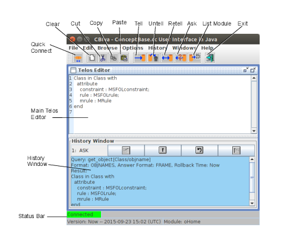
Figure 8.1: Main Window of CBIva
The main window consists of a menu bar, a tool bar with a button panel, the area for subwindows and a status bar. The first sub window (Telos editor) contains the history window, which records all operations for later reuse. In the following, each component of the user interface is explained.
The tool bar is the button panel below the menu bar. All buttons have tool tips, i.e. small messages that show the meaning of these buttons. The tool tips appear, if you move your mouse pointer over the button and do not move your mouse for about one second. The buttons are shortcuts for some operations that are frequently used and are also available in the menu. The operations apply to the Telos Editor which has currently the focus.
The toolbar has button for the most frequent operations of CBIva. The menu bar offers the complete set of operations including options to open other windows such as CBGraph (see section 8.2).
The preferred way to start a CBserver from CBIva is to use the ’Start CBserver’ from the File menu. It provides an output window for the trace messages of the CBserver, but this window is only visible if the trace mode is set to ’minimal’ or higher. Disconnecting from the CBserver will not stop it. It has to be stopped explictly or CBIva will stop it if it is shut down itself. The ’Quick Connect’ button of the toolbar provides a simplified way to start a local CBserver. It does not ask for CBserver parameters. Instead, the default values are used for all parameters except that the server mode is set to ’slave’ and multi-user mode is disabled. This causes the CBserver to shutdown whenever the last connected client disconnects from it.
You can move the tool bar outside the main window or display it in vertical form, if you click on the leftmost area of the tool bar and drag it to another place.
The status bar contains some fields that display general information about the status of the application.
The field for the current version shall display the current time if the version is set to ’Now’. If set to a rollback time in the past, it displays both the version name and the time associated to the version. It will then also hight the background of the text field to make the user aware that queries are evaluated against a past state of the database.
The Telos Editor is an editable text area, where you can edit Telos frames. The operations can be executed from the menu bar or the buttons in the tool bar. Furthermore, the text area has a popup menu on the right mouse button with the following items.
If the Telos editor window is empty, then you can drag and drop Telos text files (file type *.sml or *.sml.txt) into it. CBIva will open the file and paste the content into the Telos editor window. This function requires that the option ’Show Line Numbers’ is enabled (see section 8.1.2). You can also drag and drop URLs pointing to publicly accessible Telos text files.
The text in the Telos editor window is typically a sequence of Telos frames. When you press the ’Tell’ button, the text is sent to the CBserver and processed there by the ’TELL’ method of the CBserver. This is a single transaction which may fail or succeed.
You can use the string "{---}" in the text window to indicate that the frames should be told in multiple transactions. Consider the example:
Shop in Class end
Guest in Class with
attribute
dept: Shop
end
{---}
GuestEmployee in Class isA Guest,Employee end
Activating the ’Tell’ button instructs CBIva to split the text into two parts and tell them in two separate transactions to the CBserver. This feature is useful when some parts contain meta formulas (see section 2.2.9) that first need to be compiled before they are used in subsequent parts of the whole text. If you do not use meta formulas, then you can omit this feature.
The history window is part of the main Telos editor. It stores all operations and their results, so that they can later be used again. The buttons scroll the history back or forward, copy the text into the Telos editor or redo the operation in the history window (see figure 8.2). If the current operation is an “ASK”, then a single click on the copy-button will copy the query to the Telos Editor, and a double click will copy the result of the query. The size of the history window can be reduced by using the slider bar between the Telos editor and the history window.
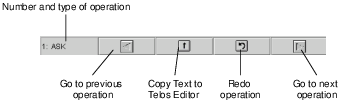
Figure 8.2: Buttons of the History Window
This dialog displays the instances of a class. The class is entered in the text field. When you hit return or press the “OK” button, the instances of this class will displayed in the listbox.
If you double click on an item in the listbox, the instances of this item will be displayed. The frame of a selected item can be loaded into the Telos editor by clicking the “Telos Editor” button. A history of already displayed classes is stored in the upper right selection list box. The “Cancel” button closes the dialog.
The Frame Browser (see figure 8.3) shows all information relevant to one object in one window. The window contains several subwindows with list boxes that show super- and subclasses, the classes, the instances, attributes and objects refering this object. In the center of the window, a small window with the object itself is shown. To view the attributes of the object, you must first select the attribute category in the subwindow “Attribute Classes”.
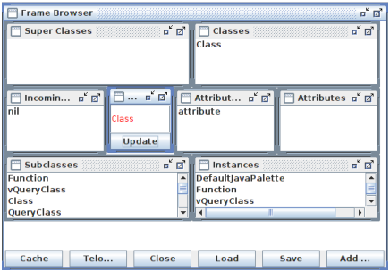
Figure 8.3: Frame Browser
The Frame Browser can be used with and without a connection to a CBserver. If it is not connected, it retrieves the information out of a local cache, which can be loaded from a file by using the “Load” button. The file has to be plain text file with Telos frames. All objects in the cache can be saved into a text file as Telos frames with the “Save” button. The contents of the cache can be viewed with the “Cache” button. The result of a query can be added to the cache by using the “Add query result” button.
The button “Telos Editor” inserts the Telos frame of the current object into the Telos Editor.
This dialog displays all visible queries6 stored in the current object base (see figure 8.4). From the list box, you can select a query and “ask” it or load its definition into the Telos editor.
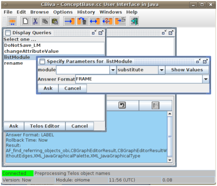
Figure 8.4: Display queries dialog
If you “ask” a generic query class with parameter, another dialog will ask you to specify the parameters. For each parameter, you can specify whether the value entered should be used as “substitute” for the parameter or as a “specialization” of the parameter class (see section 2.3). You can select a value for the parameter from the drop-down list if you have clicked on the “Show Values” button. Note that this list might be very long. Especially for the predefined queries it usually returns all objects in the database as any object can be used as a parameter for these queries.
This dialog is similar to the previous dialog but displays instances of Function. Note that functions are formally special queries. Consequently, the dialogs for functions and queries are pretty much the same. The separation into two dialogs serves quicker handling.
The Query Editor (see figure 8.5) allows the interactive definition of queries. The name of the query is entered in the upper left text field, the super class in the upper right field. After you have entered this information, the list box “Retrieved Attributes” will be filled with all available attributes.
Now, you can select the attributes you want to have in the result. For selection of more than one attribute, you must press the CTRL key and select the attribute with a mouse click at the same time. All attributes can be deselected by the popup menu.
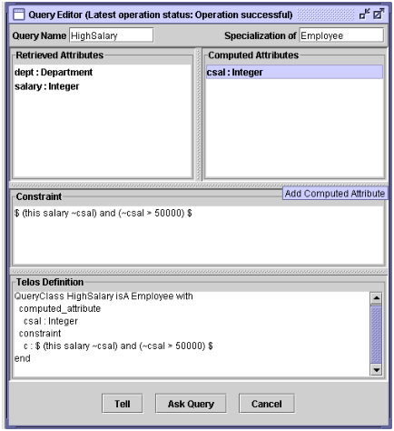
Figure 8.5: Query Editor
In the right listbox you can add computed attributes. The right mouse button brings up a popup menu, which lets you add or delete an attribute.
In the text area below the two list boxes, you can add a constraint in the usual CBQL syntax. The constraint must be enclosed in $ signs.
The text area below, shows the Telos definition of the query and is updated after every change you have made. If your query is finished, you can press the “Ask query” to test the query, i.e. it is told temporarely and the results are shown in separate window. If you are satisfied with the result you can press the Tell button to store the query in the object base.
The Tree browser (see figure 8.6) displays the super classes, classes and attributes of an object in a tree. To start the tree browser, you must mark an object in the Telos editor and select the item “View Object as Tree” from the popup menu or the Edit menu.
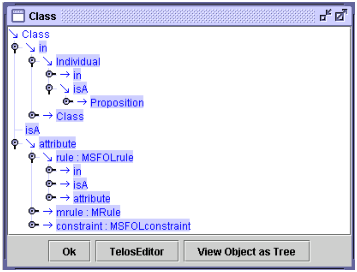
Figure 8.6: Tree Browser
To expand an item, just double click on the icon. If you mark an object name in the tree, you can load into the Telos editor with the “Telos Editor” button or open a new tree browser with the button “View Object as Tree”.
The CBGraph Editor is an advanced graphical modelling tool that supports the browsing and editing of Telos models. It supports user-definable graphical types, i.e. objects may be visualized by dedicated graphical layouts. In addition to predefined graphical types, the user can add his/her own graphical types by modifying and adding certain objects in the knowledge base. Furthermore, the standard components can be replaced by own classes implementing specific application-dependent behaviour.
In the following, we first give an overview of CBGraph application and then present the main components and functions of CBGraph. Details about the use of graphical types can be found in Appendix C. An example for the definition of graphical types of the Entity-Relationship model is given in Appendix D.2.
The CBGraph Editor is entirely written in Java. It can therefore be used on any platform with Java 1.4 or compatible successors of Java 1.4. CBGraph is integrated with CBIva, i.e. Telos frames of objects shown in CBGraph can be loaded directly into a Telos editor and vice versa. CBGraph allows to open several ’internal windows’ in its main window. Each internal window has a separate connection to a CBserver. Thus, within a CBGraph you can establish multiple connections to the same CBserver or even to different servers.
The communication with the CBserver is done using pre-defined ConceptBase.cc queries and a special XML-based answer format. CBGraph requests information about the objects (names, attributes, etc.) but also about their graphical type.
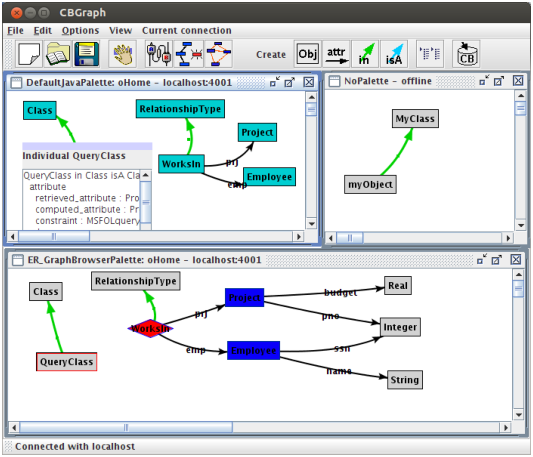
Figure 8.7: CBGraph with three internal windows
Figure 8.7 gives an overview of the CBGraph Editor. Three internal windows have been opened, the two windows on the left have been connected with the same server running on “localhost”, port 4001. The small window in the upper right corner is not connected to a server, but a few objects have been created. The title of the internal windows displays the graphical palette and the current module (if connected to a ConceptBase server) plus the connection status (either ’offline’ or the hostname and portnumber of the ConceptBase server). The content of an internal window is a graphical view on the database module of the ConceptBase server it is connected to. It is possible that different internal windows connect to different ConceptBase servers, though this is not a typical use of CBGraph. If you start CBGraph from CBIva, then you can only start a single instance of it. However, you can start any number of CBGraph instances via the ’cbgraph’ command (see below).
The two left internal windows of figure 8.7 are connected to the same server and show the same model but in different representations. This is caused by the fact, that for the upper window, the default graphical palette has been chosen, and for the lower window, a customized graphical palette specifically designed for the ER model has been selected (see appendix D.2 and C).
Furthermore, you can notice that the object “QueryClass” is represented by two different components. In the upper view, the detailed component view has been activated by a double-click on the object. It shows the Telos frame of the object. By a double-click on the title bar of this component, one can switch back to the default view of this object. Thus, each object can be shown by a small component (the default view) and a large component which gives more detailed information. Components are in this context specific Java objects, namely instances of javax.swing.JComponent. Thus, different components can be provided to represent an object (e.g., tables, buttons, text fields). You can implement your own component and integrate into CBGraph by extending a specific Java class. Details about the customization of CBGraph using graphical types and other components can be found in appendix C.
CBGraph can be used to edit Telos models (see section 8.2.9). It can also display implicit relationships between objects, which have been derived by rules or Telos axioms. For each type of relationship (instanstation, specializations, and attributes), one can choose to see only the explicit relationships or to see all relationships.
CBGraph can be invoked from CBIva via the menu item Browse → Graph Editor. If CBIva is connected with a CBserver, CBGraph will be connected to the same server and you will be prompted to enter the object name you want to start with, the name of a graphical palette, and the database module. The graphical palette is a Telos object which represents a set of graphical types which will be used to visualize Telos objects (see Appendix C). On startup, CBGraph retrieves all information about the graphical types from the CBserver. If CBIva has no connection with a server, CBGraph will be started without a connection and no internal window will be opened within CBGraph.
The connection to a CBserver can also be established via the File / Connect menu. The dialog box has two tabs. The first is for providing the host and port number number of the CBserver. The second is for providing the start object (default "Class") to be displayed, the graphical palette (pick from a list), and the database module (default "oHome").
The most comfortable way to start CBGraph is to double-click the graph file. It is equivalent to starting it via the command
cbgraph graph.gel
To do so, you need to configure your desktop according to the instructions at .
You can also start CBGraph as a stand-alone utility. The command
cbgraph [options]
will start an unconnected graph editor. You can interactively connect it to a running CBserver and open new windows to display graphs. More interesting is the use with a stored graph file, or several graph files, resp.:
cbgraph [options] filename [filename ...]
The format of the graph file is called Graph Editor Layout (GEL). It stores not only the layout of nodes and links but all other data necessary to edit the graph objects. In particular, it contains connection details of the CBserver module from which the graph was created. You can open more than one GEL file. Each will be loaded in its own frame.
The are a few options for the ’cbgraph’ command synchronizing the data stored in the graph file with the CBserver:
If you supply these options when calling CBGraph, it will also store them in the graph file when you store it. If you later call CBGraph with such a graph file, it will apply the stored options unless you specify new options in the command line. Hence, the options stored in the GEL file serve as new defaults for synchronizing the graph file with the CBserver.
Consider the two calls of CBGraph below. The first call sets the synchronization option to "+r", i.e. stores the module sources from the CBserver in the graph file when it is saved. The second call has no such option. Hence, it shall adopt the "+r" that was stored earlier in the graph file example.gel.
cbgraph +r example.gel
cbgraph example.gel
This behavior is useful if you keep the models in a persistent CBserver and want to use the module sources in the graph file only as a backup storage. It will then not tell the module sources from the graph file to the CBserver. The TELL operation can be very costly and is redundant if the CBserver anyway has all definitions already stored.
If you provide a filename (or several), then it must have been previously created by another graph editor, e.g. a graph editor started via CBIva. The above command will then display the graph stored in the graph file in an internal window and attempt to connect to the same CBserver that was active when the graph file was created. Hence, the graph file is a materialized view on the CBserver database that is visualized with ’cbgraph’. You edit a graph file with ’cbgraph’ like you are editing a drawing with a drawing tool. The only difference is that the graph is linked to the database.
If the CBserver module specified in the graph file is not accessible, the graph is still opened and you can edit it. You can then however not commit changes to the database or add new objects from the database. The CBGraph editor displays the connection status in the title of its internal window containing the graph. The hostname of a CBserver in a graph file is by default ’localhost’. Consequently, the graph editor will try to establish a connection to a CBserver running on localhost. If you want to connect to a remote CBserver, then you should specify in CBIva the full domain name of the CBserver, e.g. ’myhost.acme.com’. This long name will then be stored in the graph file that is created from a graph editor started via CBIva. Such graph files can then be copied to other computers and can be loaded with CBGraph to auto-connect to the remote CBserver specified in the graph file, provided that CBserver is running and accessible.
If no CBserver is accessible, CBGraph will attempt to start a local CBserver in the background provided that the graph file specifies "localhost" as hostname and the graph file contains module sources. In other cases, CBGraph switches to the offline mode. You can still change location and size of the graphical elements and store it back to the graph file. But you cannot delete objects and you cannot add objects to the database. The menus to show attributes, instances, and subclasses shall also not work.
An example on how to create and use graph files containing materialized database views is available in the CB-Forum at .
You can use the command line argument ’-host’ to override the hostname and portnumber encoded in the graph file. Assume a graph file ’graph1.gel’ was created from a a CBserver connection at ’localhost:4001’. Then, loading this graph file in a subsequent call will also connect to ’localhost:4001’. If you want to use another CBserver, e.g. running on ’myhost.acme.com:4002’, then call CBGraph from the command line as follows:
cbgraph +rw -host myhost.acme.com:4002 graph1.gel
Note that the CBserver must be running at the remote location before you enter the above command. When you subsequently save the graph file, it will have ’myhost.acme.com:4002’ encoded as its connection. The redirection also works in the reverse direction. So, assume that the graph file ’graph2.gel’ was created for a connection at ’myhost.acme.com:4002’. Then, the following command will redirect the connection to localhost:
cbgraph +rw -host localhost graph2.gel
The default port number is 4001. If no CBserver is running at ’localhost:4001’, then CBGraph shall start it in the background. Note that local CBservers can currently only be started on Linux hosts.
All explicit information is a proposition in ConceptBase (see section 2.1), including attributes, specializations and instantiations. You can move objects in the graph editor by pointing the cursor to the object’s label and then dragging it while keeping the left mouse button pressed. If a graph has many nodes and edges, then it is recommended to first click once on the node or edge to be dragged and then to drag it. This will switch off the anti-aliasing while dragging and thus be faster.
You may also want to select a group of objects and then move it as a whole. To do so either span a selection box with the left mouse button around the object to be selected, or press the "shift" key and select multiple objects individually. After a move, CBGraph shall redraw dependent edges that might be misplaced.
Some edges like instantiation links have no label in CBGraph, depending on the graphical type associated to it (see appendix C). In such cases, a small square dot is displayed on the edge. Click on this square dot to select the edge and to drag it. If the edge has a background color (see appendix C) different from the edge color, then the square dot is drawn in the background color.
Moving nodes and edges can sometimes lead to quite messy edge curves where the edge middle point is distant from the middle of the straight line between the source and destination of the edge. You can clean up such graphs by pressing the "shift" and "control" keys together and then click on a node whose edges shall be straightened.
The menu bar provides access to the most important functions of CBGraph.
If the graph was loaded from a GEL file and it was edited in the session, CBGraph shall ask the user whether to save the edited graph to the file when the user terminates CBGraph.
The operations in this menu have an effect on the selected objects. You can select an object by clicking on it with the left mouse button. Multiple selection is possible dragging a rectangular area while holding down the left mouse button or by holding the Shift-key and clicking on objects.
The options will be stored in a configuration file (see section 8.4) when you exit CBGraph.
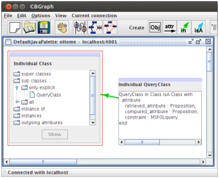
Figure 8.8: Component view of Telos objects: tree and frame
If an object is displayed in component view, one can switch back to the node view by double-clicking its title section.
CBGraph has an experimental layout algorithm that may be useful to reorganize the layout of a complex graph. The heuristic of the layout algorithm is rather simple and does not minimize link crossings.
These operations have effect on the current connection, i.e. the connection of currently activated internal window.
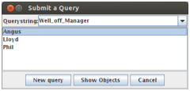
Figure 8.9: Query dialog
The tool bar (see figure 8.10) consists of a set of buttons that are mainly short cuts for some menu items. The right half of the tool bar provides buttons for the creation of Telos objects.
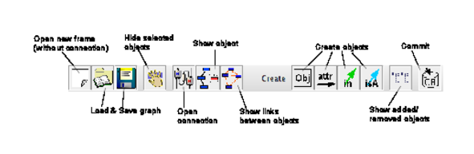
Figure 8.10: Tool Bar of CBGraph
$CB_HOME/lib/classes/cb.jar).
The popup menu is activated by a click on the right mouse while the cursor is located over an object.
CBGraph supports also the creation and deletion of Telos objects. A Telos object in the context of CBGraph is a proposition as described in chapter 2. As described there, there are four types of Telos objects:
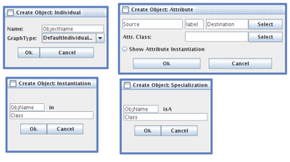
Figure 8.11: Create Object dialogs for Individuals, Attributes, Instantiations, and Specializations
For each object type, we provide a dialog to create this object type as shown in figure 8.11. This dialog is opened by clicking on one of the “Create” buttons in the tool bar, or by selecting an “Add ...” item from the popup menu (e.g, “Add instance” or “Add subclass”). If there are some objects selected in the current internal window, then the object names of these objects will be inserted into the text fields of the dialog in the order they have been selected (i.e., the first text field will contain the name of the object which has been selected first). Furthermore, if you move the cursor into a text field in the “Create Object” dialog and select an object in the graph, then the name of this object will be inserted into the text field.
As changes might lead to a temporary inconsistent state of the database, we do not execute the changes directly on the database. They are stored in an internal buffer in CBGraph and executed when you hit the “Commit” button in the tool bar.
If you have specified the attribute category, you can also select the attribute value from a listbox by clicking on the “Select” button next to the text field for the attribute value. The listbox will show all instances of the destination of the attribute category (e.g. all instances of Department for the category Employee!dept).
If you select the radio button “Show Attribute Instantiation” then CBGraph will also show the instantiation link for the attribute. For example, if you create a new attribute for John with the label JohnsDept in the attribute category Employee!dept, then the instantiation link between John!JohnsDept and Employee!dept will also be shown. As the graph gets quite confusing with too many links, this radio button is not selected by default.
Deletion of objects is also possible. As this operation should not be mixed up with the removal of an object from the current view, this operation is just available from the popup menu (item “Delete Object from Database”).
As you might make mistakes while editing the model, there is the possibility of undoing changes. The button “Show added/removed objects” list all objects that have been added or removed (since the last succesful commit or since the connection has been established). A screenshot of the dialog is shown in figure 8.12. The left list shows the objects that have been added, the right list shows the objects that have been removed. By clicking on the button “Re-Insert/Delete” object, the selected objects will be re-inserted in or deleted from the graph 8.
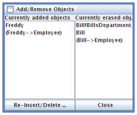
Figure 8.12: List of objects which have been added or removed
If you are satisfied with the changes you have done, you can click on the “Commit” button. Then, CBGraph will transform the objects to be added or removed into a list of Telos frames and send them to the server using the TELL, UNTELL, or RETELL operation. If the operation was successful, all explicit objects will be checked if they are still valid and if their graphical type has changed (as in the “Validate and update” operation from the “Current Connection” menu). If there is an error, the error messages of the server will be displayed in a message box. The internal buffer with the objects to add or remove will be not changed in this case.
To improve the performance of CBGraph, several caches are used. On the other hand, the use of a cache causes several problems which will be addressed in this section. In particular, the caches of CBGraph are not updated automatically if the corresponding data in the server is updated.
Graph files (extension ’gel’) are binary files that store the current state of a graph displayed in CBGraph. Since they are constructed from a ConceptBase database, they are a (materialized) view on the database. The view consists of the nodes and links displayed in the window, their positions, their graphical types, the hostname, portnumber and module from which the graph was created, the size of the window, its background color and image, and the window’s zoom factor. You can thus save the current state of your graphical view in the gel file and load it in a subsequent session with CBGraph to continue editing it, much like with a drawing tool.
The graph file stores serialized Java objects in the following sequence
String title of the internal frame
Dimension size of the graph editor
Dimension size of the internal window
Dimension size of the drawing area of the internal window
Integer number of nodes (incl. edge objects)
{ node1
Rectangle bound of node1
node2
Rectangle bound of node2
...
}
Integer number of edges
{ String source node of edge 1
String node object on the edge 1
String destination of edge 1
String source node of edge 2
String node object on the edge 2
String destination of edge 2
...
}
Color background color
Float zoomfactor
String hostname
String port number
String module context as absolute path
String long title of the graphical palette
String name of the graphical palette
Integer saveflag (bit0: HAS_IMAGE, bit1: HAS_SOURCE, bit2: HAS_PARAMS)
IF HAS_PARAMS
{ String[] params
}
IF HAS_SOURCE
{ String saved modules e.g. "mod1-mod2"
{ String source of module 1
String source of module 2
...
}
}
IF HAS_IMAGE
{ PNG image of the background image
}
Since edges are also objects in Telos, the nodes stored in the graph file include the edge node that represents the edge itself. The graph file stores complex information about the nodes including the graphical types of the nodes, their dimension and location. By default, the graph files stores the Telos module sources needed to manipulate the graph. The graph file stores the sources of all modules that are on the path from the root module System to the current module (the module that is active when the graph file is saved). The module System is not saved since it is typically not updated. Note that ConceptBase database can include a tree of module (see section 5.3). Hence, a graph file does in general not store the Telos sources of the complete database. If you create graph files for all leave modules of a database, then the combination of the graph files is completely containing the database as sources models. The extraction of Telos sources uses the builtin query listModule (see section 5.8). This is in most cases a faithful listing. However, there are rare cases when the extracted cannot be told to a CBserver. For example, if a module contains deductive rules that are essential for satisfying integrity constraints for objects defined in the same module, then a single TELL operation could fail bacause ConceptBase requires the deductive rules to be compiled. See section 5.8.1 for more details.
If you specified command line parameters like "+r", "-r", "+rw", or "-rw" at the start of CBGraph, then these parameters are stored in the GEL file.
The background image is not stored as a serializable Java object but as a PNG image using the ImageIO class of Java. It is always stored as the last element since the input routines shall read it until the end of the file. Note that some strings can be just null.
In this section we demonstrate the usage of the ConceptBase.cc User Interface, by involving an example model. It consists of a few classes including Employee, Department, Manager. The class Employee has the attributes name, salary, dept, and boss. In order to create an instance of Employee one may specify the attributes salary, name, and dept. The attribute boss will be computed by the system using the bossrule. There is also a constraint which must be satisfied by all instances of the class Employee which specifies that no employee may earn more money than its boss. The Telos notation for this model is given in Appendix D.1.
To start a ConceptBase session, we use two terminal windows, one for the ConceptBase.cc server and one for the usage environment. We start the ConceptBase.cc server by typing the command
cbserver -port 4001 -d test
in a terminal window of, let us say machine alpha9. The parameter -port sets the port number under which the CBserver communicates to clients and the parameter -d specifies the name of the directory into which the CBserver internally stores objects persistently. Then, we start the usage environment with the command cbiva in the other window.
It is also possible to start the CBserver from the user interface. To do so, choose “Start CBserver” from the “File Menu” of CBIva (see section 8.1.2) and specify the parameters in the dialog which will be shown (see figure 8.13). The option Source Mode controls whether the CBserver accessing the database via the -d parameter (database maintained in binary files), or via the -db parameter (database maintained both in binary files and in source files). See section 6 for more details. Once the information has been entered via the OK button, the server process will be started and its output will be captured in a window. This output window provides also a button stop the server. If you started the server this way then you can skip the next section, as the user interface will be connected to the server automatically.
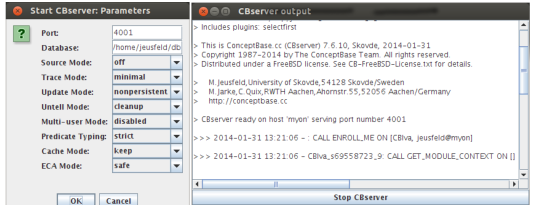
Figure 8.13: Start CBserver dialog and CBserver output window
By default, CBIva will automatically connect to a local or public CBserver when started. If you want to start a CBserver with dedicated parameters from CBNIva, then first select File/Disconnect and then establish a new connection between the ConceptBase.cc server and the user client CBIva. This is done by choosing the option Connect from the File menu of CBIva. An interaction window appears (see Figure 8.14) querying for the host name and the port number of the server (i.e. the number we have specified within the command cbserver -port 4001 -d test).
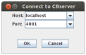
Figure 8.14: The connect-to-server dialog
The objects manipulated by ConceptBase.cc are persistently stored in a collection of external files, which reside in a directory called application or database10. The actual directory name of the database is supplied as the -d parameter of the command CBserver.
The -u parameter of the CBserver specifies whether updates are made persistent or are just kept in system memory temporarily. Use -u persistent for a update persistence or -u nonpersistent for a non persistent update mode 11.
The database can be modified interactively using the editor commands TELL/UNTELL. Another way of extending ConceptBase.cc databases is to load Telos objects (expressed in frame syntax) stored in plain text files with the extension *.sml. Call the menu item Load Model from the File Menu to add these objects to the database. In our example the database (directory) Employee was built interactively and can be found together with files containing the frames constituting the example in the directory
where you have to replace CB_HOME with the ConceptBase installation directory. The following files contain the objects of the Employee example expressed in frame syntax: Employee_Classes.sml, Employee_Instances.sml, Employee_Queries.sml. An alternative to interactively building a database is to start the server with an empty database (-d ⟨ newfile⟩ ) and then add the objects in these files by using Load Model. Note, that the *.sml extension may be omitted. During the load operation of external models, ConceptBase checks for syntactical and semantical correctness and reports all errors to the history window as it is done when updating the object base interactively using the editor. This protocol field collects all operations and errors reported since the beginning of the session.
To display all instances of an object, e.g. the class Employee, we invoke the Display Instance facility by selecting the item Display Instances from the menu bar. In the interaction window we specify Employee as object name. The instances of the class Employee are then displayed (see Figure 8.15).
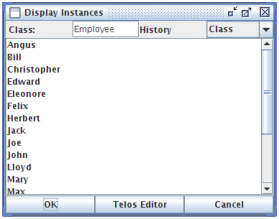
Figure 8.15: Display of Employee instances
After selecting a displayed instance we can load the frame representation of an instance to the Telos Editor or display further instances.
The Graph Editor is the preferred tool for browsing the objects managed by a CBserver. CBGraph is started by using the menu item “Graph Editor” from the “Browse” menu of CBIva. Select Employee as the initial object to be shown in CBGraph. After starting CBGraph, it will open an internal frame, connect it with the current server, and load the Employee object.
The CBGraph Editor (described in detail in section 8.2) allows you to display arbitrary objects from the current onceptBase server. Then, we select the Employee object and choose the Sub classes option from the context menu available via the right mouse-button. We choose to only display explicit subclasses from the submenu and select the Manager object. The displayed graph is now expanded (figure 8.16).
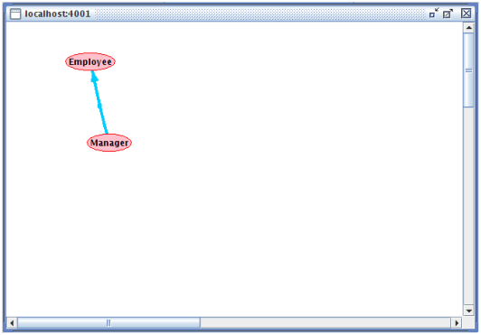
Figure 8.16: The resulting graph after expanding the node Employee with subclasses
Now we expand the node Manager, a subclass of Employee, by choosing the menu item Instances from the popup menu for Manager. We select the menu item “Show all” to display all instances of Manager. The resulting graph is shown in figure 8.17.
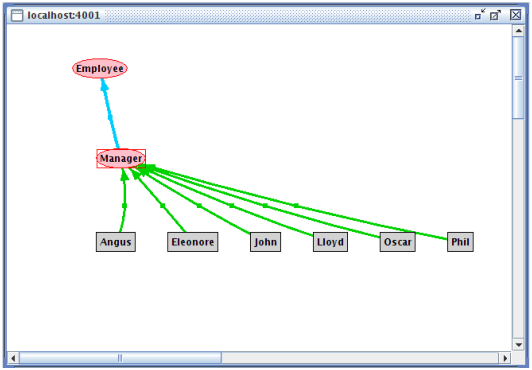
Figure 8.17: The resulting graph after expanding with the instances of Manager
Note that different object types are represented by different graphical objects. The instances of Manager are shown only as grey rectangles, because they are normal individual objects. The nodes Manager, Salesman, Employee etc. are shown as ovals, since these nodes are instances of the system class SimpleClass (see for a full description of graphical object semantics: Appendix C).
One can move nodes and links by selecting a node or a link and then holding down the left mouse button while moving the cursor to a different position. When the button is released the selected object will be located at the current position and the related links are redisplayed. Selection and movement of multiple nodes and links is also possible. Nodes and linkes are selected by clicking on its label, e.g. Manager in figure 8.17. Some links like the blue specialization link in the figure have no label. Then one can select the link by clicking on the small square dot in the middle of the link. This square dot is by default invisible. It becomes visible when you click on any other node or link label in the graph, e.g. on Manager.
We can further experiment with CBGraph by showing the classes and attributes of Employee. The classes of Employee are shown by selecting “Instance of” from the popup menu. Attributes of an object can be shown by selecting “Outgoing attributes” from the menu. The next submenu will show all attribute classes that apply for the current object. In our example, Employee is an instance of Class. Therefore, it has the attribute classes constraint, rule, and mrule (see figure 8.18). The attribute class Attribute applies to all objects as in Telos any kind of object can have an attribute. Furthermore, all attributes of an object are member of the attribute class Attribute. As we want to see all attributes, we select this attribute class and select “Show all” from the next submenu. All attributes and their values will be shown in CBGraph.
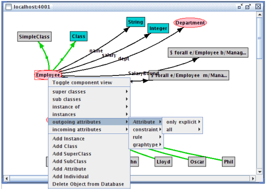
Figure 8.18: The graph after expanding it with the classes and the attributes of the class Employee
CBGraph can also show implicit relationships between objects,
e.g. relationships deduced by rules or the Telos axioms.
For example, if we select the object John and select “Instance of”
from the popup menu, we can display the implicit classes of John
by selecting “All” from the next submenu. As John is an instance of
Manager and Manager is a subclass of Employee, John is also an instance
of Employee. As there is no explicit object John->Employee,
the instantiation link between John and Employee will be represented as
an implicit link, i.e. a dashed line (see figure 8.19).
The same applies also to attribute links. For example, the employee Herbert has an implicit boss-attribute to Phil. This can be shown by selecting “Outgoing attributes” → “boss” → “All” → “Phil” from the popup menu. Note, that the submenu “All” for the attribute class Attribute will be always empty as only explicit attributes can be displayed in this category.
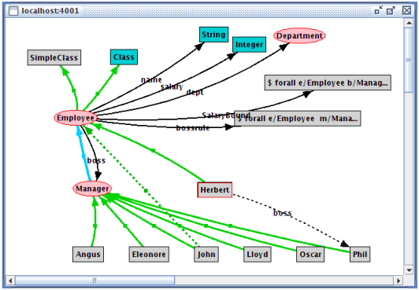
Figure 8.19: The graph showing implicit instantiation and attribute links
Before we are able to edit a Telos object, we have to load its frame representation in to the Telos Editor field first. For loading a Telos object to the Editor field, we choose the Telos Editor Button from either the Display Queries oder Display Instances Browsing facilities or the Load Frame button from the ConceptBaseWorkbench window (see Figure 8.20).
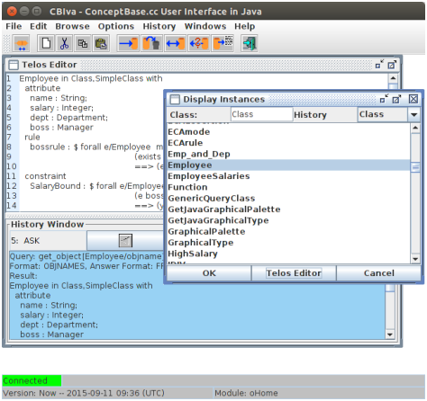
Figure 8.20: The TelosEditor Field with the object Employee
Now we add an additional attribute, e.g. education, to the class Employee (for the description of the Telos syntax see Appendix A). We have added the line education : String as shown in figure 8.21. To demonstrate error reports from the ConceptBase.cc user interface and how to correct them, we have made mistakes in the syntax notation of the added attribute.
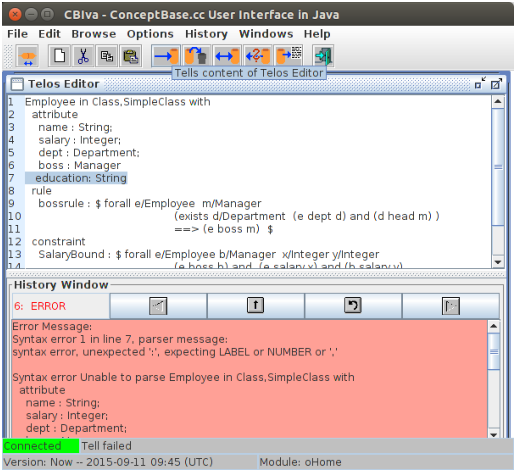
Figure 8.21: Trying to add an attribute to the class Employee with the resulting error report
By clicking the left mouse button on the Tell icon, the content of the editor is told to the ConceptBase server. Syntactical and semantical correctness is checked and the detected errors are reported to the Protocol field. The report resulting from our mistakes by specifying the new attribute is also shown in figure 8.21. Note, that this syntax error would have been already detected at the client side without interaction with the server if we would have enabled the option “Pre-parse Telos Frames” in the options menu.
We correct the error by adding a semicolon to the previous line and choose the Tell symbol again. This time, since there are no further mistakes, the additional attribute is added to the class Employee.
Now we can choose again the item Outgoing Attributes from the popup of the Graph Editor window for the node Employee. If we select “Show all” attributes of the attribute class “Attribute” the new attribute will NOT be shown. CBGraph uses an internal cache which will only be updated on request. Therefore, we select the object Employee and select “Validate and update selected objects” from the menu “Current connection”. The cache for the object Employee will be emptied. Now, showing all attributes should add the new attribute education to the graph.
Telos objects can also be edited graphically in CBGraph. In our example, we want to add another attribute named address to the class Employee. The attribute destination of this attribute should be a new class called Address.
First, we select the object Employee and click on the “Create Attribute” button in the tool bar or select “Add Attribute” operation from the tool bar. As we have selected the Employee object, it should be already inserted as source of the attribute. We have to type the label (address) and the destination of the attribute in the text fields (see figure 8.22). As this attribute does not belong to a specific attribute category (it is just an attribute), we do not have to specify an attribute class.
By clicking on the Ok button, CBGraph will create a new object for Address represented by the default graphical type (a gray box). Then, it will create the attribute link from Employee to Address with the label address. The result is shown in figure 8.23.
Now, we want to declare Address as an instance of Class. Therefore, we select Address, hold down the Shift-key and select Class. Both objects should be selected now. We click on the “Create Instantiation” button and a dialog as shown in figure 8.23 should appear.
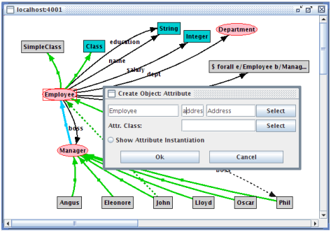
Figure 8.22: Adding an attribute to Employee
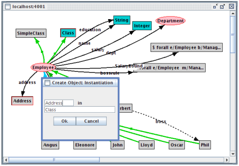
Figure 8.23: Adding an instantiation link between Address and Class
As we have selected the objects in the correct way, the dialog already specifies the object we want to create (Address in Class) and we can click directly on Ok. The new instantiation link will be added to the graph.
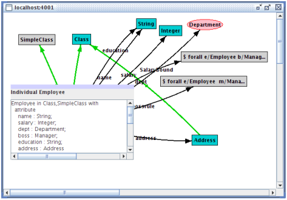
Figure 8.24: The resulting graph after commit
Now, we are satisfied with our changes and want to commit them in the server. So far, the changes have been stored in an internal buffer of CBGraph and have not been sent to the server. We click on the “Commit” button in the upper right corner. CBGraph generates now Telos frames for the added objects and sends them to the server. If we did not make an error, all changes should be consistent and accepted by the server. This is shown by the appearing message box “Changes committed”. If an error occurs, an error message will displayed instead. The graphical editing is an alternative to the textual editing via the Telos Editor. It is appropriate for incremental changes to a model. Larger changes should better be made via the Telos Editor or even to an external text file that is loaded via the File / Load Model facility of CBIva. If the changes were successfully told to the CBserver, CBGraph reloads the information of every visible object. In particular, the graphical types of the objects will be updated. As the object Address is declared as instance of Class, it will get the graphical type of a class, i.e. a turquoise box. The result is shown in figure 8.24. The object Employee is shown in the detailed component view, in this case the frame representation of the object is shown. As you can see, the attribute address is now also visible in the frame representation.
Lets assume that we need to ask the server for all Employees working for Angus. We open a new Telos Editor (see menu item Browse). Then, we define a new query class (AngusEmployees) as follows:
AngusEmployees in QueryClass isA Employee with
constraint
c: $ (this boss Angus) $
end
We can tell this query, so that it is stored in ConceptBase.cc and we can reuse it later, or we can just ask the query, i.e. the query will told temporarily and evaluated. If we ask the query, the answer is displayed in the Telos Editor field as well as in the history window. Figure 8.25 shows the CBIva with the query class and the answer.
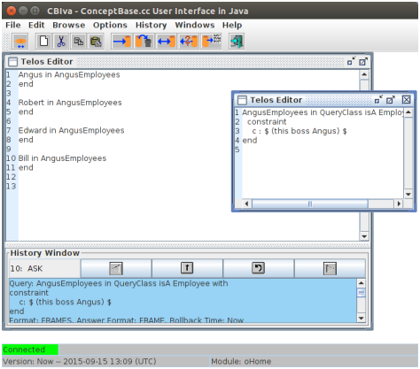
Figure 8.25: Query class and its answer
We can also execute this query from CBGraph. From the menu “Current connection” we select “Query to server”. A dialog we ask for the name of query class. If we have told the example query, we can type AngusEmployees in the text field and hit on the “Submit Query”. The query will be evaluated and the objects in the result will be shown in the list box. We can select the objects which should be added to the graph (multiple selection with the Shift-key is possible) and click on the “Show objects” button. The selected objects will be added to the graph, however with no connection to existing objects.
The configuration options are stored in a file “.CBjavaInterface” in
the home directory of the user. The settings are stored automatically on exit.
You can edit the file manually with a normal text editor. It contains
name-value pairs in the format variable=value. All variables
can also be modified CBIva via the "Options" menu.
frame” or “tree”).
<object> --> <objectname> <objectname> <inspec> <isaspec>
<withspec> <endspec>
| <objectname> <inspec> <isaspec> <withspec> <endspec>
<objectname> --> ( <objectname> )
| <label> <bindings>
| <objectname> SELECTOR1 <label>
| <objectname> SELECTOR2 <objectname>
<bindings> --> <empty>
| [ <bindinglist> ]
<bindinglist> --> <singlebinding>
| <bindinglist> , <singlebinding>
<singlebinding> --> <objectname> / <label>
| <label> : <objectname>
<inspec> --> <empty>
| in <classlist>
<isaspec> --> <empty>
| isA <classlist>
<classlist> --> <objectname>
| <objectname> , <classlist>
<withspec> --> <empty>
| with <decllist>
<decllist> --> <empty>
| <declaration>
| <decllist> <declaration>
<declaration> --> <attrcatlist> <proplist>
<attrcatlist> --> <label>
| <attrcatlist> , <label>
<proplist> --> <property>
| <proplist> ; <property>
<property> --> <label> : <objectname>
| <label> : <complexref>
| <label> : <enumeration>
| <label> : <pathexpression>
<complexref> --> <objectname> <withspec> <endspec>
<enumeration> --> [ <classlist> ]
<pathexpression>--> <objectname> SELECTORB <pathargument>
<pathargument> --> <label>
| <label> SELECTORB <pathargument>
| <restriction>
| <restriction> SELECTORB <pathargument>
<restriction> --> ( <label> : <enumeration> )
| ( <label> : <pathexpression> )
| ( <label> : <objectname> )
<endspec> --> end
<label> --> ALPHANUM
| LABEL
| NUMBER
Note: ConceptBase represents internally object identifiers as id_NUMBER where NUMBER is a sequence of digits. For this reason, labels matching this pattern are forbidden in the Telos frame syntax.
In the definitions below the term literal is a synonym for predicate.
<assertion> --> <rule>
| <constraint>
<rule> --> forall <variableBindList> ( <formula> ) ==> <literal>
| <formula> ==> <literal>
| <literal>
<constraint> --> <formula>
<formula> --> exists <variableBindList> <formula>
| forall <variableBindList> <formula>
| not <formula>
| <formula> <==> <formula>
| <formula> ==> <formula>
| <formula> and <formula>
| <formula> or <formula>
| ( <formula> )
| <literal>
| <literal2>
<variableBindList>--> <variableBind> <variableBindList>
| <variableBind>
<variableBind> --> <varList> / <objectname>
| <varList> / [ <objList> ]
| ALPHANUM / <selectExpB>
<varList> --> ALPHANUM , <varList>
| ALPHANUM
<objectname> --> <label>
| <selectExpA>
| <deriveExp>
<label> --> ALPHANUM
| LABEL
| NUMBER
<literal> --> FUNCTOR ( <literalArgList> )
| ( <literalArg> <infixSymbol> <literalArg> )
| ( <arExpr> COMPSYMBOL <arExpr> )
| ( <literalArg> <label>/<label> <literalArg> )
| BOOLEAN
<literal2> --> ( <label> in <selectExpB> )
| ( <selectExpA> in <selectExpB> )
| ( <selectExpB> isA <selectExpB> )
| ( <selectExpB> = <selectExpB> )
<infixSymbol> --> INFIXSYMBOL
| <label>
<literalArgList>--> <literalArg> , <literalArgList>
| <literalArg>
<literalArg> --> <objectname>
<arExpr> --> <arExpr> + <arTerm>
| <arExpr> - <arTerm>
| <arTerm>
<arTerm> --> <arTerm> * <arFactor>
| <arTerm> / <arFactor>
| <arFactor>
<arFactor> --> ( <arExpr> )
| <objectname>
| <funExpr>
<selectExpA> --> <selectExpA> <selector> <selectExpA>
| ( <selectExpA> )
| <label>
<selector> --> SELECTOR1
| SELECTOR2
<deriveExp> --> <label> [ <deriveExpList> ]
| <label [ <literalArgList> ]
| <funExpr>
<funExpr> --> <label>()
| <label>(<literalArgList>)
<deriveExpList> --> <singleExp> , <deriveExpList>
| <singleExp>
<singleExp> --> <literalArg> / <label>
| <label> : <label>
<selectExpB> --> <label> SELECTORB <label>
| <label> SELECTORB <selectExpB2>
| <label> SELECTORB <restriction>
<selectExpB2> --> <selectExpB>
| <restriction> SELECTORB <label>
| <restriction> SELECTORB <selectExpB2>
| <restriction> SELECTORB <restriction>
<restriction> --> ( <label> : <label> )
| ( <label> : <selectExpA> )
| ( <label> : <selectExpB> )
| ( <label> : [ <objList> ] )
<objList> --> <objectname> , <objList>
| <objectname>
The event, condition and actions of an ECArule are specified as a special assertion. Therefore, the syntax is an extension of the normal assertion language, shown in the section before.
<ecarule> --> <variableBindList>
ON [TRANSACTIONAL] <ecaevent> [FOR ALPHANUM]
<ifclause> <ecacondition>
DO <actionlist>
<optelseaction>
<ifclause> --> IF
| IFNEW
<ecaevent> --> <eventop>(<literal>)
| <eventop> <literal>
| <askop>(<literalArg>)
| <askop> <literalArg>
<eventop> --> Tell | tell
| Untell | untell
<askop> --> Ask | ask
<ecacondition> --> <condformula>
| true
| false
<condformula> --> <literal>
| not <condformula>
| <condformula> and <condformula>
| <condformula> or <condformula>
| ( <condformula> )
<actionlist> --> <action> , <actionlist>
| <action>
<action> --> <actionop>(<literal>)
| <actionop> <literal>
| noop
| reject
<actionop> --> Tell | tell
| Untell | untell
| Retell | retell
| Ask | ask
| Call | call | CALL
| Raise | raise
<optelseaction> --> ELSE <actionlist>
| <empty>
ALPHANUM --> [a-z|A-Z|0-9|ACCENTCHAR]+
ACCENTCHAR --> umlauts and accents that are included in the 8bit ASCII code
LABEL --> sequences of characters excluding .|'"$:;!^->=,()[]{}/ and
special characters like newlines, tabs, backspace, blanks
| any sequence of characters enclosed in double quotes ("),
a double quote must be escaped by \ which must be escaped by \
| any sequence of characters enclosed in $ except $,
which must be escaped by \
NUMBER --> REAL | INTEGER
REAL --> [-]?([0-9]+\.[0-9]*|[0-9]*\.[0-9]+)([Ee][-+]?[0-9]+)?
INTEGER --> [-]?[0-9]+
BOOLEAN --> TRUE | FALSE
FUNCTOR --> From | To | A | Ai | AL | In
| Isa | Label | P | LT | GT | LE | GE | EQ | NE | IDENTICAL
| UNIFIES | Known
COMPSYMBOL --> < | > | <= | >= | = | <> | == | \=
INFIXSYMBOL --> COMPSYMBOL | in | isA
SELECTOR1 --> "!" | "^"
SELECTOR2 --> "->"| "=>"
SELECTORB --> "." | "|"
This format is only internally used to represent Telos frames as Prolog terms. It is included only for historical reasons.
<SMLfragment> --> SMLfragment(<what> , <in_omega> , <in> , <isa> , <with> )
<what> --> what(<object> )
<in_omega> --> in_omega(nil)
| in_omega([<classlist> ])
<in> --> in(nil)
| in([<classlist> ])
<isa> --> isa(nil)
| isa([<classlist> ])
<with> --> with(nil)
| with([<attrdecllist> ])
<classlist> --> class(<object> )
| <classlist> , class(<object> )
<attrdecllist> --> attrdecl(<attrcategorylist> , <propertylist> )
| <attrdecllist> , attrdecl(<attrcategorylist> , <propertylist> )
<attrcategorylist>--> nil
| [ <labellist> ]
<propertylist> --> nil
| [ <propertylist2> ]
<propertylist2>--> property(<label> , <propertyvalue> )
| <propertylist2> , property(<label> , <propertyvalue> )
<propertyvalue>--> <object>
| <selectExpB>
| enumeration( [ <classlist> ] )
| [ <SMLfragment> ]
<selectExpB> --> selectExpB( <restriction> , <selectOperator> , <selectExpB> )
| selectExpB( <restriction> , <selectOperator> , <object> )
| selectExpB( <object> , <selectOperator> , <selectExpB> )
| selectExpB( <object> , <selectOperator> , <object> )
<restriction> --> restriction( <label> , <selectExpB> )
| restriction( <label> , enumeration( [ <classlist> ] ) )
| restriction( <label> , <object> )
<selectOperator> --> dot
| bar
<labellist> --> <label>
| <labellist> , <label>
<label> --> ALPHANUM
| LABEL
| NUMBER
<object> --> derive([ <substlist> ])
| <selectexp>
<substlist> --> <singlesubst>
| <substlist> , <singlesubst>
<singlesubst> --> substitute(<object> , <label> )
| specialize(<label> , <label> )
<selectexp> --> <label>
| select(<selectexp> , SELECTOR1, <label> )
| select(<selectexp> , SELECTOR2, <selectexp> )
O-Telos is the variant of Telos (originally defined by John Mylopoulos, Alex Borgida, Manolis Koubarakis and others) that is used by the ConceptBase system. This list is the complete set of pre-defined axioms of O-Telos and thus defines the semantics of a O-Telos database (without user-defined rules and constraints). The subsequent axioms are written in a first-order logic syntax but all can be converted to Datalog with negation (though there is some choice in the conversion wrt. mapping to rules or constraints).
The following axioms are taken from papers on Telos (i.e. formulated by Mylopoulos, Borgida, Koubarakis, Stanley and Greenspan): axioms 2, 3, 4, 10, 12, 13, 14. Axiom 1 is probably also in an earlier Telos paper though we could not immediately find it there. The axioms 15 and 16 are similar to the structural ISA constraint of Taxis [MBW80] for attributes. In O-Telos, we do however not inherit attributes downward to subclasses but rather constrain refined attributes at subclasses in the sense of co-variance. Moreover, attributes in O-Telos are objects as well, hence the notion of specialization is more complicated than for the Taxis case. Axiom 17 is needed to be able to uniquely match an attribution predicate to a most specific attribute. This is utilized in the compilation of logical expressions, in particular for generating triggers that only evaluate the affected logical expressions when an update occurs. The remaining axioms 18-28 are also specific to O-Telos. They define the five predefined objects in O-Telos. Axiom 29 takes care that objects cannot refer via its source/destination parts to objects that were defined later than the object itself. This virtually forbids to define an link between two objects when one of the objects is not yet defined. While this sounds natural, we need to posutlate it. Otherwise, we can’t guarantee that we can refer to any object by a name. Axioms 30 and 31 are used to transfer instantiation and attribution facts from the extensional databases to the intensional database. They have more a technical purpose in the mapping of logical expressions to Datalog.
While O-Telos has just five predefined objects and 31 predefined axioms, the ConceptBase system has many more pre-defined objects to provide a better modeling experience and for representing concepts like query classes, active rules, functions etc. They are in a way also predefined but are less essential in understanding the foundations. So, O-Telos is the foundation of ConceptBase but ConceptBase has more pre-defined constructs than those mentioned in the axioms of O-Telos.
ConceptBase allows to add user-defined rules and constraints. The semantics of an O-Telos database including such rules and constraints is the perfect model of the deductive database with the P(o,x,n,y) as the only extensional predicate and all axioms and user-defined rules/constraints as deductive rules. Note that integrity constraints can be rewritten to deductive rules deriving the predicate inconsistent.
This list of axioms is excerpted from M.A. Jeusfeld: Änderungskontrolle in deduktiven Objektbanken. Dissertation Universität Passau, Germany, 1992. Available as Volume DISKI-19 from INFIX-Verlag, St. Augustin, Germany or via (in German).
Axioms 19-21 have been corrected after Christoph Radig found an example that led to the undesired instantiation of an individual object to #Inst or #Spec, respectively.
The concept of a graphical type enables the specification of an external graphical presentation for ConceptBase objects. The graphical type is declared using a special pre-defined attribute category. An application program then uses this information to determine the graphical presentation of an object.
The next subsection introduces the basic concepts behind graphical types, while section C.2 presents the standard graphical type definitions for the ConceptBase Graph Editor. Section C.3 describes the definition of application-specific types.
A specific graphical type is defined as an instance of the object GraphicalType. CBGraph uses the subclass JavaGraphicalType. Instances of this class specify a graphical representation of an object by defining graphical attributes such as shape, color, line thickness, font etc. Since the actual attributes and their admissible value depend on the used visualization tool, the definition of GraphicalType looks very simple.
GraphicalType in Class
end
The declaration of a graphical type for a concrete object is done by using the attribute graphtype which is defined for Proposition and therefore available for all objects:
Proposition with
attribute
graphtype : GraphicalType
end
The attribute can be defined explicitely for an object or can be specified by using a deductive rule (see section C.2 for an example). One can attach a priority value to each graphical type. If there multiple graphtype attributes defined for one object, the graphical type with the highest priority value will be used by CBGraph.
Many modeling applications require multiple notations to provide different perspectives on the same set of objects. Each perspective emphasizes a specific aspect of the world, such as the data-oriented, the process-oriented and the behavior-oriented viewpoint, and uses an aspect-specific notation. A graphical notation (as e.g. the Entity-Relationship diagram) typically consists of a set of different graphical symbols (as e.g. diamonds, rectangles, and lines). A graphical palette is used to combine the set of graphical types that together form a notation:
Individual GraphicalPalette in Class with
attribute
contains : GraphicalType;
default : GraphicalType
end
In such a setting the same object may participate in different perspectives. ConceptBase offers the possibility to specify multiple graphical types for the same object. A tool can then provide different graphical views on the same object. To get the desired graphical type of an object under a specific palette, an application program specifies the name of the actual graphical palette as answer format when querying the ConceptBase server. Although this mechanism is available for arbitrary application programs we restrict our description to the CBGraph Editor.
The default specification serves as a catch all: an answer object, for which none of the graphical types of the current palette is specified, is presented using the default graphical type of that palette.
CBGraph is implemented using the Java Programming Language. It is entirely based on the Swing toolkit (package javax.swing). The graphical objects shown in CBGraph are all instances of the class JComponent in the javax.swing package. User-defined representations of objects can be provided by overwriting a specific class of CBGraph (details are given below).
Based on our experience with a legacy graph browser for X11, we have extended the graphical type model for the CBGraph Editor. First, the class GraphicalType has been specialized by a class JavaGraphicalType:
Class JavaGraphicalType isA GraphicalType with
attribute
implementedBy : String;
property : String;
priority : Integer
rule
rPriority : $ forall jgt/JavaGraphicalType (not (exists i/Integer
A_e(jgt,priority,i))) ==> A(jgt,priority,0) $
end
Individual DefaultIndividualGT in JavaGraphicalType with
property
bgcolor : "210,210,210";
textcolor : "0,0,0";
linecolor : "0,0,0";
shape : "i5.cb.graph.shapes.Rect"
implementedBy
implBy : "i5.cb.graph.cbeditor.CBIndividual"
end
The object DefaultIndividualGT is an example for the instantiation
of a graphical type.
The attribute implementedBy specifies the full name of the Java class
that provides the implementation for this graphical type. This class
has to be a sub class of "i5.cb.graph.cbeditor.CBUserObject".
The property attribute specifies name-value pairs which will
be used by the Java implementation to set certain properties, e.g.
color, shape, font1.
The priority value is used to resolve ambiguity
if multiple graphical types apply to one object. The graphical type
with the highest priority will be used. The rule specifies a default
value of 0 for the priority.
The graphical palette has also been extended. There are now defaults for different types of objects, and graphical types for implicit links can be defined. Thus, the default attribute defined in GraphicalPalette will not be used anymore. The contains attribute has still to be used, i.e. a graphical type will only be used if it is also contained in the current graphical palette. Although the attributes are not declared as single and necessary, each graphical palette should have exactly one value for the each of the default and implicit attributes.
Class JavaGraphicalPalette isA GraphicalPalette with
attribute
defaultIndividual : JavaGraphicalType;
defaultLink : JavaGraphicalType;
implicitIsA : JavaGraphicalType;
implicitInstanceOf : JavaGraphicalType;
implicitAttribute : JavaGraphicalType;
palproperty : String
end
The attribute palproperty is used for declaring any number of properties of a palette. The properties are passed to the CBGraph Editor when it loads the palette at startup time. CBGraph supports the following properties for palettes:
The purpose of the background image is to highlight regions of a graph, e.g. regions for instances, classes, and meta classes. Another typical use is to support canvasses like the business model canvas used in the Telos models described in the CB-Forum at . Only "http" URLs are supported.
If a background image is specified for a palette shown in an internal window of CBGraph, then CBGraph links it with the size and zoom factor of the internal window. Initially, the zoom factor is set to 100% and the internal window size is set to display the image in its original resulution, provided that it fits well to the screen size. You can then resize the internal window and the background image shall be resized accordingly. Analogously, the image is resized when the zoom factor changes. The background image is also stored in the GEL file, see section 8.2.3.
For the standard objects, there are a number of predefined graphical types. There are contained in the graphical palette DefaultJavaPalette which is used by default by the CBGraph Editor.
| type of object | graphical type | style |
| Individuals | DefaultIndividualGT | gray box |
| Links | DefaultLinkGT | thin black line with label |
| InstanceOf | DefaultInstanceOfGT | green line without label |
| IsA | DefaultIsAGT | blue line without label; white edge heads |
| Attribute | DefaultAttributeGT | black line with label |
| Class | ClassGT | turquoise box |
| SimpleClass | SimpleClassGT | pink oval |
| MetaClass | MetaClassGT | light blue oval |
| MetametaClass | MetametaGT | bright green oval |
| QueryClass | QueryClassGT | red oval |
| Implicit In | ImplicitInstanceOfGT | dashed green line |
| Implicit IsA | ImplicitIsAGT | dashed blue line; white edge heads |
| Implicit Attribute | ImplicitAttributeGT | dashed black line |
The object DefaultJavaPalette has also some rules which define the default relationship between objects and graphical types, e.g. all instances of Class have the graphical type ClassGT.
If you want to customize the graphical types for your model, then you must define the new graphical types (see below) and then add them to a new graphical palette as instance of JavaGraphicalPalette. Take the default graphical palette as a starting point since you may want to reuse some of the existing graphical types. See file 03-ERD-GTs.sml at for an example.
The safest way to define a correct graphical palette is to use the intermediate XPalette as superclass of the new palette. It can be found in the CB-Forum at . With XPalette you can define a new palette without having to worry about values for required default graphical types.
BMG_Palette in JavaGraphicalPalette isA XPalette with
palproperty
bgimage: "http://conceptbase.sourceforge.net/CBICONS/bgimages/bmgcolor.png";
longtitle: "Business Model"
contains
bmg1: Customer_GT;
bmg2: Revenue_GT;
bmg3: CustomerRelationship_GT;
bmg4: Channel_GT;
...
end
An alternative to DefaultJavaPalette is the general-purpose StandardPalette available from the CB-Forum at . It assigns white color to most nodes and uses broken green lines both for explicit and deduced instantiations. Just add the definitions to your Telos model to use this palette.
To support the user in defining his own graphical types we provide some examples and documentation of the properties.
There are two ways to customize the graphical types:
Both possibilities will presented in the next two subsections.
The easiest way to modify the representation of an object in the CBGraph Editor is to load an existing graphical type, modify its properties and store it as a new graphical type.
The properties available and there meaning are given in the following. Note that colors have to be given as RGB color value, e.g. "0,0,0" is black, "255,0,0" is red, "255,255,255" is white, etc. Furthermore, all attributes have to be strings, even if they are just numbers, e.g. use "1" instead of 1 as attribute value.
Edges with empty label (anonymous edge) are displayed with a square dot in the middle of the edge2. The color of the square dot is by default the edgecolor and its size is set to 6 pixels. If the graphical type of an anonymous edge has bgcolor defined, then the square dot is adjusted to the edgewidth and displayed in bgcolor. If you set an explicit bgcolor for an edge, then the bounding box around the edge label shall be painted in that color. If you choose as bgcolor the same value as for the bgcolor of the palette, then edge labels appear more readable.
Do not forget to include the new graphical type into the graphical palette. It is not necessary to define a new graphical palette, you can extend the default palette. Furthermore, you have to define the graphtype attribute of some object in such a way that it refers to the new graphical type. Make sure, that the new graphical type has a higher priority than other graphical type which might apply (10 is the highest priority of the default graphical types).
The color strings in bgcolor, textcolor, linecolor, and edgecolor are encoded in the format "r,g,b", where r, b and g represent the red, green, and blue share of the color. All values must be from 0 to 255. The color string "0,0,0" results in black and "255,255,255" results in white. You can also add a so-called alpha value for the transparency of the color as fourth component of a color string. The value "255" stands for opaque (not transparent) colors. This is also the default. The smallest value "0" stands for maximal transparency, i.e. the color is not visible at all. Any value in between is a relative transparency. For example, "255,0,0,127" represents a red color that is about 50% transparent with respect to objects below such as the background.
An example of user-defined graphical types can be found in D.2, see also the CB-Forum at for a complete specification of ER diagrams including graphical types.
Below are the supported edge head shape (property edgeheadshape). Theoretically,
you can also use the node shapes like Rect but they are not configured
specifically for edge heads and would be rendered in tiny sizes.
| edge head shape | description |
| Arrow | triangular arrow head (default for thicker edges) |
| ArrowVee | vee-shaped arrow head (default for thin edges) |
| SmallArrow | small arrow head with straight base |
| RevArrow | reversed arrow (base pointing to the object)) |
| HalfArrow | half arrow head |
| Karo | diamond-shaped arrow head |
| Square | square arrow head |
| Circular | circular arrow head (approximated) |
| Caret | caret shaped arrow head |
| Bar | small bar orthogonal to the edge line |
| Dot | small square arrow head |
| none | no arrow head |
CBGraph paints the nodes and edges of a graph in a so-called layered pane. This helps to separate nodes from edges and from interactive elements such as pop-up menus. The default absolute level for a node is 200 and the default absolute level for an edge is 100. That means that nodes are by default painted on top of edges, i.e. the node’s shape is painted over an edge if they overlap. In some modeling languages, one may want to have certain elements always painted over some other elements. For example, the process elements of a BPMN process model should be painted on top of the pool, in which they are defined. Or consider a traffic light element that is composed of red, yellow and green lights. Then the symbol for the traffic light element should be painted below the symbol for the three part lights.
This ordering can be achieved by the nodelevel property for the graphical types. The nodelevel property is a relative increment to the default absolute node level 200. For example, by setting the node level to "-1", the resulting absolute node level shall be 199. By setting the relative node level to "-101", the resulting absolute node level would be 99, i.e. even below the level of edges.
As an example consider the traffic light scenario. The node level is set to "-1", hence it shall be painted behind the other node elements. The example is taken from the CB-Forum at .
TrafficLight_GT in Class,JavaGraphicalType with
property
textcolor : "255,255,255";
linecolor : "0,0,0";
linewidth: "3";
bgcolor : "60,60,60";
shape : "i5.cb.graph.shapes.RoundRectangle";
size: "resizable";
align : "bottom";
nodelevel: "-1"
implementedBy
implBy : "i5.cb.graph.cbeditor.CBIndividual"
priority
pr : 22
rule
gtrule: $ forall x/TrafficLight (x graphtype TrafficLight_GT) $
end
You can also use positive node levels to explicitly specify that the nodes are painted in the foreground of other nodes. The default relative node level is "0". If nodes have the same level, then they are painted in the order in which they are added to the diagram.
The node selection in CBGraph is adapted to take the node level into account. It a node with a negative level is selected by a left mouse click, then all nodes with a higher level whose center point is contained in the bounds of the first node also get selected. Nodes with negative levels are interpreted as a kind of a container. So, selecting and moving them is simplified by this behavior. You can also disable this behavior by the configuration variable "NodeLevelAware", see section 8.4.
A click action is a property of a graphical type and contains the name of a query class as a string. A simple example is:
clickaction: "fireTransition";
If an object has a graph type with a click action, then the corresponding query class is called using the object name as single parameter. For example, if t1 is the object name, then a click on the object in CBGraph will result in calling the query fireTransition[t1]. It is assumed that the ConceptBase server includes an active rule that is triggered by the query call. Hence, such calls can result in an update to the database. CBGraph shall refresh its graph after performing the query call to show the effect of the database update to the graph. You can also specify a click action with arity zero:
clickaction: "fire/0";
In this case the name of the clicked object is not included as a parameter of the query call. A click action like "fireTransition" is equivalent to "fireTransition/1".
Click actions let a graph directly interact with the ConceptBase server. Each click on a node whose graphical type has a click action will result in a corresponding query call that triggers active rules – assuming that there are active rules matching the query call. The active rule in the CBserver can change the database state, but it can also trigger calls to external programs.
You can also specify clickactions with two arguments like in
clickaction: "playMove/2";
In such cases, CBGraph will prepend the username before the object name of the node that has been clicked. The generated query call would look like playMove[jonny,m1] Note that the query must have two arguments in this case, e.g.
GenericQueryClass playMove isA Position with
parameter
arg1: CB_User;
arg2: Move
...
end
Note that the first argument for the username must have a label (arg1) that is lexicographically ordered before the label of the second argument (arg2). The username is the same that is used by the CBGraph tool to register to the CBserver. That user is then stored as instance of the predefined class CB_User.
Another option with click actions is to limit the scope of nodes and links in the current diagram
that are refreshed after calling the click action. The click action can invoke an
active rule which changes the database state. Consequently, certain objects in the diagram
may get a new graphical type. By default, CBGraph shall refresh all nodes and links in the diagram
after executing a click action. This can be rather slow when the displayed graph is large.
The option "-n" allows to limit the refresh to the neighborhood of the selected object.
The neighborbood is defined as the set consisting of the selected object, the direct neighbors object of the
selected object, the direct neighbors of those neighbors, and all the links in between.
Note that this only refers to the objects displayed in the graph!
You can enable the "neighbor" refresh by adding the string "-n" to a click action like in
clickaction: "fireTransition -n";
The "-n" option is not guaranteed to work correctly since some objects outside the neighborhood may be affected by the click action. Hence, only use this when you know that the effect is bound to the neighborhood and when the displayed diagram has all the required links displayed to compute the neighborhood.
You can enable and disable click actions by a checkbox in the options menu of CBGraph. The setting is also stored in the configuration file .CBjavaInterface. The entry is called "ClickActions" there.
See for examples.
If you got the sources of ConceptBase, then you can add your own implementation for graphical types. The sources are in files CBPOOL-*.zip downloadable via . Its subdirectory AdminPOOL contains instructions on how to compile the ConceptBase system under Linux/Unix. Adapting the source code requires considerable programming skills in Java as well as an understanding of the way how CBGraph is implemented. Hence, this section is only meant for the programmers among you.
The implementedBy attribute of a graphical type specifies the class name of a Java class implementing this graphical type. This class has to be a subclass of “i5.cb.graph.cbeditor.CBUserObject”. If you are going to implement your own class, it is most useful to extend CBIndividual or CBLink in the package i5.cb.graph.cbeditor, i.e. in directory ProductPOOL/java/i5/cb/graph/cbeditor of the CBPOOL.
The class CBUserObject provides several methods which can be overwritten to implement your own graphical types:
Furthermore, the CBUserObject class provides several methods which might be useful for implementing new graphical types:
Example: The following example defines a graphical type that uses a JButton to visualize the object. Only the method getSmallComponent is overwritten. The background color of the button will be changed if the property bgcolor has been defined. The example shows that the implementation of graphical types is quite simple. Place the source code of your Java implementation of a grahical type in the subdirectory ProductPOOL/java/i5/cb/graph/cbeditor of your CBPOOL.
import i5.cb.graph.cbeditor.*;
import javax.swing.*;
import java.awt.Component;
/**
* An example for a user defined CBUserObject
*/
public class CBButton extends CBUserObject {
public Component getSmallComponent() {
JButton jButton=new JButton(this.getTelosObject().toString());
if(hasProperty("bgcolor"))
jButton.setBackground(CBUtil.stringToColor(getProperty("bgcolor")));
return jButton;
}
}
The source code of the above example is included in the cbeditor directory in file CBButton.java. So, you can indeed use "i5.cb.graph.cbeditor.CBButton" instead "i5.cb.graph.cbeditor.CBIndividual" in graphical types to see the effect.
The package i5.cb.graph.shapes contains several shapes which might
be useful for the ConceptBase CBGraph Editor. To use these shapes, you
can either specify the full path, e.g. "i5.cb.graph.shapes.Cloud",
or just the last part like "Cloud" as value
of the property shape of a graphical type.
| class name | graphical representation |
| Arrow2, ArrowL, ArrowR, DoubleArrow, DownArrow | various arrows |
| Banner | a banner |
| Circle | a circle |
| Cloud | a cloud shape |
| Cross | a cross (like the red cross) |
| Diamond | a diamond/rhombus |
| DiRect, DiRectL, DiRectR | direction signs |
| DownPentagon | like Pentagon but rotated 180 degrees |
| Ellipse | an ellipse |
| FolderL, FolderR | folder shapes |
| House | a house shape |
| Pentagon, Hexagon, Septagon, Octagon | as the name says |
| Rect | a rectangle |
| RoundRectangle | a rectangle with round corners |
| Page | a page shape |
| Star | a star |
| Triangle, TriangleL, TriangleR, DownTriangle | various triangles |
| Tube | a tube shape |
| UpHexagon | hexagon with pointed vertex on top/bottom |
| StadionCurve | variant of a round rectangle resembling a stadion curve |
| UpStadionCurve | variant of StadionCurve |
| XCross | a cross in the form of an X |
| PolygonShape | user-definable polygon |
The user-defined polygon-curve shape allows you to specify any shape consisting of a set of points. The start point must be the same as the end point. Assume, you want to triangle pointing to the right, but the right extreme point being at the same height 0 as the upper left point. Then, the following graphical type would do the job:
MyTriangle_GT in JavaGraphicalType with
property
...
shape : "PolygonShape; 0,3,0,0; 0,0,4,0"
implementedBy
implBy : "i5.cb.graph.cbeditor.CBIndividual"
priority
pr : 22
end
In the shape string, the first part "PolygonShape" indicates that it is a user-defined polygon shape, the second part "0,3,0,0" are the x-coordinates of the polygon points, and the third part "0,0,4,0" are its y-coordinates. Note that the number of x-coordinates must be the same as the number of y-coordinates and that the polygon line ends in its starting point, here (0,0). The size of the bounding rectangle in the above example is 4x5 pixels. If your shape is more complicated, e.g. a curved shape, then you should embed it into a bigger rectangle. The polygon lines may not intersect each other.
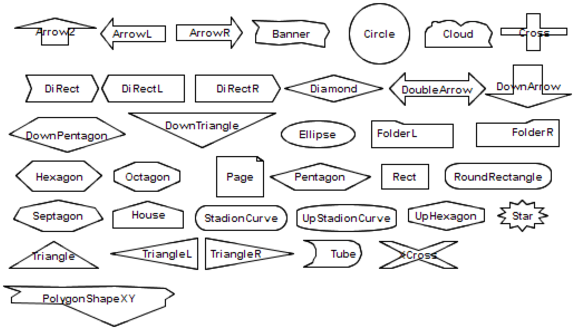
Figure C.1: Some of the standard shapes
Figure C.1 visualizes the pre-defined graph shapes. Note that by default the dimensions of a shape are adjusted from the area that the object label occupies. This is fine for the shapes that are close to a rectangle. The other shapes should be used in combination with the size "resizable".
A variant of the "resizable" option is the "wrap" option. It will additionally wrap the node label text according to the current node size. The "wrap" option renders the node label with the HTML implementation of Java.
Examples for the use of resizable shapes graphical types can be found in the CB-Forum at .
You can extend the shapes by using the parameterized graph type PologonShape as shown in the previous subsection. Use the "align" property to specify at which position the node’s label should be displayed. Default is "center". The above link also contains examples of user-defined shapes.
You can specify an image icon that is displayed instead of a shape to be drawn for the small compoment of a node (CBIndividual). The syntax for specifying an image icon is
image: "<image file location>"
You can specify either the URL of the image file or the local path of the file in the URL syntax. For example
Class AgentGT in JavaGraphicalType with
rule
gtrule : $ forall a/Agent (a graphtype AgentGT) $
property
textcolor : "0,0,0";
linecolor : "0,0,0";
image: "http://myserver.comp.eu/images/AgentIcon.png"
implementedBy
implBy : "i5.cb.graph.cbeditor.CBIndividual"
priority
pr : 20
end
associates the graphical type AgentGT to the image icon AgentIcon.png. Note that only normal http addresses are supported, not https. You can also point to local files via the file protocol:
Class AgentGT in JavaGraphicalType with
rule
gtrule : $ forall a/Agent (a graphtype AgentGT) $
property
textcolor : "0,0,0";
linecolor : "0,0,0";
image: "file:///home/jonny/images/AgentIcon.png"
implementedBy
implBy : "i5.cb.graph.cbeditor.CBIndividual"
priority
pr : 20
end
Note that the image icon is looked up by CBGraph. Hence, the location must be in the file system of the computer on which CBGraph runs. If you place the image icon on a web server, then CBGraph will be able to fetch it from any computer provided that the access rights are set properly. Note that the URL must use the "http" protocol. CBGraph does not support "https" links for image files.
If you specify an image icon for a graphical type, then you can also set its textposition, for example:
...
image: "file:///home/jonny/images/AgentIcon.png";
textposition: "top";
...
By default, the node’s text label is placed at the bottom of the image. In this case it shall be placed on top of it. Other possible values are "center", "left", and "right". Note that the property textposition is only evaluated in combination with an icon image. If a graphical type has no image ocon, then any text position specified for it would be ignored. In most cases, the default value "bottom" is just fine.
You can also combine shapes with image icons. In such cases, the image icon plus the label are the "inner content" and the shape is drawn around it. In the example below, the label is placed left of the image icon. Both are aligned in the center of a circular shape with gray background and black line color. CBGraph shall compute the required size of the surrounding shape from the dimensions of the image icon and its label. An exception holds when the "size" property is set to a fixed dimension like "50x40".
...
image: "file:///home/jonny/images/AgentIcon.png";
textposition: "left";
shape : "i5.cb.graph.shapes.Circle";
align : "center";
bgcolor : "200,200,200";
linecolor : "0,0,0";
...
The location specified in the "image" and "bgimage" property can either be a URL to an image file (starting with "http://" or "file://", not "https://") or a relative file location such as "diaicons/icon1.png". In the latter case, CBGraph shall first check if a local directory "CBICONS" exists in the ConceptBase installation directory (environment variable CB_HOME). If that exits, it shall expand the relative path to and absolute path using the location of CB_HOME. If the local directory does not exist, CBGraph shall expand the relative path to a URL starting with "http://conceptbase.sourceforge.net/CBICONS/". You can add your own icons to the local directory CBICONS in your ConceptBase installation directory. Below is an example of a relative image location.
...
image: "images/AgentIcon.png";
...
Further examples on using image icons are provided in the CB-Forum at .
Nodes and links get their graphical properties from the graphical type assigned to them. The assignment is typically defined by deductive rules deriving a fact (x graphtype gt). In general, several such facts may be true for a given object x. Then, the priority of the graphical type is used to pick a unique solution. As a result, all objects with the same graphical types are also rendered in the same way, except of the name of the object.
In some situations, one may want to assign specific graphical properties to objects depending on the object state. The graphical type provides the general properties and specific graphical properties are derived from the object. For example, all employees could be displayed by a rectangular node with white background, but employees with a high salary are displayed in yellow color. Further, employees that are assigned to departments get a thicker line width.
In principal, the different cases can be realized by dedicated graphical types. In the example above, one would need at least four different graphical types (regular employees without department, high salary employees without department, regular employees with department, and high salary employees without department). The different cases thus lead to an explosion of graphical types.
ConceptBase thus provides a second mechanism to directly assign graphical properties to objects. The graphical properties are defined for any proposition:
Proposition with
attribute
gproperty: Proposition
end
Note that the target class is Proposition rather than String, as used for the attribute property of graphical types. The reason is to add more flexibility, e.g. to assign integers as values for certain gproperty attributes like line width.
Any object3may have (derived or explicit) gproperty attributes. The values of these attributes overrule the corresponding values of the graphical type of the object:
bill in Employee with
...
gproperty
bgcolor: "240,240,0";
linecolor: "0,0,220"
end
The properties may also be derived by rules, e.g.
Employee in Class with
attribute
salary: Integer
rule
re1: $ forall e/Employee s/Integer (e salary s) and (s > 1000)
==> (e gproperty/bgcolor "255,255,200") $
end
The labels of the gproperty attributes shall be taken from the list in section C.3.1. The object-specific graphical properties are not assigned to any palette. They are global and overrule the properties from the graphical type. It could be that there are multiple rules that derive the same gproperty attribute, e.g.
Individual in Class with
rule
rx1: $ forall x/Individual (x gproperty/bgcolor "255,255,255") $
end
This rule may collide with rule re1. In such cases, both "255,255,200" and "255,255,255" as values of bgcolor. CBGraph will then pick any of them (actually the last one transmitted overrules any previous ones). Since the order is subject to the CBserver rule engine, one can hardly predict, which value prevails. Hence, write design the rules in such a way that such collisions are avoided.
The gproperty attribute label adds a new functionality to the system: you can overrule the node and link name displayed in CBGraph. For example, it may be useful to replace the name of a shelf with its current fill level. Another example are ’places’ of petri nets. Instead of the place name, one can display the number of tokens of that place as the label of the place node.
Another interesting gproperty attribute is ’labellength’. By default, CBGraph assumes a maximum label length of 40 characters. If the node label length exceeds this threshold, it will be truncated and the last four characters are set to " ...". If you need to have longer labels, then use the ’labellength’ property. An example shows how to use it:
Employee in Class with
attribute
name : String
rule
r1 : $ forall e/Employee n/String (e name n) ==> (e gproperty/label n)$;
r2 : $ forall e/Employee (e gproperty/labellength 50)$
end
bill in Employee with
name
n : "William the Conquerer from Abessinia della Cruz"
end
You can easily check, which object-specific properties are currently assigned to objects by the following query:
ObjectProperty in QueryClass isA Proposition with
retrieved_attribute
gproperty : Proposition
end
You can retrieve the objects with colliding gproperty attributes via the query
ObjectWithMultipleProperties in QueryClass isA Proposition with
retrieved_attribute
gproperty : Proposition
constraint
clash : $ exists L/Label p1,p2/Proposition (this gproperty/L p1) and
(this gproperty/L p2) and (p1 <> p2) $
end
We advise to use the gproperty feature in combination with graphical types. The graphical type of an object provides the graphical properties that apply to all objects that fall into the class covered by the graphical type. The object-specific properties then overrule certain properties of that graphical type or add properties that were not defined by the more general graphical type. Use the gproperty feature with great care. For example, assigning object-specific properties to all instances of the class Individual is not wise since Individual is a generic class: all node-like objects are instances of Individual.
Derived links (and attributes) are displayed by default with the graphical type ImplicitAttributeGT, i.e. a dashed line with the attribute label defined at the class level. Derived links have no object identity. Thus, one cannot attach a graphtype or gproperty attribute to them.
ConceptBase uses another method to allow user-definable graphical types for such links. Assume, there is a class definition as follows:
Person in Class with
attribute
knows : Person
rule
trrule : $ forall x,y,z/Person
(x knows y) and (y knows z)
==> (x knows z) $
end
Let the attribute knows be derived by some rules.
Then, one can define a graphical type ImplicitGT_knows that shall be applied to all derived using the class label knows, e.g.
ImplicitGT_knows in JavaGraphicalType with
property
textcolor : "20,20,220";
edgecolor : "250,20,20";
bgcolor : "255,255,255,100";
edgestyle : "dashdotted";
edgewidth : "3"
implementedBy
implBy : "i5.cb.graph.cbeditor.CBLink"
priority
p : 10
end
This graphical type then has to be added to the right graphical palette:
PersonPalette in Class,JavaGraphicalPalette with
contains,defaultIndividual
xx1 : DefaultIndividualGT
...
contains
xx14 : ImplicitGT_knows
end
Note that the label of the graphical type starts with the prefix ImplicitGT_, which is then followed by the label of the derived link. CBGraph shall assign this graphical type for derived links if the current graphical palette contains such a graphical type. Otherwise, the default (usually ImplicitAttributeGT or the graphical type listed as implicitAttribute in the graphical palette) is used.
The user-defined graphical types for derived links allows to create domain-specific visualizations of derived information. It is rather common to have multiple derived link types such as knows. It thus makes sense to distinguish them also in the graphical visualization.
Derived instantiations ("in") and derived specializations ("isA") are handled differently. Their dedicated graphical type is specified in the graphical palette as follows:
contains,implicitIsA
c3 : ImplicitIsAGT
contains,implicitInstanceOf
c4 : ImplicitInstanceOfGT
Their link name is fixed in the database is fixed. Derived attributes in contrast can have any link name.
The Employee model can be found in the directory $CB_HOME/examples/QUERIES/.
It consists out of the following files:
Note, that the files must be loaded in this order into the server.
This example gives a first introduction into some features introduced in
ConceptBase version 4.0. It demonstrates the use of meta formulas and
graphical types while building a Telos model describing
Entity-Relationship-Diagrams. The following model forms the basis:
{**************************}
{* *}
{* File: ERModelClasses *}
{* *}
{**************************}
Class Domain
end
Class EntityType with attribute
eAttr : Domain;
keyeAttr : Domain
end
Class RelationshipType with attribute
role : EntityType
end
Class MinMax
end
"(1,*)" in MinMax with
end
"(1,1)" in MinMax with
end
Attribute RelationshipType!role with attribute
minmax: MinMax
end
The model defines the concepts of EntityTypes and RelationshipTypes. Each entity that participates in a relationship plays a particular role. This role is modelled as a Telos attribute-link of the object RelationshipType. The attributes describing the entities are modelled as Telos attribute-links to a class Domain containing the value-sets. Roles can be restricted by the “(min,max)”-constraints “(1,*)” or “(1,1)”. The next model contains a concrete ER-model.
{**************************}
{* *}
{* File: Emp_ERModel *}
{* *}
{**************************}
Class Employee in EntityType with
keyeAttr,attribute
ssn : Integer
eAttr,attribute
name : String
end
Class Project in EntityType with
keyeAttr,attribute
pno : Integer
eAttr,attribute
budget : Real
end
Integer in Domain end
Real in Domain end
String in Domain end
Class WorksIn in RelationshipType with role,attribute
emp : Employee;
prj : Project
end
WorksIn!emp with minmax
mProjForEmp: "(1,*)"
end
WorksIn!prj with minmax
mEmpForProj: "(1,*)"
end
ConceptBase in Project with pno
cb_pno : 4711
end
Martin in Employee with ssn
martinSSN : 4712
end
M_CB in WorksIn with
emp
mIsEmp : Martin
prj
cbIsPrj : ConceptBase
end
Hans in Employee with ssn
hans_ssn : 4714
end
The entity-types Employee and Project participate in a binary relationship WorksIn. The attributes Employee!ssn and Project!pno are key-attributes of the respective objects.
The above model distinguishes attributes and key attributes. One important constraint on key attributes is monovalence. In the previous releases of ConceptBase it was possible to declare Telos-attributes as instance of the attribute-categories single or necessary, but the constraint ensuring this property could not be formulated in a general manner, because the use of variables as placeholders for Telos-classes e.g in an In-Literal was prohibited. To overcome this restriction, meta formulas have been integrated into the system. An assertion is a meta formula if it contains such a class-variable. The system tries to replace this meta formula by a set of semantic equivalent formulas which contain no class-variables. In previous releases properties as single or necessary had to be ensured “manually” by adding a constraint for each such attribute. This job is now performed automatically by the system.
The following meta formula ensures the necessary property of attributes, which are instances of the category Proposition!necessary. The semantics of this property is, that for every instance of the source class of this attribute there must exist an instantiation of this attribute.
Class with constraint, attribute
necConstraint:
$ forall c,d/Proposition p/Proposition!necessary x,m/VAR
P(p,c,m,d) and (x in c) ==>
exists y/VAR (y in d) and (x m y) $
end
It reads as follows:
For each attribute with label m between the classes c and d, which instantiates the attribute Proposition!necessary and for each instance x of c there should exist an instance y of d which is destination of an attribute of x with category m.
One should notice that the predicates In(x,c) and In(y,d) cause this formula to be a meta formula. The instantiation of x and m to the class VAR is just a syntactical construct. Every variable in a constraint has to be bound to a class. This restriction is somehow contrary to the concept of meta formulas and the VAR-construct is a kind of compromise. The resulting In-predicates are discarded during the processing of meta formulas. The VAR-construct is only allowed in meta formulas. It enables the user to leave the concrete classes of x and m open, without instantiating them to for example to Proposition.
The single-constraint can be defined in analogy. These constraints can be added to the system as if they were “normal” constraints. Their effect becomes visible, when declaring attributes as necessary or single. This is done in the following model.
{**************************}
{* *}
{ File: ERSingNec *}
{* *}
{**************************}
{* necessary constraint (metaformula) *}
Class with constraint
necConstraint:
$ forall c,d/Proposition p/Proposition!necessary x,m/VAR
P(p,c,m,d) and (x in c) ==>
exists y/VAR (y in d) and (x m y) $
end
{* every Entity has a key *}
Class EntityType with
necessary
keyeAttr : Domain
end
{* single constraint (metaformula) *}
Class with constraint
singleConstraint :
$ forall c,d/Proposition p/Proposition!single x,m/VAR
P(p,c,m,d) and (x in c) ==>
(
forall a1,a2/VAR
(a1 in p) and (a2 in p) and Ai(x,m,a1) and Ai(x,m,a2) ==>
(a1=a2)
) $
end
{* every Entity key is monovalued ( = necessary and single)*}
Class EntityType with rule
keys_are_necessary:
$forall a/EntityType!keyeAttr In(a,Proposition!necessary)$;
keys_are_single:
$forall a/EntityType!keyeAttr In(a,Proposition!single)$
end
The effects of this transaction can be shown by displaying the instances of instances of the class metaMSFOLconstraint. The single- and necessary constraints are inserted into this class after adding them to the system. These constraints themselves can have specializations: constraints which are added automatically to the system when inserting objects into the attribute-category single resp. necessary.
For the ER-example, one of the created formulas reads as:
$ forall x/EntityType (exists y/Domain (x keyeAttr y)) $
We observe the relationship to the necConstraint-formula: the formula has been generated by computing one extension of In(p,Proposition!necessary) and P(p,c,m,d) and replacing the predicates In(p, Proposition!necessary and P(p,c,m,d) by this extension, which results in the following substitution for the remaining formula:
| c | EntityType |
| d | Domain |
| m | keyeAttr |
Another use of Metaformulas is the formulation of deductive rules. Metaformulas defining deductive rules extend the possibilities of defining derived knowledge.
This example first demonstrates the use of meta formulas to assign graphical types to object-categories. The minimal graphical convention for ER-diagrams is to use rectangular boxes for entities and diamond-shaped boxes for relationships. In our modelling example these graphical types are assigned to objects which are instances of EntityType or RelationshipType and to instances of these objects.
{*******************************************}
{* *}
{* File: ERModelGTs *}
{* Definition of the graphical palette for *}
{* ER-Diagrams for use on color displays *}
{* *}
{*******************************************}
{* graphical type for inconsistent roles *}
Class InconsistentGtype in JavaGraphicalType with
attribute,property
textcolor : "0,0,0";
edgecolor : "255,0,0";
edgewidth : "2"
implementedBy
implBy : "i5.cb.graph.cbeditor.CBLink"
priority
p : 14
end
{* graphical type for entities *}
Class EntityTypeGtype in JavaGraphicalType with
property
bgcolor : "10,0,250";
textcolor : "0,0,0";
linecolor : "0,55,144";
shape : "i5.cb.graph.shapes.Rect"
implementedBy
implBy : "i5.cb.graph.cbeditor.CBIndividual"
priority
p : 12
end
{* graphical type for relationships *}
Class RelationshipGtype in JavaGraphicalType with
property
bgcolor : "255,0,0";
textcolor : "0,0,0";
linecolor : "0,0,255";
shape : "i5.cb.graph.shapes.Diamond"
implementedBy
implBy : "i5.cb.graph.cbeditor.CBIndividual"
priority
p : 13
end
{* graphical palette *}
Class ER_GraphBrowserPalette in JavaGraphicalPalette with
contains,defaultIndividual
c1 : DefaultIndividualGT
contains,defaultLink
c2 : DefaultLinkGT
contains,implicitIsA
c3 : ImplicitIsAGT
contains,implicitInstanceOf
c4 : ImplicitInstanceOfGT
contains,implicitAttribute
c5 : ImplicitAttributeGT
contains
c6 : DefaultIsAGT;
c7 : DefaultInstanceOfGT;
c8 : DefaultAttributeGT;
c14 : EntityTypeGtype;
c15 : RelationshipGtype;
c16 : InconsistentGtype
end
EntityType with rule
EntityGTRule:
$ forall e/EntityType A(e,graphtype,EntityTypeGtype)$ ;
EntityGTMetaRule:
$ forall x/VAR (exists e/EntityType In(x,e)) ==>
A(x,graphtype,EntityTypeGtype)$
end
RelationshipType with rule
RelationshipGTRule:
$ forall r/RelationshipType A(r,graphtype,RelationshipGtype)$ ;
RelationshipGTMetaRule:
$ forall x/VAR (exists r/RelationshipType In(x,r)) ==>
A(x,graphtype,RelationshipGtype) $
end
To activate the ER_GraphBrowserPalette , select this graphical palette when you start the Graph Editor or make a new connection in the Graph Editor (see section 8.2).
The necessary and single conditions on attributes from the previous section could also be expressed as deductive rule. The difference is, that if they are formulated as constraints, every transaction violating the constraint would be rejected. The definition of rules handling necessary and single enables the user to handle inconsistencies in his model. The following example demonstrates this concept in the context of our ER-model. The example defines rules handling the restriction of roles by the “(min,max)”-constraint “(1,*)”. This restriction is not implemented using constraints. Instead a new Class Inconsistent is defined, containing all role-links which violate the “(1,*)” constraint. These inconsistent links get a different graphical type (e.g a red coloured attribute link) than consistent role links to visualize the inconsistency graphically.
{*******************************************}
{* *}
{* File: ERIncons *}
{* Definition of a Class "Inconsistent" *}
{* containing roles violating the "(1,*)" *}
{* constraint *}
{* *}
{*******************************************}
{* new attribute category revNec for attributes
which are "reverse necessary" *}
Class with attribute
revNec : Proposition
end
{* roles with "(1,*)" must fullfill revNec property *}
RelationshipType with rule, attribute
revNecRule:
$ forall ro/RelationshipType!role
A(ro,minmax,"(1,*)") ==> In(ro,Class!revNec) $
end
{* definition of Class "Inconsistent" *}
{* forall instances "p" of Class!revNec:
If there exists a destination class "d", there must
be a source class "c" with an attribute instantiating "p",
otherwise "p" is inconsistent
*}
Class Inconsistent with rule, attribute
revNecInc:
$ forall p/Class!revNec
(exists c,m,d/VAR y/VAR P(p,c,m,d) and In(y,d) and
not(exists x/VAR In(x,c) and A(x,m,y))) ==>
In(p,Inconsistent)$
end
To activate the different graphical representation of inconsistent roles, the definition of the graphical type for attributes has to be modified. Tell the following frame:
Inconsistent with rule,attribute
incRule :
$ forall e/Attribute In(e,Inconsistent) ==>
(e graphtype InconsistentGtype)$
end
The effect of these transactions can be shown when starting the Graph Editor and displaying the attributes of the RelationshipType instance WorksIn. Be sure to switch the graph editor to the palette ER_GraphBrowserPalette before doing so (see section 8.2). The attribute WorksIn!emp is displayed as red link like in figure D.1. If you had already started the graph editor before telling the last frame, you should synchronize it with the CBserver via the menu Current connection. By telling
H_CB in WorksIn with
emp
hIsEmp : Hans
prj
cbIsPrj : ConceptBase
end
the inconsistency is removed from the model. To see the update of the graphical type in the Graph Editor, you have to select the inconsistent link and select “Validate and update selected objects” from the “Current connection” menu.
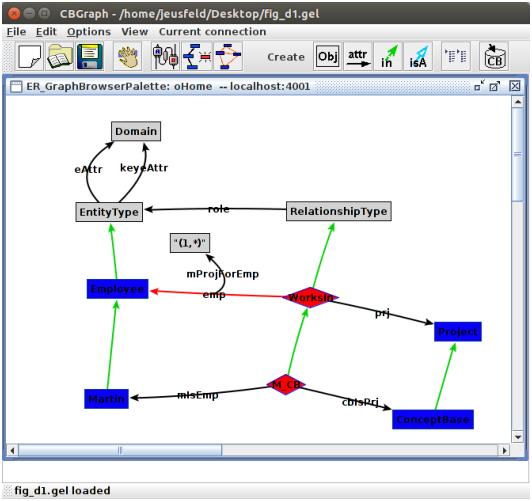
Figure D.1: Graph Editor showing the example model with inconsistent link
Metaformulas extend the expressive power of defining rules and constraints for ConceptBase Objectbases. The implementation of this mechanism is not complete at the moment, but should enable the use of the most frequently requested concepts like single and necessary. Some limitations are listed below:
$ forall x/1 ...$are regarded as redundant, because the object 1 as instance of Integer should have no instances. Another justification is, that the use of meta formulas should be restricted to user-defined modeling tasks. Manipulation of the most system classes is disabled for reasons of efficiency and safety.
In the case of deductive rules, additional problems arise similar to the straticfication problem. At the moment only monotonous transactions are allowed. This means that generated formulas can only be inserted or deleted during one transaction, both operations at the same time are not permitted.
The meta formula mechanism also influences the efficiency of the system: every transaction has to be supervised whether it affects the meta formulas or one of the generated formulas. If the preconditions of the generated formulas don’t hold anymore, e.g. if the instances of EntityType!eAttr are no longer instances of Proposition!necessary in the previous model, the corresponding generated formula has to be deleted. If additional attributes are instantiated to Proposition!necessary, additional formulas have to be created. The process of supervising the transactions is quite expensive and if it slows down the overall performance too much, some of the meta formuals can be disabled temporarily (Untelling a meta formula removes all the code generated).
Many more examples for meta formulas, e.g. for defining transitivity of attributes, are available from the CB-Forum ().
This chapter gives an overview of the query classes which are predefined in a standard ConceptBase installation. The names of parameters of the queries are set in typewriter font. Most of the queries listed here are used by the ConceptBase user interface CBIva to interaction with the CBserver. A normal user typically formulates queries herself. In fact, most queries listed below are very simple and directly representation as query class. An exception are the functions for computation and counting. They cannot be expressed by simple query classes but extend the expressiveness of the system.
These queries can also be used in the constraints of other queries.
Functions may also be used within other queries. You may define your own functions (see section 2.5).
ConceptBase realizes the arithmetic functions via its host Prolog system SWI-Prolog. Integer numbers on Linux are represented as 64-bit numbers, yielding a maximum range from −264−1 to 264−1. SWI-Prolog supports by default under Windows and Linux64 arbitrarily long integers. Real numbers are implemented by SWI-Prolog as 64-bit double precision floating point numbers. ConceptBase uses 12 decimal digits.
For example, the expression toLabel(concat("*",1+2)) will return C42_3. The substring "C42_" is the canonical representation (ASCII number) of "*". The subexpression 1+2 is evaluated to 3.
These queries must not be used within other queries as they do not return a list of objects. They may only be used directly from client programs.
An LPI plug-in ("logic plug-in") is a small Prolog program that is attached to the CBserver (which is implemented in Prolog) at startup-time. It extends the functionality of the CBserver, for example for user-defined builtin queries. A plug-in can also interface to the services of the operating system1.
You can create a file like myplugin.swi.lpi to provide the implementation for user-defined builtin queries or for call actions in active rules (see section 4). You can use the full range of functions provided by the underlying Prolog system (here: SWI-Prolog, ) and the functions of the CBserver to realize your implementation. You can consult the the CB-Forum for some examples at . You find there examples for sending emails from active rules, and for extending the set of builtin queries and functions.
Once you have coded your file myplugin.swi.lpi, there are two methods to attach it to the CBserver. The first method is to copy the file into an existing database directory created by the CBserver:
cbserver -g exit -d MYDB cp myplugin.swi.lpi MYDB
The first command creates the database directory MYDB if not already existing and initializes it with the pre-defined system classes and objects. The second command copies the LPI file to the database directory. This method makes the definitions only visible to a CBserver that loads the database MYDB.
The second method instructs ConceptBase to load your LPI code to any new database created by the CBserver. To do so, copy the LPI file into the system database directory that holds the definitions of predefined ConceptBase objects:
cp myplugin.swi.lpi <CB_HOME>/lib/SystemDB
where CB_HOME is the directory into which you installed ConceptBase. The number of LPI files is not limited. You may define zero, one or any number of plug-in files.
A couple of useful LPI plug-ins are published via the CB-Forum, see . Note that these plug-ins are copyrighted and typically come with their own license conditions that may be different to the license conditions of ConceptBase. If you plan to use the plugins for commercial purposes, you may have to acquire appropriate licenses from the plug-in’s authors.
There are two ways to trigger the call of a procedure implemented by an LPI plugin.
If the code of an LPI plugin realizes a ConceptBase function, e.g. selecting the first instance of a class, then you can use that function whereever functions are allowed. As an example, consider the definition of the LPI plugin selectfirst.swi.lpi from :
compute_selectfirst(_res,_class,_c1) :-
nonvar(_class),
cbserver:ask([In(_res,_class)]),
!.
tell: 'selectfirst in Function isA Proposition with
parameter class: Proposition end'.
The first clause is the Prolog code. The predicate must start with the prefix compute_ followed by the name of the function. The first argument is for the result of the function. Subsequently, each input parameter is represented by two arguments, one for the input parameter itself and a second as a placeholder of the type of the input parameter. The second clause tells the new function as ConceptBase object so that it can be used like any other ConceptBase function. For technical reasons, the ’tell’ clause may not span over more than 5 lines. Use long lines if the object to be defined is large. The function object (here: selectfirst) is stored in the System module of the database. This is the root module of the module hierarchy, thus functions defined in this way are visible and executable in all sub-modules. If you omit the ’tell’ clause in the LPI file, then you need to tell it manually to the database. This can also be done in a module different to System. In this case, the function can only be called in those modules where the function object is visible.
If you just want to invoke the procedure defined in an LPI plugin via the CALL clause of an active rule, you do not need to include a ’tell’ clause. Consider for example the SENDMAIL plugin from .
You need to be very careful with testing your code. Only use this feature for functions that cannot be realized by a regular query class or by active rules. LPI code has the full expressiveness of a programming language. Program errors may lead to crashes of the CBserver or to infinite loops or to harmful behavior such as deletion of files. Query classes, deductive rules and integrity constraints can never loop infinitely and can (to the best of our knowledge) only produce answer, not changes to your file system or interact with the operating system. Active rules could loop infinitely but also shall not change your file system and shall not interact with the operating system unless you call such code explicitely in the active rule.
You can disable the loading of LPI plugins with the CBserver option -g nolpi. The CBserver will then not load LPI plugins upon startup. This option might be useful for debugging or for disabling loading LPI plugins that are configured in the lib/SystemDB sub-directory of your ConceptBase installation.
The CBserver plug-ins need to interface to the functionalities of the CBserver, the Prolog runtime, and possibly the operating system. To simplify the programming of the CBserver plug-ins, we document here the interface of the module cbserver. We assume that the code for the plug-ins is written in SWI-Prolog and the user is familiar with the SWI-Prolog system.
Note that ConceptBase internally manages concepts by their object identifier. The programming interface instead addresses concepts (and objects) by their name, i.e. the label of the object or the Prolog value corresponding to the label. You may have to use the procedure makeName and makeId to switch between the two representations. The two procedures arg2val and val2arg are useful for defining new builtin functions on the basis of Prolog’s arithmetic functions. Assume for example, that the object identifier id123 has been created to correspond to the real number 1.5. Then, the following relations hold: makeName(id123,’1.5’), arg2val(id123,1.5). Hence, makeName returns the label ’1.5’ whereas arg2val returns the number 1.5.
The interface shall be extended in the future to provide more functionality. Be sure that you only use this feature if user-defined query classes cannot realize your requirements!
This document was translated from LATEX by HEVEA.
{kind=link}
{kind=link}